本篇除了部分标题外全是机翻，内含的机翻笑话宛如克洛诺斯扩张区隐藏的财富一样多，且有待各位发掘（心虚）
【起源】
“‘Footfallen’一词指的是那些来自 Koronus Expanse 定居点的人――尤其是像 Footfall 这样的地方。生活在这些世界和定居点上的人们与各式各样的亵渎者，从叛徒的灵能者和异形，到异教徒和邪教徒。你生活在一个罪恶的巢穴中，你学会了狡猾，狡猾，组织交易和整个广域网的联系网络。”
虽然人类帝国可能会在整个银河系拥有迫在眉睫的领土，但事实是，在地图上存在许多黄金王座之光无法照耀的缝隙。腐败、贪婪、无法无天和邪恶往往在这些地方扎根。完美的例子是 Koronus Expanse，这是 Halo Stars 内的一个未开发空间区域，以及作为通往更广阔 Expanse 的门户的 Footfall 定居点。
在 Koronus Expanse，人类建立的少数驿站和居住地已成为探索的中心。它们还充当着连接大克罗诺斯广阔地区分散的人类住区和企业的关键纽带。有许多这样的前哨，但最著名的是Footfall的虚空站，这反过来又给住在这些地方的人们起了一个名字――Footfallen。
Footfallen 是该地区众所周知的开拓者，没有人比他们更了解这一点。他们往往是狡猾的、狡猾的和多疑的；他们已经学会保护他们拥有的哪些优势可以加速他们走向财富和荣耀的道路，他们的道德观与跨越国界的同时代人不同。 Footfallen 还与帝国公民认为是亵渎者的人联系在一起――累犯、异形、变种人，甚至更糟。然而，尽管有这些普遍性，但如果这是Footfallen知道的一件事，那就是Koronus Expanse！
堕落者通常被称为“浩瀚的真正孩子”。这些男人和女人是很久以前来到这个地区的定居者和流氓商人附庸的后裔，他们一生中的大部分时间都在与科罗努斯广域内的各种居民互动。无论他们的出生地是哪里，他们都有相似的外表和举止，并且习惯于与各种各样的人打交道：宗教狂热者、邪教徒、惯犯、间谍、刺客、毒枭部落、游牧民族、帝国司法的逃犯、商人、异形、叛逆的灵能者、流氓商人和他们的船员，甚至是毁灭力量的崇拜者。这些世界是文化和信仰的巨大熔炉，只有通过它们，人们才能获得有关科罗努斯广域的有用信息。
最近，还有一些其他的东西让 Footfallen 与众不同，甚至与其他在相同环境中长大的 Expanse 居民也不同。在过去的几十年里，一些出生在大草原上的人出现了一种令人不安的趋势。众所周知，他们中的一些人表现出一种奇怪的“第六感”，虽然这不是真正的精神能力，但很可能源于亚空间。
你一生都生活在构成 Footfall 定居点或 Koronus Expanse 内的另一个人类定居点的墙壁和栖息地中。无论你在哪里长大，你都知道这不一定是适者生存，而是最聪明的人生存。你狡猾，狡猾，也许还有点诡诈。然而，你已经学会了接受这些特质，因为这就是你生存的方式――依靠你的智慧和魅力，而不是枪的空洞保护。
你一生都在与社会的底层和上层交往，建立了一个可能延伸到整个 Expanse 的联系网络。你认为自己是秘密和信息的绝世交易者，也许这就是你如何从你家的粪坑中走出来的。你可能正在服务――或指挥――一艘流氓商人的船，因为你对广域和其中的黑暗秘密有着无与伦比的了解。或者，您可能只是随路而行，充当遥远虚空未探索角落的向导。
在 Origin Path 图表上，可能会选择 Footfallen 而不是 Void Born。
特性修改器：�C5 弹道技能； �C5 韧性； +5 敏捷； +5 奖学金
起始技能：步履蹒跚的角色以普通知识 (Koronus Expanse) (Int) 作为训练技能开始。
街头知识：由于他们生活在“街道”上，Footfallen 在所有学术知识测试中都会受到 -5 的惩罚，除了那些涉及 Koronus Expanse 信息的测试（无论给定的 Scholastic Lore Test 是否涉及 Koronus expanse 是直到 GM）。
联系网络：当他们学会生存时，Footfallen 会生成一个可以延伸到整个科罗努斯广域的联系网络。所有Footfallen角色都获得从以下列表（选择一项）中选择的Peer Talent：Astropaths，Insane，Underworld，Void Born，Workers。
停靠港：由于Footfallen称之为家的许多定居点都有众多派系，甚至是物种，因此他们倾向于接受成千上万路过他们的旅行者的不同类型的姿势和肢体语言。因此，所有 Footfallen 角色都以多语言天赋开始。
第六感：虽然他们无法解释，但真正的堕落者对近乎超自然的广域有一种奇怪的调谐。所有Footfallen角色都将Psyniscience作为一项训练有素的技能获得，尽管他们不计入psykers。然而，他们对宗教裁判所感兴趣，并以竞争对手（宗教裁判所）天赋开始游戏。起始伤口：步履蹒跚的角色将他们的起始韧性加值加倍，并在结果中加上 1d5 来确定他们的起始伤口。
起始命运点：投掷 1d10 来确定一个堕落者角色的起始命运点。在掷出 1�C4 时，他以 2 命运点开始；在 5�C7 的掷骰上，他以 3 个命运点开始；在 8�C10 的掷骰上，他以 4 个命运点开始。
“边境世界是位于帝国边缘的无法无天的星球。野蛮残暴，你的世界一直都是家
给少数原始殖民者后裔的定居者。你坚韧不拔，并且知道银河系中唯一的正义就是你自己伸张的正义。”
有许多边境世界散布在帝国的边界上，尤其是在卡利西斯星区和科罗诺斯广域内。边境世界不仅仅是位于地图边缘的世界或系统。它远离权力中心、军队的保护和教会的影响。其中许多世界由少数人口中心组成，而且它们的环境通常与任何死亡世界一样致命。有些行星几乎不适合居住；其他几乎没有探索。这些都是杂乱无章的地方，没有什么奢侈品，也没有多少防御措施。正因为如此，许多人对异形入侵者和海盗的掠夺持开放态度。边境世界也是那些试图逃避帝国正义的人的避风港。
由于他们在边境的独特位置，民众与异形和非人类物种有广泛的往来并不罕见。事实上，一些定居点只能靠与外人进行贸易才能生存。
边境世界，例如 Faldon Kise 或 Solace Encarmine，通常几乎不能被归类为“文明”。民众粗暴而坚定，这些世界上的许多定居点摇摇欲坠，类似于原始、破败、干燥、尘土飞扬的地方，生活严酷无情，正义来自枪杆子（或最后一根绳子）。在这里，人们必须学会独立生存。没有 Adeptus Arbites Precinct-fortresses 来维护法律，没有 PDF 来保护公民免受入侵，也没有舰队在轨道上等待将他们带到安全的地方。人们坚韧而勤奋，习惯于在没有其他世界理所当然的便利的情况下生活。他们也很孤立，更喜欢自己处理事情，很少有时间受到外界的干扰。
这些世界的环境差异很大――从死亡世界到虚拟天堂――但大多数往往介于两者之间。这些世界上的定居点也各不相同，但通常很小且相当原始。那些前往这些地方的人必须准备好面对任何环境，从有毒的粘液丛林到刮骨的风。
虽然教育程度低，但那些在边疆世界长大的人已经明白，生存是最重要的。因此，他们是粗暴、粗鲁、粗暴和顽强的人，他们经常拒绝在对抗中退缩――即使面对压倒性的胜算（尤其是当他们认为自己是对的时）。他们对闲聊几乎没有耐心，对那些不诚实和声名狼藉的人更没有耐心。他们是优秀的侦察员和觅食者。这些人进行贸易并与异形种族（甚至是变种人）交往也并非闻所未闻，因为大多数定居点都缺乏帝国教派代表来说服他们相信这些生物是邪恶的，应该避开或摧毁。
你来自的世界和上面的人一样多变。你像 grox-hide 皮革一样粗犷和坚韧，具有出色的生存本能，这些本能经过多年严酷、赤裸裸的生存磨练。你长大的小镇是一个动荡不安的地方，只有最坚强和最精明的人才能幸存下来。有时，竞争对手会试图制造麻烦，但你、你的邻居和你的家人会联合起来击退他们。有时，一位来自星际之外的旅行者会来到这里，为您带来各种奇特的奇观。有时这些旅行者是人类，有时不是。不管他们是什么，一旦你遇到他们并闻到一千个不同世界的气味，你就会知道你注定要在群星之间旅行。
你有一个不信任和粗暴的外表――至少对那些你不认识的人来说是这样。大多数人不值得你花时间，但那些值得你尊重和感激生活的人。异界人类的偏见让你迷惑；您之前曾与异形和突变体打过交道，并且没有受到任何不良影响。你也以坚韧和坚韧着称，你总是尽最大努力完成你开始的事情。当您做出承诺时，它就像任何书面合同一样铁定，您将不遗余力地兑现它。
在起源路径图上，可能会选择边境世界而不是死亡世界。
特征修饰符：+5 力量； �C5 智力
起始技能：边境世界角色以生存（智力）和争吵（智力）作为训练技能开始。
坚韧如 Grox-Hide：由于他们强壮的体格和一般的粗犷，Frontier worlders 开始时会有一个额外的伤口（已经包含在他们的起始伤口中）。
对局外人的怀疑：边境世界的人物生性多疑。由于这种观点，边疆世界的角色在与他们以前从未见过的人打交道时，在所有友谊测试中都会受到 �C10 的惩罚（具体何时应用此检查取决于 GM）。
顽强的生存主义者：边境上的生活充满了各种各样的恐怖。边境世界的角色从小就学会对周围环境保持警惕，并在面对危险时迅速做出反应。边境世界的角色可以重新投掷他们所做的任何主动投掷，但他们必须接受第二次投掷的结果。
异形互动：在边境世界的人类与异形互动和交易是很常见的事情。由于这种相互作用，边境世界的角色在由具有恐惧 (2) 或恐惧 (1) 的异形引起时免疫恐惧。但是，如果恐惧测试的难度为 3 或更高，它会正常影响角色。当然，这种观点经常使他们与教会成员发生冲突，因此在与帝国教派成员打交道时，他们在所有互动测试中都会受到 -5 的惩罚。
起始伤口：边境世界角色将他们的起始韧性加值加倍，并在结果中加上 1d5+2 以确定他们的起始伤口数量。
起始命运点：投掷 1d10 来确定边境世界角色的起始命运点。在 1 - 5 上，他以 2 命运点开始；在 6 - 10，他开始
有3个命运点。
由于帝国处于持续的战争状态，一些世界被指定为堡垒世界，作为对抗神皇敌人的堡垒。你是那个防御的一部分，阻止门外的邪恶突破。这使你成为帝国强大战争力量荣耀的一部分。
在人类帝国内，很少有地区没有持续的战争。为了遏制最大的威胁，已经建立了整个世界作为堡垒。被称为堡垒世界，整个民众都沉浸在战争中；他们不断地训练，为他们可能被要求保卫帝国的那一天，他们非常认真地对待自己的职责。要塞世界被建立为对抗敌人的堡垒。每个公民都是一名士兵，从他们可以使用武器的那一刻起就接受过战斗训练。也许最著名的要塞世界是卡迪亚星球――一个站在卡迪亚之门尽头对抗恐怖之眼势力的世界。帝国卫队最优秀和最著名的军团通常来自要塞世界。
要塞世界是不常见但必要的行星。它们的建立是为了充当军事据点、集结点和物理威慑。像这样的世界既是堡垒，又是“障碍”；它们通常建立在可居住的星球上，并为战争而建造。连接在一起，他们能够形成用于封锁敌人并阻止他们扩散到帝国的封锁。
要塞世界的生活充满了军事纪律和教义。从公民醒来到入睡的那一刻，他们作为一个军事单位进行训练和运作。要塞世界的所有公民都在为他们被要求将位于他们雉堞城墙外的黑暗推开的那一天做准备。城市是布满大炮的巨大堡垒，工业几乎完全专注于制造战争机器。那些年纪大到可以加入帝国卫队或行星防御部队的人经常被要求这样做，即使是那些太年轻或太虚弱的人也会想办法服役。一个家族同时为帝国服务的情况并不少见，许多这样的帝国卫队军团都拥有丰富而自豪的历史。
从你可以走路和拿着武器的那一刻起，你生命中每一个清醒的时刻都被用来训练与神皇的敌人战斗和杀死。您了解战斗和军事战术的基础知识。你纪律严明、光荣、忠诚，并且非常尊重正直。然而，围绕着你一生的军事教义也使你变得僵硬和教条。你在堡垒城市长大；你的邻居们都有助于保持你世界的强大堡垒与敌人抗衡。作为 Rogue Trader 船员的一员，您可以担任船上的武器大师，或者您可以作为 Rogue Trader 指挥一艘船上的强大武器和军事恭维。无论如何，您都知道自己在战争中的知识和技能得到了充分利用。
在 Origin Path 图表上，可能会选择 Fortress World 而不是 Forge World。
特性修饰符：+5 弹道技能； +5 意志力； �C 5 智力； �C5 奖学金
起始技能：要塞世界角色以密语（军事）（智力）和通用知识（战争）作为训练技能开始。
仇恨的敌人：在敌人的阴影下长大会影响生活在要塞世界的人。他们被教导要毫不犹豫地憎恨并杀死他们的敌人。要塞世界的角色以仇恨天赋开始（选择的群体是要塞世界建立的敌人）。
持续的战斗训练：所有要塞世界的角色都从基本武器训练（Las 或 SP）开始。然而，他们在非战斗主题的社交互动测试中受到 �C5 的惩罚（GM 自行决定）。
钢铁神经：堡垒世界的居民每天都使用实弹和炸药进行训练，并且在武器的火力周围感到舒适。要塞世界的角色获得钢铁天赋的神经。
起始伤口：要塞世界的角色将他们的起始韧性加值加倍，并在结果中加上 1d5+1 来确定他们的起始伤口。
起始命运点：投掷 1d10 来确定要塞世界角色的起始命运点。在 1�C9 的掷骰上，他以 3 命运点开始；在 10 卷上，他以 4 个命运点开始。
“在帝国内部，犯罪如此猖獗，以至于整个世界都被倾倒在人类的渣滓中。囚犯――或者只是普通的不幸居民――在几乎不支持土著生活的世界上勉强度日，更不用说倾倒在其上的人类潮流了。这并不重要，因为来自你们世界的每个人都被认为是狡猾的、撒谎的罪犯，而这个星球被视为庞大的盗贼巢穴。”
在帝国，犯罪十分普遍，以至于整个世界都被用来监禁社会的垃圾。在这些刑罚世界上，居住着帝国的罪犯，将他们关押在那里的守卫，以及任何不幸出生在那里的不幸居民。刑罚世界通常是几乎不适合居住的行星。在这里，犯罪分子在服刑的同时从事各种琐碎的工作；并且只有少数假释出来。在某些世界上，最严重的罪犯（那些罪行不足以导致死亡的罪犯）可能会与其他人隔离开来，但这种做法因世界而异。因此，杀人犯和强奸犯可能与小偷和骗子混在一起。从这个大熔炉中诞生了一个残酷的社会，只有当一个人忘记道德并愿意做任何必要的事情来活到第二天时，生存才会到来。
这些世界是二分法；一方面，它们被用来倾倒不受欢迎的人，另一方面，它们为流氓商人提供了收集消耗性船员的绝佳场所。
刑罚世界是用来流放囚犯的星球。在卡利西斯区，被判处刑罚世界的囚犯都带有条形码纹身，通常位于他们的脖子、前额或身体其他容易被发现的部位。在这里，许多囚犯死于疾病、饥饿、感染、环境、企图逃跑、遭遇残酷的执法守卫或其他一百种疾病中的一种。囚犯在远离家乡的地方被判刑，大多数人再也见不到那个世界了。被判处刑罚世界的囚犯是那些被判犯有不值得处决的罪行的人。有些人觉得被处死的人是幸运的，因为那些被判处刑罚的人会被送到地狱般的地方，那里的死亡来得很慢。唯一拥有任何真正自由的居民是监狱长和他的警卫。
在许多刑罚世界中，行星总督也是监狱的典狱长，他的权威是绝对的。典狱长和他的看守经常虐待囚犯，增加了他们相当大的痛苦和死亡率。
民众往往是刚硬、冷酷、狡猾和不值得信任的人。然而，他们也可能足智多谋，狡猾。他们是闹鬼的人，目睹了大多数人永远不会看到的那种暴行。
你因反人类帝国罪被判刑――或者你的父母可能被判刑，而你只是不幸出生在这里。每天都在为生存而奋斗，并在掠食者和守卫之前领先一步，这些掠食者和守卫在你家的潮湿坑和肮脏的棚户区里跟踪你。你学会了足智多谋和狡猾，但你也被认为是罪犯――即使你一开始并不是这样。因此，您被认为是不值得信任的，甚至可能是真的。然而，努力生存也让你变得坚强，让你变得无情。你已经目睹了你的星球成为无数流氓商人和宪章派船长的垃圾场，让他们把他们可悲的污秽抛在脑后，当他们返回以填补他们的船舱并让他们摆脱悲惨的生活时，作为救赎的地方。
在起源路径图上，可能会选择刑罚世界而不是帝国世界。
特性修饰符：�C5 意志力； +5 感知； +5 韧性； �C5 奖学金
起始技能：刑罚世界角色获得安全（Ag）作为未经训练的基本技能；他们还可以选择欺骗 (Fel) 或恐吓 (S) 作为训练技能。
辛迪加：由于他们在罪犯中度过的时间，探索者知道在拥有蓬勃发展的犯罪下层阶级的世界上寻找谁。因此，他们获得了 Peer (Underworld) 天赋。
罪犯：那些在刑罚世界中花费大量时间的人在谈到帝国的道德时会获得歪曲的观点，并且在帝国当局中的声誉并不那么好。相反，当他们与以下组织打交道时，他们在交互测试中会受到 �C20 的惩罚：仲裁院、教会、执法者和军队，如果他的家乡被人知道（由 GM 决定）。此外，如果这种身份被曝光，探险者可能会发现自己受到当地执法部门和黑社会犯罪头目的审查。
噩梦：被监狱世界的执法者残忍地对待在那些在刑罚世界中幸存下来的人的心灵上留下了印记。他们往往会遭受永远不会消失的噩梦，因此他们会获得 1d5 点精神错乱点和轻睡者天赋――如果不求助于药物或其他类似的帮助，他们再也无法获得体面的睡眠。地下资源：来自刑罚世界的人物认识许多声名狼藉的人。因此，他们通常比通过合法渠道工作的人更容易获得物品。在有犯罪黑社会的世界上进行获取测试时，刑罚世界角色可以选择利用这些资源（前提是它们可用的 GM 规则）以使物品的可用性更常见一个“级别”（至少丰富）。此能力只能在其他游戏会话中使用一次（由 GM 决定），玩家应该记住，这个角色获得的物品很可能是被盗的――他们应该做好准备，以防当局来敲门。
起始伤害：惩罚世界角色将他们的起始韧性加值加倍，并在结果中加上 1d5+1 来确定他们的起始伤害数量。
起始命运点：投掷 1d10 来确定刑罚世界角色的起始命运点。在 1-6 中，他以 2 命运点开始；在 7-9 上，他以 3 个命运点开始；在 10 点上，他以 4 个命运点开始。
“帝国的贵族拥有极端的权力和财富；不仅是贵族家族的，还有其他组织的，比如流氓商人。作为 Rogue Trader 家族王朝的继承人，你已经获得了一切优势，以便有一天你可以登上领导宝座。你认为自己聪明机智，但也很狡猾，而且你非常谨慎，因为一个致命的错误可能导致兄弟姐妹或亲戚继承家族财富――你的遗产只不过是你自己的腐烂尸体。”
在人类帝国内部，有一些处于权力顶峰的人――贵族和统治精英。由于帝国是一个封建社会，因此理所当然地存在着许多类型的贵族家族，包括行星统治者、军事领主和流氓商人。随着时间的推移，一旦发出贸易保证书，流氓商人可能会发现他的帝国正在成长。王朝现在拥有舰队、行星领地和数千名家庭士兵可供召唤。随着时间的推移和家族的不断壮大，它发展成为一个盗贼王朝――能够指挥数十种工艺和无数军队。这一遗产跨越了帝国及其他地区。
为了确保这一遗产得以延续，王朝的领主和女士们以他们的习俗认为合适的方式指定一位继承人。这些儿女可能会发现自己在努力争取王朝领袖的青睐，以求获得继承权。很多时候，在贵族家庭中，二三甚至四孩子都觉得自己别无选择，只能走出去为自己出名，或者干脆默默无闻，希望环境能改变自己的命运。然而，在 Rogue Trader 家庭中情况并非如此，他们都应该工作并证明自己。通常情况下，这些高贵的后裔最终会密谋并策划各种方式，以使家族领袖别无选择，只能将他们命名为继承人。
Rogue Trader 氏族的孩子们学习各种普通和深奥的科目。他们被指派了氏族负担得起的最好的导师和导师，当孩子进入青春期时，他们有足够的能力被派往更广阔的银河系（通常有保镖随行）。他们已经获得了一切优势，因为他们王朝的未来落在了他们的肩上。
然而，并非所有的继承人都是家庭的最佳选择。有些人是懒惰、无动于衷的人，他们只会挥霍家庭财富，在颓废和变态中度过他们的日子。在这种情况下，这些朝代的领导人往往会选择一个以上的王位继承人；这是一场赌博，以确保他们中的至少一个人幸存下来以延续王朝。 Rogue Trader 的继承人经常被分配到家族的一艘虚空飞船，由他们最有能力的船长之一指挥，或者是在他身后的日子多于未来的家族后裔。然后他们获得津贴并被派去了解无情的银河系。如果一路走来，他们能为家庭带来收益，那就更好了。一些人在他们的多数派中恢复了他们被任命的头衔；其他人再也见不到或听到了。
通常情况下，一个敌对的家庭成员不惜一切代价觊觎王位。这些可怜的草皮密谋策划他们的兄弟姐妹和亲戚的垮台。他们可能会安排其他继承人发生意外，以便他们独自一人继续担任家族的领导。因此，许多继承人（尤其是来自较大朝代的继承人）被教导要警惕并注意此类阴谋。许多人周围都是有能力的盟友和保护者，但最终生存往往取决于他们自己的智慧和本能。许多人不仅学习政治长寿的复杂性，还学习武术和其他形式的战斗。到目前为止，这是确保他们活得足够长，可以回家并承担他们一生都为之培养的特权和地位的最佳手段。
您是一个拥有贸易认股权证的家庭的孩子。您的王朝可能已有数千年的历史，或者您的父母被授予了他们自己的权证，而您的王朝被认为是新贵。无论如何，您已经接受了维持家族王朝生存所需的培训至少另一代人。
你是一个强大的盗贼商人的选择的儿子或女儿。你可能被赋予了继承王朝贸易令的巨大责任，在这种情况下，你获得了梦寐以求的 Rogue Trader 头衔。但是，您也很可能看到授权书传给了您的一个兄弟姐妹，您要么被期望支持他们的努力，要么投入未知领域，以自己的方式发家致富并为家人赢得荣耀足智多谋。您如何做到这一点取决于您以及您可能拥有的任何能力，您甚至可以与其他 Rogue Trader 签约以抓住您寻求的机会。
你被赋予了巨大的地位和特权，以及与他们同行的巨大责任。你受过指挥和复杂的商业训练，雄心勃勃，甚至可能有点狡猾。然而，口是心非是你家族的孩子的标志，你对自己的行业了如指掌。您将竭尽全力确保您的家族在第 41 千年残酷无情的世界中幸存下来。
在起源路径图表上，王朝之子可能会代替贵族出生。
特性修改器：�C3 韧性； +3 智力； �C5 意志力； +5 奖学金
起始技能：王朝之子角色以识字（智力）和说话（高哥特语）作为训练技能开始。王朝令状：由于王朝之子享有盛誉，他们在装备星舰时可以带来可观的资源。所有王朝之子角色在建造团队船只时已经产生的额外 +3 船只点数。但是，拥有王朝之子角色的团队不能将他们的舰船点数换成盈利系数――在创建他们的星舰结束时任何未使用的舰船点数都将丢失。
在同龄人中获得荣誉：即使是盗贼王朝最不重要的后代，也很可能在帝国贵族的稀有高度中长大，并且可以毫无尴尬地在他们中间处理自己。王朝之子在所有友谊测试中获得 +5 加值，以便在正式场合与帝国高级官员和帝国贵族成员互动（具体何时应用此加值取决于 GM）。
看不见的敌人：这个角色有一个觊觎他们的地位、财富或船的敌人。王朝之子不知道这个人是谁，也不知道他们是来找他们的。 GM 确定了这个敌人，并且可以在任何给定时间自由地揭示这个敌人。角色获得敌人天赋；该小组是这个看不见的敌人。
起始伤口：王朝之子将他的起始韧性加值加倍，并在结果中加上 1d5 以确定他们的起始伤口数量。
起始命运点：投掷 1d10 来确定该角色的起始命运点。在 1-3 上，以 2 命运点开始；在 4-7 上，他以 3 个命运点开始；在 8 -10 上，他以 4 命运点开始。
“战斗舰队是帝国强大战争机器的基石。你是一个悠久而高贵的海军家族和军舰家族的后裔。作为帝国海军战斗舰队的一员，你拥有引以为豪的血统――你是人类抵御虚空黑暗的盾牌。”
帝国海军的伟大战斗舰队是帝国内最有秩序和纪律的组织之一。帝国海军军官阶层的男人和女人，甚至与其他虚空出生者都不同。他们有自己的文化，出身于悠久而高贵的海军家族和船舶家族，他们的血统可以追溯到几千年前。这些成员服务于黄金王座，以人类神皇的名义迫害叛徒和海盗，这是非常出色的。许多战斗舰队成员可以追溯到管理战斗舰队船只的世界的统治者。在这里，他们的家人收集和组织战利品，明智地管理战利品，以便伟大的舰队可以继续以卓越和荣誉服务于神皇。
帝国舰队的男男女女都是骄傲的、有军事精神的、有强烈荣誉感的民族。船员们一起生活在船上，一起吃饭，一起面对帝国的敌人。由于他们从出生就受过训练，他们对船上生活的了解超过了许多知识最渊博的虚空出生者。从他们有能力的那一刻起，为战斗舰队服务的人们就被教导如何在零重力下移动，处理船上的紧急情况，以及处理经线旅行。随着他们的成熟，他们会继续从事更复杂的工作，例如学习舰载武器、空间导航和基本的海军战术。他们了解他们的船和他们的舰队的历史，他们了解作为帝皇最优秀的人而产生的自豪感。
战斗舰队的成员是多种多样的，但他们彼此之间有一些共同点。他们几乎普遍尊重责任、忠诚和正直，并表现出强大的品格。相反，他们鄙视那些表现出软弱、欺骗和通常懒惰和前后不一的人。与宪章派和商船的虚空出生相比，他们的体型更大，这是生活在比他们的同行更正常的重力条件下的结果。
你出生在船上。没有什么比在虚空中航行或面对炮台锁定的海盗船更能激起你的热血了。你的传统是勇敢、荣誉、牺牲和冒险。虚无是你真正感到活着的地方。你是在舰队的范围内长大的，因此你是自信的、傲慢的、响亮的、傲慢的――拥有支持它的技能。您将自己视为天生的领导者和指挥官，而 Rogue Trader 的船既提供了理想的挑战，也提供了在群星中书写您的遗产的机会。
在 Origin Path 图表上，可能会选择 Battlefleet 而不是 Hive World。
特征修饰符：+5 意志力； +3 奖学金； �C5 感知
起始技能：战斗舰队角色以普通知识（帝国海军）（智力）和说语言（战斗舰队战争语言）（智力）作为训练技能开始。
甲板上的军官：战斗舰队角色通常是军官，因此他们习惯于下达命令并服从这些命令。所有战斗舰队角色在任何航天器上的所有指挥测试都获得 +5 加值。
Void Born Ancestry：战斗舰队的成员与 Void Born 密切相关，他们的服务提供了磨练 Void Born 与生俱来的能力的机会。战斗舰队角色可以选择导航（恒星）或飞行员（航天器）作为训练技能。他们还获得虚空习惯（参见 ROGUE TRADER，第 19 页）。
舰载战斗机：在航天器上的生活和训练与在地面上的生活和训练大不相同。由于船只的近距离特性，战斗舰队角色不习惯在开阔空间作战
或在行星的“泥土”上。当他们在行星上时，他们的先攻测试会受到 �C2 的惩罚，并且在远程或更大范围内发射武器的弹道技能惩罚会加倍。如果角色在隧道或其他密闭空间内，则这些惩罚不适用于角色。
起始伤害：Battlefleet 角色将其起始韧性加值加倍，并在结果上增加 1d5确定他们的起始伤口数
起始命运点数：掷 1d10 来确定一个战斗舰队角色的起始命运点数。在 1-6 中，他以 3 命运点开始；在 7-10 时，他以 4 个命运点开始。
【人类转职】
“非法的？黑市只是另一个市场。只要你有货源，我就会不断提出要求。”
――Pontius Forbrex，开尔文王朝的首席顾问
一切都有代价。在 Rogue Trader 的所有盟友中，没有人比总管更了解这个原则。虽然大多数人用造币来衡量一件物品的价值，但很少有人会超越金钱和合法商业的限制，用鲜血、谎言和人命来衡量价值。这些罕见的总管认为，在商业领域，唯一的罪过就是不买卖。他们变成了收购主义者，被驱使确保他们的 Rogue Trader 拥有一切优势――政治、财务和物质。收购者指挥间谍、暴徒、小偷和刺客的网络。用金钱买不到的东西，收购主义者会用欺骗和武力来获取。一个收购主义者与其说是一个杂乱无章的人，不如说是一个黑社会的头目，他在一个彬彬有礼的商人的脸上隐藏着犯罪心理。
当需要贿赂帝国当局时，收购者可以将他的价格报价到最后一个凝胶。当非法货物必须在世界之间移动时，收购主义者会策划最不引起人们注意的路线。当业务合作伙伴不愿遵守协议条款时，收购者会施加恰到好处的动机，通常是在枪声结束时。但收购者的角色比这更多样化。毕竟，他们应该得到他们的主人和情妇想要的东西。任何物品、产品或非法服务都可以通过收购者广泛的联系网络和围栏购买。卷须从最高的蜂巢尖顶延伸到最低的变种人沃伦，这些阴谋大师认为没有什么超出他们的能力范围。
虽然许多总管满足于在雇主的空船上享受豪华办公室和计数室的奢华，阅读报告，填写分类账，并偶尔与可信赖的联系人进行面谈，但收购主义者更愿意积极参与他们的工作。职责。船上有叛徒吗？一个不愿被说服的商人？要收债？收购者更愿意亲自处理这些事务。与其主人的名誉被玷污，收购者最好用残酷的交易的残酷必需品来沾沾自喜。一个大武装分子不能用军队完成的事情，一个收购者可以用一小群重物或一次暗中的杀戮来完成。
收购者在船外也有其用途。进港时，采购人员会确保适当的当局受到贿赂，沉默寡言的线人会动摇，并向船员提供当地最好的恶习。当货物必须从仓库或停滞区中解放出来时，收购者就在那里，率领着一批雇佣的肌肉干部。当 Rogue Trader 参加盛大活动时，可以看到他的收购者潜伏在幕后，散布正确的谣言并达成正确的交易。当然，前提是收购者希望被看到。
收购者给 Rogue Trader 的团队带来的最大资产也许是合理的推诿。通过将最卑鄙的交易留给收购者，流氓商人和他的手下可以在他们必须屈从于帝国权威的罕见情况下保持清白。这并不是说任何值得他的合同的收购者都会高兴地承受帝国法律的冲击。相反，一个熟练的收购者会确保手头总是有一个可怜的人，一个向适当当局提供的牺牲品，允许流氓商人和他的员工声称任何和所有的不当行为都是一个单独的犯罪分子的结果，不知何故在他们的船上工作。
当总管首先将目光转向黑市时，就开始了向收购主义者的转变。就像转向激进主义道路的审判官一样，当他第一次将黑社会的武器转向自己时，他就开始扮演收购者的角色。面对帝国法律和普通伦理的局限，面对犯罪分子的原始力量，总管没多久就考虑到保护自己利益的唯一方法是不做坏事的可能性。是通过成为一个更复杂的ne'er-do-well。从那里，年轻的收购者将他的影响力扩展到黑市和冷交易，从他的联系人名单中清除掉这些废物，并用忠诚的野蛮人和容易被吓倒的小馅饼取而代之。他颠覆了对他主人的努力的黑道威胁，然后将黑道变成了自己的，只是另一个可以交换的资产，并转向了利润的事业。
所需职业：Seneschal
替代等级：3 (10,000 xp) 或更高
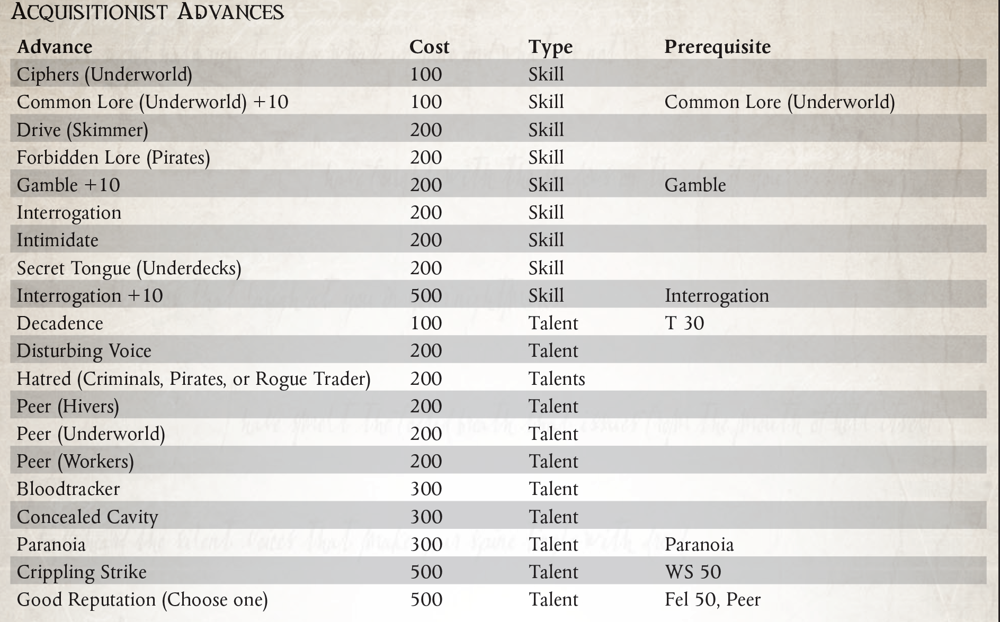
“你的肉体是功利的，功能很粗糙。但是像我这样由塑料、金属丝和钢制成的身体，是效率和优雅的奇迹。它让我变得比人类更重要。我是活生生的艺术作品！”
- 塞菲亚・特雷尔夫人，Axiom Imperial 的上尉
增强植入物在整个帝国中无处不在。从帝国卫队退伍军人的假肢，到古代学者的延长生命的血液执行器，再到机械神教的多关节机械枝，很难找到一个文明世界的居民不运动某种形式的运动。仿生植入物。在帝国社会的上层阶级中，金钱可以自由地为地位和时尚服务，贵族的后裔像孔雀一样昂首阔步，展示着盘绕的金属丝和带肋的导气管。但对一些人来说，仿生改造不仅仅是地位、年龄或对 Omnissiah 的忠诚的标志。对一些人来说，这是一种痴迷。对于这少数被称为增强论者的人来说，没有比身体和审美完美更伟大的目标了。增强学家认为，正是通过重复的仿生手术，才能实现这样的目标。
成为增强师的原因与增强师本身一样多。一位年迈的仆人，在狂热的奉献精神的驱使下，一个一个地更换他衰竭的器官，以免他死后留下一些未完成的任务。然而，一个拥有非凡技能的战士对人体的极限感到沮丧，为了成为死亡的化身，他反复进行肌肉移植和植入更致命的武器。华丽的商人王子是青春和美丽的奴隶，他一次又一次地将自己置于外科医生的刀下，直到他获得了雕像般的魅力和对即使是最奇异的麻醉品的非人容忍。不久之后，这些新兴的增强论者就过了不归路，以各种方式推理，他们作为机械完美的生物比粗野丑陋的肉体更好。当他们追求他们的物理理想时，许多增强学家自豪地宣布他们对肉体的蔑视，欣喜若狂地展示每一个新的植入物，每一个移植物都让他们比 ruck 和 run 或人性更进一步。其他人则将他们日益人工化的身体隐藏在会心的微笑和量身定制的长袍后面，满足于对自己身体优势的了解。然而，增强师的痴迷很少会在物质领域结束。他们认为，头脑是什么，但又是一个需要改进或替代的器官？
Cult Mechanicus 以与评估所有事物相同的冷酷逻辑看待增广师。大多数技术神父都称赞这位新兴的增强术士认识到肉体的局限性，并朝着机器神的“真正肉体”迈出了一步。不幸的是，由于越来越自私的原因，增强师被植入了越来越复杂的设备，机械修会开始将他视为一个恋物癖的涉猎者，一个滥用他的身体和注入它的神圣技术的人。保持对机械教派的尊重需要一位举止不凡和献身精神的增强师。就他们而言，增强论者倾向于将技术牧师视为被丑陋的控制论压倒的顽固的教条主义者。
尽管有不同的意见，但个人增强师和机器神的仆从之间已经建立了许多联盟。众所周知，增强师 Rogue Traders 会护送探索特遣队深入荒野空间，希望成为第一个受益于任何可能重新发现的仿生技术的人。在寻找最稀有和最有效的植入物的过程中，增强师经常接触到异端派系和被禁技术的制造者。报告此类团体的增强师很快赢得了机械教的尊重和感激，经常成为机械教派和宗教裁判所的常规线人。
随着增强主义者的发展，他们发现自己越来越熟悉机器的运作方式，而在有血有肉的生物中变得越来越不自在。他们大部分时间都在私下度过，调整他们的植入物并抛光暴露的金属，只是为了寻找新的控制论技术并参与最能让他们展示其不真实形式的社交活动。一些增强学家开始鄙视那些没有仿生学的人，用仆人和增强的学者代替仆人和船员。对于真正的增强论者来说，这种孤立只是为身体的完美和钢铁的不朽付出的很小的代价。
当探索者第一次意识到他的仿生修改的真正潜力时，增强主义者的道路就开始了。这个时刻可能会在探索者第一次使用控制论手臂完成一项超越任何凡人野兽极限的力量壮举时到来。这可能是他第一次被植入的思考引擎中涌现的大量数据淹没。或者，当他因螺旋钻植入物所赋予的增强感觉而欣喜若狂时，它可能会到来。无论如何，Explorer 很快就被迷住了，他的目标是放弃肉体的限制，拥抱机器的潜力。
所需职业：除探索者、传教士、兽人和克鲁特之外的任何职业。
替代等级：2 或更高 (7,000 xp)
其他要求：当采集此替代等级时，探险家必须至少有1个仿生置换肢和1个植入系统。此外，他可能没有质量差的控制论设备，并且至少一个植入物必须是最好的工艺。
身体上的完美（天赋）
先决条件：增强师替代职业 类似于探索者天赋 肉体虚弱（参见 ROGUE TRADER 核心规则手册第 107 页），增强师的身体已被修改到几乎完全机械化的程度。该天赋赋予探险者一级机器特性。该天赋最多只能使用 3 次，每次额外获得 1 级机械特性。此外，探索者的伤口可以用技术使用技能代替 Medicae 来治愈。然而，由于附加功能的深奥性质，除了任何其他修改器之外，任何技术使用测试都会受到 �C20 的惩罚。
“放下你的虚空护盾，让你的枪安静下来，打开你的金库，并为我既是一个绅士又是一个强盗而感到高兴。”
――Festio Borealis，海盗猎鹰之握号的船长
在遥远的科罗努斯广域，帝国权威薄弱或不存在，帝国法律无法左右，合法商人和野蛮海盗、开拓者和贪婪的建筑师的活动之间通常几乎没有区别。口袋帝国、探险家和不义之财的走私者。值得庆幸的是，在同龄人和法律眼中，Calixian Privateer 知道他在所有方面的立场。被称为“品牌字母”的特殊条款与卡利西斯星区的权力街区紧密相连，这些条款深深地埋藏在他们的贸易保证书的严谨语言中，这些精选的流氓商人被授权掠夺其赞助人在广阔。
Calixian Privateers 不是他们的赞助人的咆哮的小狗，并将任何这样的断言视为严重的侮辱和决斗的召唤。相反，私掠者保护他们的恩人在广域网的利益，以换取安全的停靠港、来自高层朋友的政治资本，以及对他们更可疑的活动的一定程度的法律豁免。正式而言，Calixian Privateer 的任务是保护和防御。 Expanse 的贸易路线、前哨和殖民地都容易受到 Freebooterz、海盗船队和无良商人的掠夺。然而，大多数私掠者不愿意坐下来等待这些威胁来袭。相反，他们深入广域，积极寻找潜在的敌人，并在他们发现的任何地方摧毁他们。在这些尝试中声称的任何打捞和宝藏都被带回私掠者的赞助人，登记为战利品，并以巨额利润卸下。大多数私掠者认为他们的赞助人的对手的车队和前哨是值得派遣的威胁这一事实在上流社会中没有被提及，但所有人都清楚的是，卡利西斯部门州长马里乌斯・哈克斯禁止的血腥贸易战只是向外转移到广袤。事实上，哈克斯州长几乎没有限制颁发“侯爵信”，而且众所周知是亲自颁发，这表明他打算将此类冲突排除在他的部门之外，而是在他的影响范围内。
由于卡利西亚私掠者公开从事的活动充其量是道德上不健全的，最坏的情况是完全非法的，他们必须经常与社会的渣滓打交道，从走私者、犯罪集团、堕落的贵族和奴隶主，到因这些行为而变得一贫如洗的全体民众其他私掠者。通过与这些令人讨厌的类型保持密切联系，私掠者能够建立庞大的权力基础和支持网络，超越其赞助人的影响。当时代变得艰难，私掠者和他的赞助人之间出现冲突时，这些阴暗的盟友和不情愿的同伙会寻求帮助。培养这种联盟的私掠者往往发现自己是海盗王国和犯罪帝国的统治者。一位明智的赞助人密切关注他们的私掠者，以免他变得太成功并开始质疑他的关系的必要性。
有多少不同类型的卡利西亚私掠船，就多少有多少贸易权证。每个无情的强盗都有一个绅士小偷，每个袭击掠夺者都有一个捍卫者和人民的捍卫者。每一个穷困潦倒的盗贼商人在寻求盟友时被迫为奴，都会有一位威风凛凛的海盗王，他的赞助人被虚拟囚禁在宫殿的镀金门内。所有卡利西亚私掠者的共同点是与他们的赞助人的密切联系和良好的声誉，无论好坏。
成为卡利西亚私掠者所需的只是赞助人和经授权书修改的贸易令。可行的赞助人包括公司、帝国贵族、商人房屋、航海家、行星和子部门总督、流氓商人王朝和富有的公会。潜在赞助人的名单很长，这让有进取心的 Rogue Traders 可以选择盟友。获得品牌字母更成问题。虽然一些潜在的赞助人大声宣称他们有能力和渴望向任何愿意承诺服务的流氓商人颁发品牌信函，但大多数情况下，赞助人和朝代必须互相请求，并请求大地修会，以获得特权。正是由于这些原因，许多热心的 Rogue Traders 仔细研究了他们的认股权证的法律细节，希望找到一个符号来表明从未被撤销并且他们可以通过与生俱来的权利要求的 Marque 字母。许多帝国富裕的公民被粗暴地唤醒，却发现一艘流氓商人的船遮蔽了他们庄园上空的天空，她的船长要求同样的款待，曾经对一位已故的祖先提供同样的款待。
所需职业：流氓交易员
备用等级：2 或更高 (7,000 xp)。
其他要求：盗贼商人在成为卡利西亚私掠者之前必须拥有著名的权证天赋。

“提高德鲁西亚的标准！大声唱出勇士的祈祷！熟悉阿比尼卡的预言！接受圣者的讨伐，在苍茫中做神皇的工作！少做就是被诅咒。”
――多明格斯・夸尔，韦斯卡圣殿的上尉
在整个卡利西斯区，除了神皇本人之外，没有任何人物比圣德鲁苏斯更受尊敬。圣德鲁苏斯是一位无与伦比的战士，他带领安茹远征军取得胜利，将帝皇之光带入花萼广袤，将其转变为当今人们所熟知的花萼星区。圣人在他的一生中吸引了许多追随者，一个相当大的教团继续崇拜德鲁苏斯和他的事迹。在信徒中，有些人相信圣徒的使命于 384.M39 年结束，当时安茹十字军正式结束。还有一些人声称十字军东征永远不会结束，因为只要有世界要征服，圣德鲁苏斯的作品就没有完成。正是从这种教义分裂中诞生了第一批德鲁西亚异见者。当 Koronus Passage 开通时，Drusian 编年史预言了先见 Abenicus 的事件，异见者产生了一个新派系。德鲁西亚信徒，正如他们后来所知道的那样，并没有仔细研究发霉的圣人传说书籍，也没有参与神智学辩论。取而代之的是，他们武装自己，深入广袤无垠，渴望拥有新的世界和以圣德鲁苏斯的名义驯服荒野空间。
德鲁西亚信徒被他们的守护神狂热的忠诚所驱使，并且相信每个公民都有神圣的责任将帝国的边界向外推，勇敢地应对恶劣的环境、土著异形种族和未开化的异教徒。对于德鲁士人来说，圣徒的十字军东征没有喘息的机会。每个世界，从若隐若现的气态巨行星到没有空气的冰冷卫星，都必须被神皇之光所触动，并以德鲁西亚的标准来宣称。随着克罗诺斯通道的开放，不同的追随者聚集在流浪港，组成摇摇欲坠的军队，渴望进军广域，证明他们的忠诚和事业的正义性。
追随者经常被问到圣德鲁苏斯是否打算继续十字军东征，他为什么要结束它？务实的追随者通常会回答说，他们的圣徒是在泰拉最高领主的命令下被迫过早结束十字军的，这使得停止十字军成为政治上的必要条件。其他人则认为，圣德鲁苏斯故意让世界未被征服，以便后代可以在战争的熔炉中接受考验。第三种解释声称，宣布安茹十字军结束是暂时的，德鲁苏斯打算在巩固他在花萼广域的胜利后继续他的征服，而圣徒的死阻止了他光荣地重返战场。
德鲁西亚信徒的道路具有广泛的吸引力，吸引了从最低死亡世界的渣滓到最高尖顶雄心勃勃的贵族的奉献者。该信仰在盗贼商人及其船员中也很流行，无论是那些将利润和征服视为上帝赋予的权利的人，还是那些寻求一支十字军大军来支持自己的雇佣军的人。遗憾的是，对于每一个声望很高的信徒，都有一个江湖骗子急于利用信徒谋取私利。就他们而言，信徒们几乎不在乎，只要他们踏足外星世界，像德鲁苏斯在他那个时代所做的那样，用爆矢枪和链锯剑清洗它们。
对于有信仰的人来说，成为德鲁西亚信徒是一件简单的事情。一个人只需要拿起圣德鲁苏斯的旗帜，并承诺他们的生命服务于无休止的十字军东征。但要真正称自己配得上德鲁士的理想，这些话必须有行动的支持。信徒必须非常愿意――他还必须能够执行征服圣事。德鲁西亚信徒不会坐在指挥中心，从远处指挥他的同胞。真正的追随者自豪地加入战斗，陶醉于身体对抗的行为中，并且毫无疑问地知道，如果他死了，他会在荣耀中死去，最终值得德鲁苏斯的祝福。
所需职业：除 Astropath Transcendent、Explorator、Ork 和 Kroot 之外的任何职业。
替代等级：1 或更高 (5,000 xp)
其他要求：当该职业时，角色的腐败点数不得超过 10。注意：虽然此段位可以选择取代职业的第一段位，但它不会重新列出任何起始技能和天赋。此处列出的所有技能和才能是职业生涯可能包含的起始技能和才能的补充。
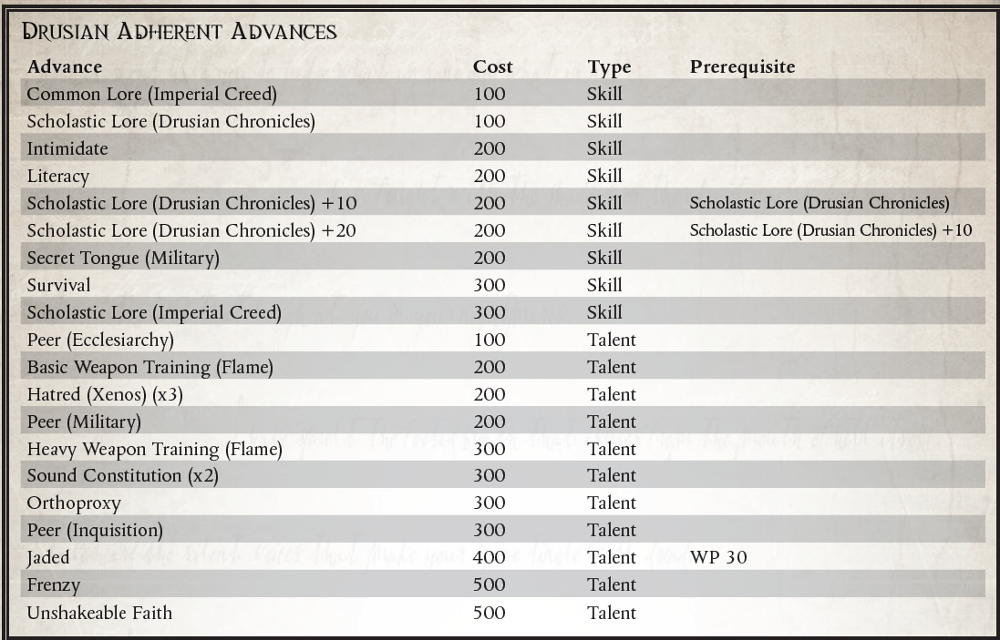
学术传说（德鲁西亚编年史）
信徒们应该研究圣德鲁苏斯的生活和时代，以便他们更好地模仿他自己的生活。 成功的学术知识（德鲁西亚编年史）测试允许探索者回忆有关圣德鲁苏斯的具体信息、他在安茹十字军中的角色、神奇的事迹、他的宣福过程以及德鲁士运动所支持的各种杜撰故事。 这项技能还赋予了无数教会祈祷和仪式的知识，这些祈祷和仪式召唤甚至简单地提到了圣人。
“你好，新兵。欢迎来到第三翼。首先，这不是海军或任何你来自的苔藓小便。你现在和幻影队在一起，这是这个地狱般的太空中最优秀的战斗飞行员，而我是他们中最优秀的战斗飞行员。所以，当我下达命令的时候，你最好把它当成是皇帝亲口说的！”
- 飞行元帅 Shioban O'Neill，呼号“毒蛇”，向第 3 狂暴拦截机联队的新飞行员致辞
许多虚空大师从飞行员开始，从小型大气飞行器到系统船，再到长达数公里的强大星际飞船，比如他们现在所服务的那些，在他们的家乡服务队伍中不断上升。然而，对于一些人来说，从优雅的战士变成笨重的大块头并没有什么吸引力。相反，他们继续驾驶小型飞行器――尤其是致命的帝国战斗机――将他们的技能磨练到人类耐力的边缘。对他们来说，没有什么比在空中或虚空中进行的缠斗更纯洁了，一对一直到一个死去另一个胜利。多年这样的战斗孕育了无与伦比的虚张声势。他们是一个不同的品种，一个与众不同的精英军团。领导这些飞行员的飞行元帅更是如此，因为他们不仅要具备飞行技能来谦逊他们的冲锋，还要具备领导技能，让一群敢于冒险的人成为一支有凝聚力的战斗力量。无论是在驾驶舱、简报室还是小酒馆，他们都必须比最好的更好，以确保他们的手下持续的忠诚和尊重。不断追求卓越的持续动力使 Flight Marshal 与众不同。
许多飞行元帅都是从当地的 PDF 或帝国海军开始的。在帝国的军队中，海军负责任何飞行机器，即使是那些仅限于大气层的飞行器。这些飞行员在大气攻击战斗机中磨练他们的技能，例如著名的雷电或闪电。在这些强大的位面和一群其他才华横溢的飞行者中，真正的战士开始出现，他们不仅能飞，而且能在发出命令和保护同伴的同时思考对手。他们学会了只信任他们的同伴，并通过他们在空中获得的呼号了解他们。任何不属于他们的战士群体的人都会被容忍――或者更经常地被忽视。确实，许多飞行员对空中对手的尊重比对自己这边的地面部队更为尊重。
其中最优秀的可能会驾驶空战机，在黑暗的太空中与巨大的狂暴拦截机和星鹰轰炸机决斗。这种飞行器非常庞大，需要一小部分机组人员来增强飞行员的能力。随着时间的推移，飞行员与他的机组人员建立了联系，就像他与其他飞行员一样。他们一起飞翔，一起战斗，最终――他们将一起死去。
飞行器也与他的飞行器形成了紧密的联系，逐渐感觉他的星际战斗机是他自己的延伸。他可以通过驾驶舱内的振动来衡量他的发动机的性能，即使他可以通过他的转向动作的敏锐度来判断他的海湾中还剩下多少吨军械。他和他的飞机紧密相连，每位飞行员都用他的呼号、中队徽章和其他个性化的艺术品精心装饰他的飞行器。当然，每一次杀戮也被显着地展示出来，描绘了飞行器的类型和飞行它们的敌人。那些与雇佣兵旅或盗贼商船队作战的人可能会展示他们的个人纹章或他们的领主指挥官的标记，尽管情况并非总是如此。虚空鲨中队作为永恒堡垒战斗联队的一部分飞行，因为他们逆转这种做法而在整个冬鳞国度中广为人知。他们死气沉沉的金属外壳，没有油漆和着色，反映了每个飞行员在冷静地击落遇到的每一个敌人时所表现出的冷酷无误的技能。
但是，飞行元帅不仅必须战斗，而且还必须指挥一场完全不同的斗争。通常，他指挥下的飞行员不断寻求挑战他。他们的领导者可能不是最优秀的技术飞行员，但必须更聪明、更敏锐，利用卓越的经验和知识证明他仍然可以超越任何人。他还必须像任何传教士一样鼓舞人心，用关于死亡和荣耀的激烈演讲来激励他的飞行员。知道什么可以保持团队精神并使他的飞行员成为虚空中最致命的群体，这是飞行元帅为了有效领导而必须学习的另一项艺术。飞行员知道帝皇守卫并引导着那些飞过虚空浩瀚空间的人，但他们的飞行元帅肯定会在每一步都与他合作。
成为一名飞行元帅通常不是主要飞行员会积极寻找的角色――通常这个角色被认为是自然发展的一部分。多年的飞行磨练了他们的战斗技能，而多年指导低级飞行员磨练了他们的指挥技能。发号施令成为第二天性，他们的能力就是这样，很少有人会质疑他们的指令。领导这样一个高度个人主义和意志坚强的团体是大多数帝国官员无法容忍的，特别是当飞行团体是雇佣兵或被绑定到流氓商人的阵营时。飞行元帅没有将不情愿的羊群赶到战斗中，而是小心翼翼地引导他的狼群，缓和它们的嗜血欲望并适当地引导它们的愤怒。
所需职业：虚空大师
替代等级：等级 4 或更高 (13,000 xp)
其他要求：飞行员（飞行器和航天器）+10，指挥
绝伦逸群（人才）
先决条件：飞行员（飞行器和航天器）+20，飞行员（个人）+10
Flight Marshall 简直就是天空中最优秀的飞行员，在虚空中，甚至在离地面 5 米的地方都敢于挑战。他的声誉是建立在高超的技能和精心培养的形象之上的；业内很少有人不敬畏他的传奇。海盗、叛徒、血红色的兽人战斗，甚至是优雅而致命的灵族海盗；到目前为止，没有人能打败他。
每当进行反对飞行员测试时，如果飞行元帅和他的对手都取得相同数量的成功，则飞行元帅被视为赢得测试（实质上，他赢得了平局）。飞行元帅在与帝国海军的其他成员进行任何对抗的互动技能测试时也会赢得联系。

“主题物种“兽人”，身高为218.6cm，比观察到的平均值高25.56cm。质量为 163.15 公斤，主要由致密的骨骼结构和肌肉组织组成，比观察到的平均值高 31.4%。与人类标准相比，表皮层较厚且缺乏神经末梢。疼痛反应……比预期的要少，表现出对不适的极端耐受性。之前的测试已经唤醒了对象，它现在试图释放自己。肌肉松弛剂用于减少破坏性运动，人体标准剂量的 460%――对化学影响的耐受性相当大。准备打开胸腔……”
――Genetor Aurelius Thoze，Adeptus Mechanicus Xenobiologist。
遗传学家是研究遗传和生物学问题的学者。有时被称为 Magos Biologis，Genetors 与机械修会的 Logis、Artisan 和 Magos 等级并列，作为其统治祭司，拥有远远超出初级工程师和 Lexmechanics 的知识和资源。 Genetor 的研究领域使他与大多数技术牧师不同，他们对有机生命的职业痴迷常常使他们对他们更倾向于机械的弟兄们感到陌生。
在大多数情况下，Genetors 与其他 Tech-Priests 几乎没有什么不同――他们拥有相同的植入方式，将信息和理解视为神性的体现，并以几乎相同的方式参与对知识的追求。不同之处在于，他们不会很快将血肉判断为不如钢铁和血浆，而是将生物视为极其复杂和适应性强的机器。有些人满足于遥远地进行这种观察，而另一些人则接受它，寻求改善他们的形式，而不是用钢铁，而是用更好的肉和更好的血。对一个不知情的观察者来说，一个 Genetor 在裹着长袍时可能看起来与任何其他 Tech-Priest 没什么不同。然而，在大多数技术牧师的质量来自钢筋和植入装甲板的情况下，Genetor 可能已经用大桶肌肉、坚韧的皮肤和有机加固的骨头来增强自己。
他们对有机物的兴趣不仅限于他们自己的形式，甚至是人类的形式。外星遗传学研究，以了解它们如何发挥作用以便更好地杀死它们，是基因学的一个常见研究领域，这个子派别统称为外星生物学家。这种知识是危险的，许多 Genetor 被谴责为异端，因为他们声称特定异形的生物学优于人类。无论如何，Genetor，尤其是异种生物学家的存在，被探索舰队和流氓商人视为一种资产，因为他们对人类和非人类形式的了解使他们能够辨别新遇到的异种或土著物种的性质，或者对在遥远世界发现的一种新的亚人类进行分类。
在卡利西斯星区，Genetors 有着特别辉煌的历史――大量外星生物学家加入了安茹十字军，研究该地区的外星人，因为他们的领地被帝国的力量摧毁。从那时起，他们一直是车床内外机械教政治中一个值得注意但经常被忽视的因素，他们聚集了大量加入科罗努斯广域的探险队，试图成为第一个遇到新生命并进行剖析的人和分析。
卡利西斯星区的基因中存在三种不同的哲学。第一个也是最古老的是Primus Humanum，它拥护人类形态的纯洁性作为知识的容器，将帝皇的形态视为理想的人类形态和完美的知识载体形态。车床基因中的第二位也是目前最占主导地位的统称为 Apexists，他们相信逆境会在有机体中孕育力量，完美的有机体是战胜所有竞争对手和挑战的有机体；哲学本身是对古代前帝国学者著作的改编。第三种哲学目前在更广泛旅行的基因中受到青睐，并在更传统的基因中引起关注，它受到沃格尔同伴的拥护，其领袖海德里希沃格尔从长达一个世纪的远征科罗诺斯广域返回并开始宣扬一个强制基因和生物增强的信条，以加强人类应对未来的麻烦。一些人认为，沃格尔的意识形态近乎异端，其暗示人类在当前状态下不知何故不足，被许多人视为本身就是一种亵渎。
Genetor 和更传统的 Tech-Priest 之间的区别在于培训、能力和专注度之一。就像在机械修会中经常出现的情况一样，理解产生力量，而力量又产生知识，只有那些拥有理解知识的意志和智慧的人才能在他们的同类中适当地获得任何形式的地位。
成为 Genetor 需要特殊且不寻常的性格；倾向于将有机生命本身视为一种机器，而不是许多技术牧师所认为的脆弱的肉质外壳。然而，除此之外，探索者主要需要奉献精神和研究才能成为基因，利用他对有机科学的知识来帮助探索帝国以外的领域。
所需职业：探险家
替代等级：等级 3 或更高 (10,000 xp)
其他要求：探索者必须具有35或更高的韧性，40的智力
或更高，并拥有Autosanguine和Prosanguine天赋。
肉体机器（天赋）
天赋组：蛮力、利爪/尖牙、无痛感、多臂、夜行者、再生、声纳感知、坚固、坚韧的皮、剧毒、有翼的肉体对你来说不是弱点，而是一种尚未开发的潜力 . 锁定在你的基因和组织中的是更强大力量的秘密，尽管你不回避钢铁的纯度和现有的植入物，但你只将它们视为你可以改善自己的机制的一部分。 你获得以下突变之一：蛮力、利爪/尖牙、无痛感、夜行者、硬皮或剧毒，或以下特性之一：再生、声纳感知或坚固。 您获得了该特征或突变的影响（尽管，当您将生物系统移植到您的身体中或操纵您自己的遗传结构时，您是否实际上是一个突变体是有争议的）。

“杀戮狂潮，比屠戮强，比弗伦宗更能炒作我。我会为了品尝它而杀人……甚至为了品尝它而杀了你。”
- Ryant Gos，腺体战士佣兵
作为一名大武装分子，意味着成为人类必须提供的最优秀的战士之一。身经百战，杀出重围，杀过无数敌手，这样的人，不愧是任何对手的对手。然而，在浩瀚无垠中战斗的时间越长，人们就越意识到仅仅作为人类并不总是足够好。对一些人来说，这意味着改进的军事学科、机械增强或高级武器。不过，还有另一条道路，在雇佣兵和斗士以及所有其他以爆矢枪和链锯剑为生的人的地下圈子里传出的臭名昭著的谣言――屈服于机械神教的血肉操纵，成为一名腺体战士。
将人体改进为战斗机器的探索已经持续了数千年――神圣皇帝的宠儿阿斯塔特修会就是这一探索的活生生的例子。机械修会倾向于更直接的方法，简单地用纯净的塑钢和电路代替麻烦的血肉，以创建像护卫队科技卫队这样的部队。然而，这些过程的秘密受到严密的保护，而且对于帝国战争机器的需要来说往往过于耗时，因此已经探索了其他技术。许多世纪以来，机械神教的基因们一直在努力通过一系列手术和植入来改善肉体本身，这些手术和植入可以在相对较短的时间内完成。最后，在丹蒂斯 III 的锻造世界中，他们取得了成功。一场突如其来的泰伦入侵让系统措手不及，只有洛斯托克附近的帝国卫队能够提供任何防御。不幸的是，这颗污染严重的星球已经被邪恶的泰伦生物所覆盖，使得在工厂外的战斗几乎不可能发生。几家最坚韧的警卫连队自愿进行实验性手术，以使他们能够在致命的环境中有效地战斗。植入了一系列新的缸培养器官和分泌药物的腺体，那些经历过这个过程的人现在可以在表面上不受保护地战斗，并以他们自己的不人道的侵略性和凶猛来对抗可怕的生物。数月后，蜂群被击退，战斗中的少数幸存者被找回，以供进一步研究和检查。其中有几个很快被审判官和其他希望有这样一个人在他们身边（或以他们的名义）战斗的人带走。
创造腺体战士的过程更像是艺术而不是科学，就像帝国的许多作品一样。尽管如此，更多的增强型人类出现在整个帝国的战争中，并且更加隐蔽地充当刺客。他们的功绩在与他们一起行动的帝国卫队中成为传奇。在卡利西斯，腺体战士的分遣队在特兰奇的蜂巢战争中得到了有效利用，他们的凶猛与他们的突变敌人相匹配。虽然该区域的大多数帝国卫队军队通常不包含腺体战士部队，但一些精锐部队确实以这些专门的小队为特色。甚至有传言说，这些血肉强化术的整个战斗团都在卡利西斯更加绝望和地狱般的战区作战。
虽然产生这些曾经的男人的手术有点短，但假设士兵在这个过程中幸存下来，接受者需要几个月的时间来学习如何正确利用他们的新生物添加物。即使是已经习惯了借助战斗药物进行战斗的士兵也必须重新学习如何使用自己的身体才能发挥作用
他们新提高的运动功能和更持久的生理机能。身体上的变化也会带来精神上的变化，增加一个人对杀戮和战斗的关注，直到没有其他东西驱使他们，而是对下一场战斗感到不耐烦。
鉴于他们经常战斗的噩梦般的条件，腺体战士决定他们宁愿选择谁和什么时候战斗，而不是依赖上级军官的心血来潮，这种情况并不少见。许多人成为雇佣军，在该部门及其他地方受到珍视。在广袤无垠中，也有授权的和叛徒的 Genetors 愿意对现有的战士进行操作，以将他们从人类转变为超越人类。在这里，他们的生活充满了鲜血，因为总有一场冲突需要像他们这样优秀的战士。成为战士会所的成员并不少见，因为他们通常只有在其他增强者的陪伴下才能找到真正的友谊。这些神秘的邪教经常引起宗教裁判所的注意，即使在帝国统治之外的无法无天的范围内也是如此。红夜兄弟会只是被异端审判庭领导的大量帝国军队摧毁的会所之一，但还有许多其他地方聚集着更野蛮的腺体战士，除了厚重的毛皮会所窗帘之外，他们还可以讨论什么，无人能说。只要战士继续履行职责并保持忠诚，大多数盗贼商人都愿意对此类活动视而不见，但警惕的商人将始终关注其船员的每一位成员。
虽然有些职业是专业培训或多年深入研究的结果，但转变为腺战士主要是由于一系列手术。这些将毒素过滤器引入他们的肺部和血液通道以及人工缸培养器官和产生药物的腺体植入物，所有这些都旨在将已经强大的战斗机大大提高到通常无法达到的水平。只有那些体质和战斗能力足够强的人才能被选中参加这个过程，只有那些尽管经历了痛苦而有足够强烈的生存意愿的人才能在这个过程中幸存下来。不过，一旦他们适应了新增强的身体，他们就会在战斗中化身死亡。
要求的职业：Arch-Militant
替代等级：等级 4 或更高 (13,000 xp)
其他要求：角色必须具有40或更高的韧性，并且必须具有近战武器训练（通用），真正的勇气和顽强的天赋。
特性：所有腺体战士在获得替代等级后都会获得洛斯托克增强特性。
LOSTOK 增强（特征）
Lostok 过程为腺体战士的身体引入了一系列新的器官和腺体，使其能够在更有毒的环境中生存，并且比以前更加激烈地战斗。这些复制了呼吸器的效果并使它们免疫大多数毒素（包括具有毒性的武器造成的额外伤害）。他们的新腺体还充当含有 Frenzon、Slaught、Stimm 和 Spur 的注射器。用户可以激活他们的植入腺体以产生任何这些药物作为自由动作，需要对每个剂量进行常规 (+20) 意志力测试。故障意味着腺体发生故障，需要 1d5 天才能恢复。其他新添加的器官旨在过滤掉任何剂量的化学副产品，因此用户无需在之后进行任何不良影响测试。增强的生理学也将避免过度使用药物的任何影响（参见 Rogue Trader 的第 142 页）。
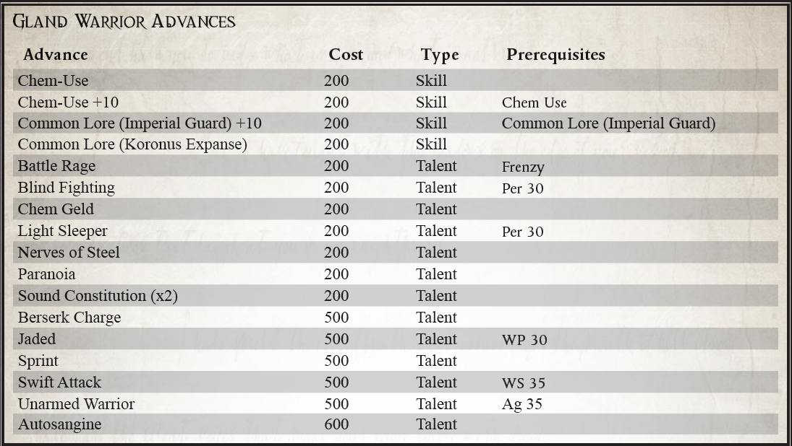
“我曾在一百颗奇异星光下走过一百个异域。我已经杀死了那些你最肮脏的噩梦和最黑暗的想象无法产生的怪物。我已经发了一笔财富，可以从你的脚下购买这个世界十几次。我是一个有远见的人，一个人类的典范，一个世界的杀手和命运的伪造者。我是一个传奇，而你只是一个男人。那么，你要拒绝谁呢？”
――Sarvus Trask，流氓商人。
对于少数雄心勃勃的人来说，仅仅富有是不够的。强大、受人尊敬和声名远播是不够的；这些人必须是传奇人物，他们的名字和声望甚至比他们自己还要高，比除了帝国本身之外的任何人类技艺都更经久不衰。他们的名字必须同等程度地激发敬畏、恐惧和崇敬，光是提到他们就会在人们心中唤起对神的思想，而这些人的力量只有他们的野心才能与之匹敌。
这种对荣耀的渴望在许多人身上会被视为疯狂，愚蠢的梦想就像觐见皇帝本人一样高不可攀。但对于那些有能力和意愿去实现它（或死去！）的人来说，这是一生努力和艰苦的结晶。很少有人想成为如此臭名昭著的人物，他们能幸存下来，看到他们的传奇成真，他们的生命消逝，他们的名声充其量只能算作琐事，最坏的情况是耻辱。值得冒险的感觉是值得的，因为没有人不克服这样的挑战就可以成为传奇，没有人不能忍受这样的考验，无论如何也不配获得如此崇高的地位。
当然，对于那些获得如此传奇地位的人来说，挑战仍然存在――保持它，甚至进一步扩大它。一些航行到新的领域和新的领域，以见证新的视野和新的考验，并创造他们神话的新篇章。其他人满足于为他们的胜利建立纪念碑，或者远航去寻找那些即使其他有权力和野心的人都回避的东西，如果他们还没有这样做的话。其他人仍然再也没有被看到或听到过，他们的传说被他们失踪的神秘所证实，因为他们可能回来的遥远可能性而持久。
少数传奇探险家有仁慈之心，实属罕见，因为名声远比名声容易得来。 Erasmus Haarlock 是传奇人物 Solomon Haarlock 的后裔，他的名字是 Calixis 区早期历史的代名词，在整个地区和其他地方都被称为一个堕落的疯子，他屠杀了每一个对 Haarlock Warrant 的竞争对手，以及与他们有远距离联系的每个人（当然，事情的真相远比传说所暗示的要复杂得多），而莫迪凯・弗雷恩陷入疯狂和随后的种族灭绝暴行仍然比三个世纪的正义更广为人知。在他们之前（尽管奇怪的是，伴随着他的疯狂的论文――Heteroclasm: To Destroy the Deviant――仍然是卡利西斯区某些 Schola Progenium 修道院的标准文本）。
渴望达到如此高声望的不仅仅是 Rogue Traders。名声是不分青红皂白的，成名的欲望也是如此。最伟大的探险家和考古技术专家的声望不亚于最著名的盗贼商人，而且在许多情况下可以取得更大的遗产――阿克汉大贤者在他死后的十多年里仍然在整个帝国使用，其中包括 STC他发现的车辆仍在无数世界上服役。军事历史的学生研究马卡里乌斯和亚里克的演讲和战术，后者继续在他自己的传奇中创造新的篇章。对于航海家来说，名声是他们政治武器库中的另一个工具，因为一位传奇的后裔可以将他的家族提升到更高的财富和权力高度。
无论通往荣耀的道路是什么，无论其背后的原因是什么，无论追求它的人犯下或制止的暴行如何，有一件事是真实的：只要名利在文明的范围之外等待，就会有男人和女人他们的野心几乎是无与伦比的，对他们来说一生的伟大是远远不够的。唯有不朽，无论是比喻的还是字面的，都是唯一值得追求的奖品。
渴望成为传奇是一回事。成功完全是另一回事。尝试最宏大的努力并面对最大的挑战――并活着讲述这个故事――只是其中的一部分；你必须拥有证明它的宝藏和奖杯，证明你持久成功的资源，以及保护它的智慧。那些追求无尽荣耀的人，一定要像野心勃勃一样警惕，因为背叛潜伏在每一个角落，而那些寻求成名的人往往会试图以牺牲你的利益为代价。
所需职业：任何
替代等级：等级 6 或更高 (21,000 xp)
其他要求：探索者必须具有至少两个 50 分或更高的特性，至少两个 +20 加值的技能，以及三个或更多 +10 加值的技能。此外，探险家所在的队伍在进入此高级职业时必须具有 70 或更高的总利润系数。
传奇（天赋）
你的名字在数百甚至数千个世界甚至更远的地方都为人所知。你的名声比生命更重要，无论好坏都比你早几光年。当你靠近时，许多人会在你面前鞠躬，关于你的功绩的故事让他们有理由敬畏你，但也有很多人会伸手拿起他们的刀，警惕地看着你，或者在提到你的名字时害怕地回避。
Explorer 使用利润因子进行的任何成功的影响力测试都会自动获得额外的两个“奖励”成功度。在社交挑战中，Explorer 进行的任何成功的交互技能测试都会自动获得额外的两个“奖励”成功度。在战斗中，探险者被视为具有恐惧 (1) 特质。
提防背叛（天赋）
先决条件：意识，浅眠者，偏执狂，感知 40
你时刻警惕来自四面八方的攻击，不冒任何机会随时被看不见的敌人击倒。只要你有意识并且你的感官没有受到损害（例如药物或眼罩，GM对此有最终仲裁），你就不会感到惊讶。
“很高兴认识您，先生。请允许我介绍一下自己。我是你的车夫，你的星辰守门人。这些贸易会议很无聊，你不觉得吗？我们有整整一周的时间来讨论广域的贸易路线。你愿意和我一起喝一杯amasec吗？精彩的！为我们的努力干杯。”
――导航员 Gadevilious Obrex，Vor'cle 家族的使者
航海者是少数幸运的出生在特权阶层的人，他们政治上富裕的氏族是阴谋的源泉，就像他们变异的身体一样严峻和曲折。虽然一些航海家授权代理人充当他们与帝国社会之间的中介，但其他人则在内部，从他们数量众多的狡猾的航海家中挑选出能够最大程度地发挥众议院政治影响力的人。虽然航海贵族是帝国的一部分，但每个航海家都拥有很大的自治权，他们的影响力和权力与帝国的伟大修女不相上下。因此，很自然地，许多家族都有外交官和代表来与更大的帝国打交道。这些海军贵族的后裔是伟大家族的面孔，被培养成外交官和权力掮客，确保他们家族的利益得到保护。
在航海家的庄园或帝国精英的宫廷中，Navis Scions 同样是谈话和宫廷礼仪的大师。这些导航员通常是从他们的同伴中挑选出来的，因为他们相对缺乏伪装性突变以及他们的社交技能，他们在许多公共郊游中吸引了大量的注意力。 Scions 注定要成为几乎所有宫廷环境中的焦点，他们陶醉于旁观者的目瞪口呆，利用他们的名气来吸引潜在的盟友并嘲笑已知的敌人。很少在公共场合看到导航员，更罕见的是看到一个被一群钦佩（或只是好奇）的人群包围的人。无论是用超越帝国的旅行故事来取悦观众，还是用诙谐的言论伤害一个布尔人的自尊心，Navis Scions 都非常善于社交。
然而，Scion 承担的责任远不止提供令人眼花缭乱的谈话。他仍然有望成为航行于非物质世界的船只的熟练导航员，并充当他的家族与其盟友之间的重要纽带。预计他将担任代理人和代表，为他的众议院寻找新客户，并确保现有盟友将众议院的最大利益放在心上。一个全血统领航员的可怕存在可以
迅速左右贸易谈判的结果。同样地，当一个海军后裔自信地滑入宫廷时，贵族的敌人必须小心地闭嘴。 Navis Scion 掌握着他的家族的政治和经济权力，是值得畏惧和尊重的。
Navis Scions 广泛的教育和政治经验使他们成为宝贵的伙伴。在履行职责的过程中，许多 Scion 成为 Rogue Traders、海军上将和其他尊重他们的专业知识和血统的高级官员的顾问。许多贵族在政治、贸易甚至个人事务上都向贵族寻求建议。尽管关于导航员的第三只眼可以瞥见未来的传言只是部分正确，但这并不能阻止大多数 Scions 充当通灵顾问，因为他们非常清楚在右耳中喃喃自语的正确预言能够实现自己。
一个人不能简单地选择为他的家族服务作为接穗。子孙必须从小就被培养，在他们的遗产发生突变之前进入宫廷生活。因此，大多数 Scions 高度公开的生活和异国情调的非人美使许多人相信，畸形的航海者的故事只不过是众议院用来恐吓竞争对手的寓言。导航员无法逃脱自己身体的背叛，因此，大多数Scion的公共职业生涯都很短暂。然而，此时促成的联盟和打开的社交大门可以在他的长期存在中为导航员服务，甚至可以通过以后生活中的巧妙操作来完善和增强。尽管如此，许多 Scion 还是如此迷恋宫廷阴谋之舞，以至于他们不忍心在时机成熟时将其抛在脑后。不止几个 Scion 已经采取了广泛的重建手术和侵入性仿生增强来保持几乎人类的特征，这些特征曾经使他们在帝国上流社会中表现出色和庆祝。
一个人在婴儿期成为 Navis Scion，当一个 Navigator House 的长者选择一个新生的孩子，一个没有产前突变的孩子，并为它准备接受高等教育和社会辅导的生活。 Navis Scions 仍在接受训练，以利用他们感知亚空间的自然能力并指导强大的虚空飞船的航向，但也接受过历史、文学和帝国政治现实的辅导。尽管他们在航海艺术方面的技能可能会受到影响，但 Scions 以敏锐的头脑和更敏锐的语言从他们的研究中脱颖而出，准备在所有事情上代表他们的房子。
所需职业：导航员
备用等级：仅 1 (5,000 xp)。
其他要求：叛徒家族的航海者由于过度变异，处于帝国社会边缘的边缘地位，不能选择这个替代职业。
注：此段位虽然取代了领航员职业的段位1，但并未重新列出领航员的起始技能和天赋。此处列出的所有技能和天赋都是在导航员的起始技能和天赋之外的。

“我已经去圣地朝圣了。我已经跪在了金王座的脚下。我被迫注视�k神圣的面容，我被它弄瞎了眼！灵魂绑定永远改变了。你敢说比我还圣洁？”
――Tien Voor，商人 Solis Lux 的高级星语者
星语者的生活是艰难的。幼年时被从他们的家乡带走，被关押在审判庭黑船上的恶臭牢房中，接受 Scholastica Psykana 严格的测试和残酷的训练，然后在几乎没有人幸存下来的惩罚仪式中与神皇灵魂绑定所有人都失明了，他们的一生都在辛勤工作，导致他们中的许多人因精神和精神疲劳而“精疲力竭”，任何星语者在服役时都保持清醒，这真是一个奇迹。但对极少数人来说，往返泰拉的旅程不是为了确保帝国的生存而磨砺的机制，而是以顿悟和精神蜕变为回报的正义审判。对于这样的星语者来说，失去他们的眼睛对于与神皇进行短暂的交流是微不足道的。如果他们心中对人类之主的神性有任何怀疑，那它就会被灵魂束缚的噼啪作响的精神之火烧掉。也许这是最近由神圣十字军建立的卡利西斯星区，但这样的观点在卡利西斯星区――以及扩展的克罗诺斯广域中很常见。尽管这些人在整个银河系中都有很多名字，但神圣宗教裁判所的卡利西亚会议已经开始将这些星语者称为超实体入门者。
不满足于简单地传递神皇仆人的信息，超实体入门者致力于以更直接的角色服务于人类神皇的意志。他们将自己的精神力量视为神皇的祝福，他们相信使用他们的力量来促进他的意志是他们的神圣职责。他们也倾向于宗教焦点。在履行作为信使的名义职责过程中，超实体启动者特别优先考虑 Adeptus Ministorum、宗教裁判所和他们认为承担神圣使命的任何其他机构的公报。由于这个原因，Calixian Conclave 和 Ecclesiarchy 在 Expanse 的行动都发现这样的 Astropaths 非常有用。
与大多数星语者不同，超实体入门者不会试图在礼貌的社会中掩盖他们的眼睛。他们认为自己的失明是荣誉和奉献的标志，是神皇授予的神圣烙印。入会者自豪地展示他们的失明，他们的湿漉漉的眼睛、干瘪的视网膜和空洞的眼窝，是使他们成为现在这样的奇异事件的可怕证明。超实体入门者将他们仅有的闲暇时间花在神智学研究、祈祷和冥想上。众所周知，许多人会在亚空间深处大声播放礼拜仪式，声称这样做可以赶走恶魔和其他混沌生成物，而另一些人则坚持认为，只要信条的摘录在世界之间穿梭，正义的智慧就永远不会丢失.其他入门者在他们的信仰中更加积极，寻找无知和不忠的人，使他们可能悔改并接受神皇的旨意。据说，在这种自封的任务中，星语者重写了异教徒思想的内容，通过声明没有自由意志，只有他的意志来捍卫他们的行为。正是由于这些原因，许多人认为超实体的启蒙者和传教士会成为快速的盟友。不幸的是，两人坚定的信念导致了冲突。传教士认为超实体入会者是边缘异端，而超实体入会者认为传教士是不幸的，他们在试图了解人类之主的真实本质之前无法迅速超越帝国。浩瀚宇宙中有许多人宣称超实体入门者只不过是受到制裁的异端。他们谴责这样的星语者是被错误地认为是宗教经历的精神创伤而发疯的受骗的傻瓜。为什么教会没有直接谴责超实体的信仰，也没有宗教裁判所广泛起诉他们，这证明了他们对这两个组织的有用性。当被问及他们的信仰可能不正确时，超实体很快指出，他们的诋毁者从未踏上神圣泰拉，也没有站在黄金王座的光芒之下。
不可避免地，超实体的启蒙者会与帝国的宗教和世俗权威发生冲突。一些不想与神皇的同僚发生公开冲突的人，转而向内转，在公共场合平息他们的热情，以与修会保持一致。那些拒绝减少虔诚表达的人会引起许多人的愤怒，成为贱民。这些被遗弃的人通常是第一批加入广域行商流氓船员的星语者，他们寻求超越大嘴的自由，并有机会在远离他圣光的世界上展示神皇的活生生的荣耀。大多数盗贼商人都非常愿意接受超实体入门，因为他们的热情和信念往往会转化为大大增强的精神力量。正因为如此，许多超实体入门者鄙视常规武器，更喜欢用净化火焰或他们的“祝福”力量进行战斗。
成为超实体入会者的道路很短，从灵魂绑定的那一刻开始，当神皇闪耀的精神能量穿过年轻的灵能者的脑海时，留下了他力量的一小部分，几乎没有别的。星语者一生中的任何经历都无法与这一刻相提并论。对许多人来说，调整和解释这一事件需要更长的时间，这意味着许多星语者直到在 Koronus Expanse 履行职责后才宣布自己为超实体入门者。正是在那里，当他们开始在神皇领域的范围内履行职责时，许多人得出结论，他们已经在精神上得到了转变和提升。有些人对这个概念很着迷。然而，这通常确实发生在他们职业生涯的早期，因此几乎闻所未闻已建立的星语者成为超实体入门者，尽管在特殊情况下，GM 可能希望作为精英推进的一部分授予此备用等级的访问权限。所需职业：超越星语者
替代等级：仅 1 (5,000 xp)。
其他要求：探险家在采取这种替代职业时可能不超过5个腐败点。从事此替代职业的探险家将遭受 �C3 武器技能和 �C3 弹道技能。
注：此段位虽然取代了星语超凡职业的一阶，但并未重新列出星语超凡的起始技能和天赋。这里列出的所有技能和天赋（包括两个心灵技术天赋）都是在初始技能和天赋之外的。
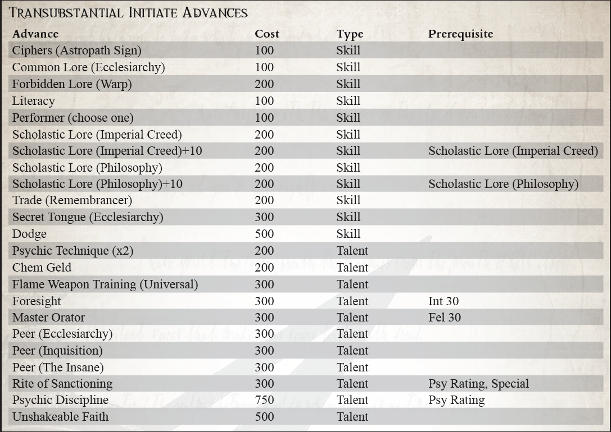
“如火温暖你的身体，知道皇帝的正义会温暖你的灵魂。由于这种大火将动物拒之门外，所以
帝皇之怒将抵挡那些掠夺你的难以言喻的恐惧。当这火光照亮黑夜时，帝皇的光辉将带你走出黑暗，进入人类神圣帝国的怀抱”
――Lindesfarre Schaeln，红色荒原失落部落的火炬手
在广域开展活动的传教士与在卡利西斯文明空间服务于皇帝旨意的人不同，因为他们遇到了为该地区服务的同胞们做梦也想不到的恐怖和奇迹。在这些无法无天的系统中从一个世界到另一个世界旅行并将神圣信条带给那些失去帝皇之光的人是传教士的神圣职责。然而，在浩瀚无垠的一些最崎岖和最危险的世界中，有着早于帝国的原始人类文化。这些异教世界从未听说过神皇或人类帝国，并且很可能会猛烈抵制部长的话。在这些情况下，一个典型的传教士几乎没有机会改变民众，而传教士依赖传教士的才能，这些传教士被非正式地称为火炬手。
火炬手被派往远离帝皇之光的人类文化中，他们可能崇拜黑暗和野蛮的神。在这些由野蛮游牧民族统治、原始武器是发展的高度的世界上，需要身体的力量和愿意花费数年或数十年的时间来努力将居民的灵魂从阴影中拯救出来。很少有人有毅力在这样的环境中生存，更不用说履行他们神圣的职责了；成为火炬手就是高举帝国之火，照亮道路，而神皇的精神在内心燃烧，支撑着传教士的艰辛。虽然所有穿越广域的传教士都需要长时间独立行动，但火炬手可能会发现自己被安置在一个荒凉无情的世界上，多年没有联系，由于严重的亚空间风暴而搁浅，或者可能只是被遗忘了几十年一次。因此，他们是生存专家，并有望忍受自然和人类的掠夺。当他们到达一个新世界时，他们可能只知道路过的探险家的零碎报告，这些报告提到了遇到的无利可图的当地人，其他什么也没有。其他行星可能只提供一个 Ministorum 灯塔，旨在吸引他们的注意力，由古老的 Missionaria Galaxia 探测器留下。因此，火炬手们学会了携带各种基本装备轻装上阵，建造和创造他们需要的任何其他东西――因为他们的技能很棒，而他们的需求很少。在很短的时间内，他们可以建立永久的使命，新信徒可以在那里学会正确地崇拜他们的神皇。
考虑到亚空间旅行的变幻莫测，火炬手们进入他们的新世界时知道他们可能永远无法恢复。许多人在出发时向他们的船友和战友道别，因为他们可能要过几年才能团聚。然而，他们的精神本质就是如此，以至于他们对与文明舒适的长期隔离感到很自在，并在他们幸福的努力中找到了新的能量。他们的存在很简单，对那些希望免于渗透在 Ministorum 等级制度中的微妙而恶毒的政治的人具有吸引力。然而，即使是这些传教士中最虔诚、最敬业的传教士，诱惑也能压倒，就像 Karthom Laui 的情况一样。他深深扎根于破碎的世界，又过了 45 年才被人看到，直到他的家乡金金归来，登陆队遭到伏击，因为他们的飞船被成群的狂热分子蹂躏
当地人现在由他们的全神父卡托姆（Karthom the Beneficent）领导。他的思想被长期的孤立扭曲了，他将《帝国信条》改写为对自己的颂扬，成为了野蛮部落的神。 Laui 在随后的一系列袭击中被推定死亡，但关于他的疯狂愿景的谣言仍然存在，他的追随者有时仍会在其他未开发的星球上遇到。
尽管教会努力压制这种异端传说，但这种恶名仍然存在。最好听听西风之火 Trell Palnus 的传奇故事。他将自己的一生献给了一个被遗弃的世界，花了很长的时间从一个定居点走到另一个定居点，并通过圣言或圣火使他发现的人皈依。这就是他的存在，以至于很少有人需要被后者奉献。在短短三代人的时间里，这颗星球从一块毫无价值的岩石变成了广袤无垠的燃烧之光，一个有利可图的神殿世界，也是许多最虔诚的教廷臣民的家园。只要有这样的例子让灵魂燃烧起来，克洛诺斯肯定可以从弥漫在浩瀚宇宙中的黑暗中拯救出来。
很少有人选择火炬手的道路，因为这是一种连最基本的物质享受都没有的艰苦生活。 这也意味着与部长本身隔离，可能导致晋升和认可的机会减少。 这条路更适合那些寻求精神奖励的人，或者可能是为某些隐藏的失败寻求忏悔。 一位成功的火炬手将在浩瀚宇宙中建立一个感恩的奉献者网络，随时准备帮助他和他的同胞。 这是一颗罕见的死水星球，不会记得将帝皇之火带到他们世界的那个人，他的名字将与他们一起穿越星辰。 无论他们走到哪里，他都会有朋友在等他。
所需职业：传教士
替代等级：等级 2 或更高 (7,000 xp)
其他要求：你必须拥有至少 35 的韧性和至少 35 的意志力，并且至少获得了一项健全的体质天赋。
生存大师（天赋）
先决条件：坚韧 (40)
火炬手能够在最荒凉和荒凉的地区茁壮成长，这使他能够在其他人会倒下的地方继续他的神圣使命。 无论是一望无际的沙漠沙丘、纠缠动物的热带雨林、荒芜的山脉，甚至是可怕的死亡世界，他都能坚持下来。 角色可以重投所有失败的生存、追踪和争吵技能测试，但每次检定只能重投一次。

“你知道你拥有什么吗？这不是简单的古董。这是鬼骨！我不敢想你滥用了哪些其他遗物。也许是用作门挡的 Yu'vath 雕文？一个Egerian geode作为镇纸被压入卑鄙的服务？你无法从帽子架上分辨出光环装置！”
――乔利兹・巴尔蒙特男爵的遗言，《野蛮贵族：克鲁特人中的一个人》的作者
帝国信条指示所有公民不要与外星人说话，不要向外星人学习，不要信任外星人，最重要的是确保外星人的灭绝。尽管有这些禁令，但仍有许多人寻求异形种族的禁忌知识并觊觎外星人制造的文物。在帝国境内总能找到少数学者和怪人，他们自称是异形传说领域的专家。对一些人来说，仅仅拼凑传奇的碎片和对不确定的历史和目的的遗物傻眼是不够的。对一些人来说，外星人并不值得害怕和利用。对于 Xenographer 来说，宇宙中的非人类生物将被寻找、理解和利用。在远离帝国权威中心的地方，Xenographer 茁壮成长，被异形传说的海妖之歌召唤到未知的区域，例如 Koronus Expanse，从生死种族中收集。
Xenographers 幻想自己是学者和探险家，狡猾和勇敢的人，他们有足够的精神毅力来掌握外星人的秘密，而且他们的理智完好无损。在广袤无垠的帝国法律的约束下，异种研究者发现了异形遗迹的索引，挖掘外星人墓葬的内容，并恳求现存的异形品种谈判。正是这种第一手的经验，将真正的异种摄影师与污染学术界大厅的装腔作势的学生区分开来
带着他们的小猜想。
对于 Rogue Trader 来说，Xenographer 是一项宝贵的资产。谁能更好地建议企业家建立冷贸易、与灵族海盗谈判或计划入侵拉克戈尔的据点？当船长希望雇佣克鲁特佣兵时，他的异种研究员知道在哪里可以找到他们，以及以什么价格可以保证他们的忠诚。当 Arch-Militant 打算袭击 Ork Freebooter 舰队的核心时，Xenographer 知道他们最容易受到攻击的地方。当传教士在一个充满异形污染的异教星球上使人类皈依时，异种研究人员知道哪些地方传统与信条相容，哪些是腐败和外来的。
在他的艰辛中，异种学家不仅积累了大量的外星传说知识库，而且还收集了许多遗物。以异种皮装订的传说书籍以奇趣和异乎寻常之美的手工艺品为结尾。这些文物不是为了它们自己而收集的。 Xenographer 可以命名每一个，陈述它的历史，并用一些技巧来控制它的力量。异种技术是一种稀有而强大的东西，异种技术人员开始珍惜这种力量，寻找并声称这些物品只是为了使用它们来获得更有效的外星工艺示例。最耀眼的异种技术人员公开宣称异种技术优于机械神教的神圣设备。如果他们希望回到帝国并活着吹嘘他们的发现，那么相信这种信念的人最好闭嘴。
许多人怀疑 Xenographer 的理智和意图，声称没有人能在与外星逻辑的斗争中幸存下来，而且对于任何正当的帝国公民来说，看到外星人就是渴望摧毁它。 Xenographers 被称为被欺骗、疯狂和彻头彻尾的叛国行为。毫不奇怪，最著名的异种研究者完全失去了他们在帝国社会中的地位，选择了“本土化”，生活在他们研究和治疗过的异种品种中，并获得了一些尊重和接受。这些自我放逐者中的佼佼者充当了探索者和与他们共享广域的异形之间的桥梁。他们中的最坏的人变得和他们的异形同龄人一样在思想和灵魂上都没有人性，陶醉于对外星神灵的崇拜，并与那些通过征服来占领外星世界的流氓商人、十字军和舰队司令作战。尽管他们标榜腐败，但仍有人在寻找这些种族叛徒，因为他们对异形的了解虽然世俗而亲密，但却是广博的。
值得庆幸的是，有些 Xenographers 并不是出于对所有外星事物的完全迷恋。在这个银河系中，没有比知识更强大或更危险的武器了，对于许多 Xenographer 来说，这是一种他们很乐意用来对付人类敌人的武器。对于像这样的人来说，没有什么比被自己的武器刺穿的异形更值得珍视的了。像他们迷恋的伙伴一样，这些异种研究者寻找各种异种品种的活生生的例子。与他们不同的是，他们这样做是为了捕捉和询问其他人会采访和讨价还价的地方。当 Xenographer 通过狡猾和意志力学会了他所能做的一切时，剩下的就是进行活体解剖。嚎叫对象的脉动器官和错综复杂的内脏都隐藏着自己的秘密。
异种学家具有学术倾向，虽然每个人都出于不同的原因寻找异种传说，但每个人都将这些知识视为他们成功的关键。异种研究者来自许多出身名门和学术背景，每个人都对至少一个异种品种有过一些直接的经验，无论是傲慢的灵族嘲讽的刺痛，还是尤瓦斯尸体城市的压倒性景象。
所需职业：除 Ork 和 Kroot 之外的任何职业。
替代等级：2 或更高 (7,000 xp)
其他要求：探险家在选择此替代职业之前，必须与异形品种有过直接接触或长期接触他们的创造物。此外，探索者必须同时具备读写能力和技术使用技能。
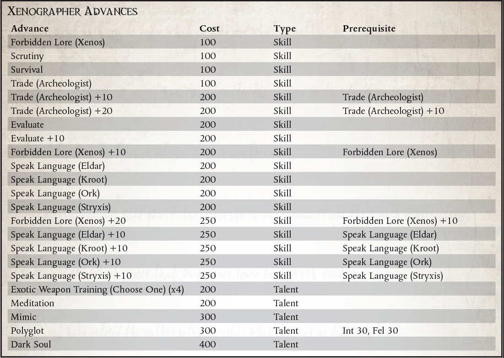
平等待遇（异形）
在他们的一生中，Xenographers 将与各种异种品种进行长时间的接触。 根据当时存在的历史，异种研究人员可以在与他们保持最密切联系的外星人的眼睛（或等效的感觉器官）中赢得一定程度的不情愿的尊重。 根据游戏管理员的判断，异种鉴定师可以以 200 点经验购买同级（异种）天赋作为精英升级，以表示他从特定异种物种中获得的尊重。 只有在 Xenographer 角色与相关外星人有广泛接触、做出值得他们尊重的事迹并以非凡的技能扮演他与相关物种的互动时，才应授予此进展。
【转职】
“那些傻子和他们谈论的精神和仪式；技术是因果，机制和结果，不应该像那些红袍傻瓜所认为的那样克制和处理不当。”
――Rephenesti Korvane，Heretek
在星际旅行的海盗和犯罪分子经常难以维持他们船只的高科技，缺乏必要的专家人员来执行维护仪式和安抚顽固的机器精神。虽然有些人可以与真正的技术牧师签订劳动合同，但这远非唯一的选择。
在 Koronus Expanse 中存在着那些违抗机械神教命令和传统的人，他们选择在没有机械教教派批准的情况下尝试技术并试图了解它是如何运作的。这些人被谴责为技术异端或异端，因为他们的亵渎行为而被追捕，如果他们被抓住，他们将毫不留情。这些人中的许多人为了相互保护和非法研究的利益而聚集在一起。这些团体经常发现，雇佣海盗和走私者给了他们生存所需的自由和机动性，并有机会在机械教的视线之外使用先进的机器工作。
多年来，出现了某些异端
在 Koronus Expanse 伴随着臭名昭著的行为的故事。无论是图勒门徒的前成员还是车床特工，他们险恶的名声在从 Footfall 到 Damaris 的出身低微的民众中产生了一个集体绰号。现在在广域网，一个倒下的拥有足够技能和声名狼藉的技术牧师很可能会被民众贴上 Arch-Heretek 的标签。尽管对于什么是 Arch-Heretek 没有设定标准，但就他们对机器的理解和熟练程度而言，它们通常可以与真正的技术牧师和探索者相媲美。他们中最伟大的曾经是技术牧师，现在已经不再崇拜 Omnissiah。 Arch-Hereteks 受到虚空犯罪分子的高度评价，无论是因为他们在所有技术方面的专业知识还是他们独特的能力。
机械修会小心翼翼地保护他们所拥有的知识，并残酷地强制他们对技术知识的垄断。那么，成为异教徒就很容易了――只要在技术和科学问题上挑战他们的权威就足够了。
然而，成为 Arch-Heretek 更具挑战性。为了生存足够长的时间以获得真正的技能并掌握技术，需要相当狡猾。要成为与火星祭司平起平坐的人，还需要更多的知识，足以用先进的机械来补充肉体。
所需职业：除克鲁特人、兽人、导航员、星语者或传教士以外的任何职业（注意，这允许非探索者获得这些进步，或者探索者可以使用此职业以溢价购买进步，以后会更便宜地获得）。
替代等级：等级 2 或更高 (7,000 xp)
其他要求：探索者必须具备技术使用技能，并且在未经机械神教批准的情况下对技术进行过实验。或者，探索者必须是一名违反机械教法律和约束的技术牧师。
特殊：Arch-Hereteks 自动获得天赋敌人（机械师）。

背道者机械师（天赋）
先决条件：科技使用 +10
探索者用奥术技术改造自己，现在拥有通常属于火星祭司的技术奥术力量。出于满足先决条件的目的，Explorer 被视为拥有 Mechanicus Implants Trait。他没有获得该特质的任何正常效果，他可能不一定拥有相同的植入物，而是他自己设计的等效装置。
颠覆性编程（天赋）
先决条件：机械植入物
探险者设计了一种二元暗语，可以混淆和颠覆机仆和其他机器生物的编程，让他能够指挥他们的行动。作为一个半动作，探索者可以尝试指挥一个具有机器特性且智力为 20 或更低的生物。进行反对具有挑战性的 (+0) 技术使用与意志力测试。如果他成功了，该生物必须在下一轮遵循探索者的命令。探索者可以通过在随后的回合中花费半行动来继续保持控制。如果他选择这样做，他必须在四轮后进行另一次对抗测试以保持链接。命令必须简单且可在一轮内完成。一些例子包括“逃跑”、“摔倒”和“攻击最近的目标”。
LUMINEN 亵渎（天赋）
先决条件：机械植入物
探险者的植入物会产生强烈的技术巫术脉冲，使他能够在他面前禁用技术。一个手势和最复杂的设备就会停止运行。成功的挑战 (+0) 弹道技能测试使他能够将能量引导至 10 米内的单个目标。这是一种远程攻击，可以躲避但不能被Fields或其他保护装置阻挡。如果目标携带任何电子设备――包括能量武器和仿生系统――那么它们将停止运行 1d5 轮，就好像它们的能量已经耗尽一样。如果目标是车辆，则它会立即遭受暴击，就像用户获得正义之怒一样，暴击结果减去 1（结果为零导致没有暴击）。
邪恶的入侵（天赋）
先决条件：使用电移植物，机械植入物
探险者擅长获取最复杂的机器灵魂的知识，用他自己创造的废代码和恶意灵魂攻击它们，直到它们在压力下崩溃。探险者在所有技术使用和安全测试中获得 +20 加值，以未经授权访问电子系统，如 Cogitator 或电子锁，只要角色可以使用他的植入物直接连接到它。
你问这是什么？一个人怎么可能使用这样的工具？什么样的外星智能可以设计出这样的设备？一旦我们处理了我的赔偿，我将回答这些问题以及更多问题……”
――Rayner Hackert，冷交易走私者
在帝国空间的边界上有许多财富。远古时代的考古遗迹，人类扩张十字军东征的圣物，以及那些在星际中生活的时间比人类更久的生物的遗物。所有这些以及更多的东西都处于休眠状态，等待着那些愿意寻找它们的人。虽然通过交易所有这些商品可以获得利润，但正是这些异形人工制品让整个科罗努斯广域内的数千人着迷。冷贸易，作为被禁外星文物的黑市贸易，在广域中广为人知，是大口外边境前哨中的一个蓬勃发展的行业。
促成这项交易的男人和女人是一个邪恶的犯罪集团，他们非常清楚他们的行为使他们与可怕的审判庭的异形审判庭分支和他们从中获取商品的异形文明产生了冲突。为了避免一种或另一种威胁的全部力量，大多数经纪人都喜欢一种特定的方法。有些人收集在岁月的重压下早已崩溃的异形文明的遗迹，掠夺一个消失的人的废墟，而没有得到他们死去已久的守护者的报复。其他人，甚至比大多数同类更炫耀帝国制裁，直接与异形互动并交易他们的货物，与他们结盟，并且在极少数情况下被他们接受，就像任何人类成员一样.正是这种对他们的异端有着敏锐洞察力的冷贸特工，才引起了异形审判庭的最大关注。还有一些人在采购他们的商品时扮演了更暴力的角色，积极寻找外星受害者，他们可能会剥夺他们尸体上所有有价值的物品。
Cold Trade 经纪人绝不是简单的海盗，他们在星空中寻找异种科技。他们是老练的罪犯，极端无情，并因多年与危险的外来物种的互动而变得更加顽固。考虑到他们选择的事业要求他们穿越星辰，在浩瀚的不同世界建立联系，同时逃避帝国权威，经纪人往往是狡猾的骗子，愿意使用诡计和直接的暴力。再加上冷交易的经纪人从不真正单独工作，辛迪加的每个代理人都有庞大的走私者、围栏、暴徒和杀手网络的非法支持，冷交易的力量不容小觑。
Xenos 的手工艺品绝不是在整个 Expanse 走私的唯一商品。考虑到边境的规模和人口，以及各个系统的法律差异很大，更不用说个别行星了，在整个广域网中被取缔的商品清单是无限的。数以百万计的普通走私者在广域网和邻近的卡利西斯星区工作，他们以向行星人口提供世俗的奢侈品为生，因为帝国信条的深奥变化而被禁止。尽管这些黑市经营者违反了他们所服务的任何系统、星球或站点的法律，但他们的行为并没有导致他们与帝国更可怕的力量发生冲突，他们也没有发现自己站在外星文明的错误一边.因此，这些走私者虽然本身就是一个危险的群体，但绝不是冷交易中冷酷无情的罪犯。
卷入冷交易并不需要太多。那些愿意冒着激怒外星人或审判官，或两者兼而有之的人，可以获得大量利润。成为成千上万偏离与邪恶外星人打交道的禁令的灵魂中的一员很少是有意识的选择，至少一开始是这样。许多冷交易者以探险家或雇佣兵的身份开始他们的生活，并发现自己拥有异形人工制品。有些人对这种物品没有任何个人用途，只会寻求尽快处理它。正是这种傻瓜最常被帝国权威或宗教裁判所的代理人压垮。那些更狡猾、更狡猾的人，也许与黑市交易有过联系，最终会接触到那些知道这些物品真正价值的人。这些更有经验的经纪人也知道有能力的经纪人的价值，并且会通过任何必要的手段来争取他们的永久服务。那些积极寻求冷交易经纪人生活的少数人是一群冷酷无情的人，他们更适合罪犯和外星人的生活，而不是帝国正直公民的生活。
所需职业：任何
替代等级：2 或更高 (7,000xp)
要求：以下技能之一：（以物易物、商业或禁忌传说（Xenos））。
其他要求：探索者在从事此职业之前必须积极参与被禁止的外星文物交易。
好处：探索者获得冷交易者特质。
特殊：冷交易经纪人自动获得天赋：敌人（宗教裁判所）

冷交易者（特质）
冷交易有很多路径，每个经纪人必须在交易中选择自己的方式。一些经纪人选择处理填充在 Expanse 中的异形。这些经纪人经常被他们的异形同行接受为受欢迎的局外人，甚至是保税兄弟。当然，这通常会导致宗教裁判所的坚定成员正确地怀疑，经纪人已经与反对帝国的无数势力之一结盟。其他经纪人实际上与他们兜售文物的外星人作斗争。这些男人和女人要么突袭现存的文明，要么深入他们特别感兴趣的异形的废弃废墟。冷交易的这些成员避免了直接应对异形威胁所产生的大部分怀疑，但却赢得了与宗教裁判所同等的敌人。
当探险家获得此特质时，他必须选择两条路径之一，要么直接与异形打交道，要么掠夺他们的文化。如果他选择与他交易的异形打交道，他将获得适用于他所处理的异形物种的 Peer (Xenos) 天赋。不幸的是，探索者如果选择这条道路，他的行为会吸引异形审判庭的目光，并获得敌人（宗教裁判所）天赋。
如果探险者选择了掠夺者的路径，他们将获得与他们选择的外星猎物相关的敌人（异形）天赋。这类经纪人经常发现自己卷入了对猎物的暴力行为，因此往往过着更多的军事生活。如果探险者选择了这条路，他会获得适用于他的特定异形的仇恨天赋。
“当我们面临无法形容的恐怖、深不可测的诱惑和对我们人类本身的威胁时，我们在帝国边境的可怜灵魂几乎迷失了方向。只有圣杜苏斯仁慈的守望，才让我们能安全度过风暴。”
- '修女' Styliane，落脚点中的文物小贩
在浩瀚宇宙中，有些人会利用同胞的信仰来谋生。这些人这样做并不是为了换取他们指控的精神健康，就像真正的教会成员所做的那样，而是他们是骗子、骗子和骗子。这些江湖骗子靠贩卖受人尊敬的圣德鲁苏斯的假遗物为生，作为对抗黑暗的护身符、治疗致命疾病和驱散不幸的符咒。广域和邻近的卡利西斯星区的人民和人类帝国的任何人一样虔诚，那些愿意为自己的目的滥用这种虔诚的人可以获得大量利润。事实上，广袤的普通人远比他的洞察力或学识要虔诚得多，数千年来不断传教士的布道使民众倾向于相信那些声称拥有某种程度的教会权威的人。
作为帝国扩张的前沿，克罗努斯广域面临着各种各样的威胁，深渊之外的生活充满了恐惧。异形攻击的威胁、混沌的掠夺以及环境本身都可以掠夺意志薄弱的人的思想和灵魂。德鲁西亚的江湖骗子正是从这些恐怖中提供了帮助。只需简短的交谈，江湖骗子就可以收集他的印记最害怕的东西，并提供给他，当然，只需支付适度的费用，就能确保能够抵御特定的邪恶。正如所料，这些遗物绝不是真品，但说服他的受害者否则是骗子的艺术。
有些人可能会将德鲁西亚江湖骗子的行为与冷贸易或海盗等“大”罪行相比较。那些人低估了教会在广袤地区大多数人日常生活中的重要性。在深渊的边界之外，信仰往往是人类与帝国之间为数不多的纽带之一，而江湖骗子则直接利用这些纽带。此外，销售小饰品和护身符所学到的技能可以演变成更大的弊端和巨大的财富。
广袤的江湖骗子特别关注卡利克斯人对他们的守护神圣将军的无比忠诚。像德鲁苏斯这样广为人知且平易近人的人物使他成为江湖骗子计划中的简单工具。在卡利西斯星区和科罗努斯广域内，对圣德鲁斯的崇敬如此盛行，安茹十字军的战场如此普遍，以至于普通人不难相信他所提供的烧焦的塑料块是来自圣德鲁苏斯本人的盔甲，或者他刚买的那块颚骨曾经属于圣徒的个人伺服颅骨。由于圣德鲁苏斯的足迹遍布卡利西斯星域和广域网，因此它是一个罕见的系统，尚未声称与圣人有明显的联系。这使得圣物的收集对于德鲁斯的江湖骗子来说变得特别容易，因为任何一点战场残骸、人类遗骸、古老的祈祷纸等都可以很容易地看起来与圣德鲁斯有关，从他在任何系统中的时间开始，或者在任何一个骗子碰巧在工作的空间站或星球上。
鉴于在整个帝国数千年的历史中传教士滥用职权，博学的人常常对那些愿意为了自己的目的而歪曲信仰的人保持警惕。江湖骗子经常受到这类人的极大怀疑，他们倾向于将他们的基本操纵视为走向更大异端的第一步。同样，执法人员，通常是广域的行星执法者，密切关注江湖骗子小贩的活动，尽管他们的权力通常将他们的起诉限制在违法行为上。然而，这并不是说执法者并不完全愿意将欺诈者交给教会的代理人。
Charlatans 显然不是 Expanse 中唯一的骗子类型。传统的骗子，他们的骗子，在广袤的土地上游荡，欺骗死水的边境公民和精明的政客。这些世俗的骗局经常实施比出售假文物或治疗更有利可图的方法的计划，尽管他们的艺术很少危及他们标记的灵魂。一个有魅力的双重交叉雇佣兵，一个伪装成图表飞行员的快速谈话的绑架者，或者一个利用他的视力宣布虚假愿景的灵能者，他们中的每一个都使用与德鲁斯江湖骗子相同的策略和计划来谋取利益。
当一个人决定自己的利益值得滥用他们信仰的普通民众时，他决定成为德鲁苏斯的骗子，而不是之前。也许这个未来的骗子从一开始就对信仰没有多大用处，或者他可能是一个因长期在广域中的灾难和不幸而苦恼的前人。无论如何，在他们成为江湖骗子的那一刻，探索者已经走出了帝皇的光芒，必须永远保护自己的行为不受国教的偏执眼光的影响，以免受到正义的迫害。他们的工作超出了国教的视野，他们的行为与那个杰出的组织背道而驰，将他们变成了愤世嫉俗的愤世嫉俗者，试图为自己的目的欺骗帝国忠实、诚实的公民。
所需职业：除 Explorator、Kroot 或 Ork 之外的任何职业替代等级：1 或更高 (5,000 xp)
其他要求：以下技能之一（易货贸易、喋喋不休、魅力、商业或审查）或敌人（国教）或竞争对手（国教）才能。探险者必须有 35 的联谊会。要成为德鲁斯骗子，探险者必须直接从出售假文物、祈祷、治疗或其他奇迹般的工作中获利。
特殊：Drusian Charlatans 如果他们还没有天赋敌人（Ecclesiarchy），他们会自动获得天赋敌人（Ecclesiarchy）。

冷读（天赋）
要求：喋喋不休+10，审查+10。
结合快速交谈和肢体语言解释，Charlatan 可以快速评估细心的人群和潜在客户。骗子利用民众的恐惧和迷信，吸引他的人群在不知不觉中告诉他他们相信什么可以将他们从广袤的日常生活中的恐怖中拯救出来。
在进行商业、易货或魅力测试之前，骗子可能会进行被目标的意志力或审查反对的废话测试。如果 Blather 测试成功，则骗子诱使目标放弃一些重要信息，然后骗子可能会进行挑战 (+0) 审查测试以评估所获得信息的重要性。如果成功，骗子在针对目标的每点感知加值的下一次商业、易货交易或魅力测试中获得 +5 加值。他已经确定了有关目标的信息，这将有助于他的推销、谈判或外交。
“对我的船长大人来说，我是一个值得信赖的顾问。对于我主的船员来说，我是他的喉舌。为了我们在 Expanse 中的利益，我是他值得信赖的代理人。然而，对他的王朝来说，我是他的隐形守护者，他沉默的编年史，如果他们愿意，我是他的刽子手。”
――Argyrus Asidenus 加里达斯家族的沉默者
对于拥有与 Rogue Trader 一样强大的力量的男人和女人来说，秘密可能是比宏炮电池或病毒炸弹更强大的武器。适当泄露的信心可能会破坏帝国总督的权威，摧毁战斗舰队，或者甚至推翻整个系统。这些秘密是用来对付盗贼商人还是为了他自己，是大多数持证王朝的领主非常关心的问题。尽管有这种担忧，即使在他们自己的船上，也有一些人通过玩秘密、破坏、操纵和勒索的伟大游戏来获得成功。许多团体必然会聘请这些问题的专家。作为强大的政治力量，Rogue Trader 王朝、海军贵族、帝国贵族和许多其他人都在玩这个游戏以及其他任何游戏，也许除了可怕的宗教裁判所。
Rogue Traders 将其特工的技能用于许多目的。他们对监视和密码的了解有助于保持对 Rogue Trader 船上的成群结队的密切关注，确保在其强大的船体中没有叛变或异端溃烂。他们对各种询问和审讯方法的熟悉使他们成为从那些会阻挠 Rogue Trader 设计的人那里收集信息的理想代理人。诚然，他们的训练是精明的上尉所采用的任何反间谍活动的重要基础。特工定期接受可靠技术培训，以忍受折磨者和审讯者的服侍，并且可以指望他们保守自己的秘密，就像他们收集主人的敌人的秘密一样可靠。
具有显着权力和威严的流氓商人可能会利用一名特工作为间谍大师，在他们的船只、舰队或跨系统的财产中指挥许多次要特工的行动和服务。这些阴谋大师扮演着巨大的蜘蛛，坐在由线人、卧底和叛徒组成的错综复杂的网络中心，所有这些都为了一个目的而行动。这种间谍大师是危险的人，总是在他们微妙的游戏中提前计划十步。
对盗贼商人的秘密最大的威胁往往是在他自己的船上，甚至可能是他最亲密的顾问。数千年的内讧和阴谋使得许多航海家家族既偏执又狂妄到了极点。尽管整个人类帝国都依赖于他们的生存天赋，但他们对同胞的不信任是传奇的，他们嫉妒地保守着自己的秘密。因此，他们在日常交易中严重依赖间谍活动和诡计。正是出于这个原因，海军贵族家族经常训练他们雇用的一些特工密切关注他们的雇主，找出他们的弱点和罪恶，作为未来合同的可能筹码。
事实上，即使是盗贼商人自己的王朝家族也可能会在其贸易令状的世袭持有人的随从中聘请代理人，以确保他按照王朝的意愿行事，而不是根据自己的心血来潮。这些特工通常是最阴险的，因为他们伪装成一个值得信赖的同志或同谋，同时他们一直在蠕动着获得 Rogue Trader 的信任，以获取权证持有人最接近的那些东西。这些双重间谍甚至可能被要求在船员中煽动叛乱，以破坏一个违背王朝意愿行事的流氓商人，或者在必要时切断任性继承人本人的喉咙。像这样的特工走在剃刀的边缘，平衡着他们对队长大人的职责和他们对家族的职责，时刻警惕他们不让自己的手倾斜。
就连神圣的国教和机械教都知道使用这些方法。帝国教派的许多代理人通常都是狂热的正统拥护者，他们利用他们的阴谋和诡计在船员甚至是他们的盗贼商人指挥下的军官中抽出那些煽动异端的人。另一方面，火星祭司的许多特工更关心保护他们的秘密，而不是发现他人的阴谋（除非他们可能会获得被遗忘的技术系统的知识）。他们的知识是他们最珍贵的财产，因此他们的努力经常用于在他们的船长船长的船上围绕他们邪教的奥秘构建庞大的密码和错误信息迷宫。
即便是在数以亿计的帝国民众中，拥有阴险狡猾或诡计多端的性格成为有用的宫廷特工的男人和女人也相对较少。尽管如此，还是不乏渴望在 Rogue Trader 船上担任间谍大师这样的职位的人。这些被迷惑的人的名字被记录在少数文本中，也没有被记入编年史。那些拥有处理秘密和欺骗所需技能的人很少渴望过这样的生活，他们要么被强大的间谍大师选中从事这样的职业，要么在他们出生之前就注定要担任这个职位。由于即使是机械神教的令人敬畏的技术也无法永远保护一个人免于死亡，可靠的特工和间谍大师会寻找那些拥有艺术和狡猾的人来填补他们的位置，并亲自训练这些新兵在他们自己死后取代他们的位置。最经常从出生开始培养他们的特工的是流氓商人和海军贵族的王朝。这些人可能一生都在为他们的房子服务，让他们的童年接受审讯、诡计、密码和监视方法的教育。
所需职业：除了 Rogue Trader、Kroot 和 Ork 之外的任何职业。
替代等级：4 或更高 (13,000 xp)
其他要求：探索者必须有 30 的友谊，以及 40 的智力或意志力。为了进入这个职业，探索者必须已经直接为政治机构工作，要么是帝国贵族，要么是流氓商人王朝，导航屋或类似实体。

手术调节（天赋）
Explorer 获得了 Chem-geld 和 Orthoproxy 天赋的好处（心理调节取代了这些通常需要的手术）。除了抵制诱惑和审讯外，众议院特工还经常接受训练，以利用俘虏的询问来对付他。探索者可以利用审讯者的问题和技巧来获取关于审讯者本人及其工作对象的性质、目标和动机的详细信息。如果探险者受到审讯，并在对抗的审讯与意志力测试中获胜，他可以立即进行挑战 (+0) 审查测试。在一次成功和每多一次成功的情况下，他都可以了解关于他的俘虏的一个细节（他能学到的和不能学到的最终都取决于 GM，但它应该是有价值的东西）。
“没有世界超越他的能力；除了他的愤怒之外，没有敌人。”
――刺客信条的座右铭
人的生命是一种资源，可以根据有权者的需要来使用和消耗――这是帝国内外的不言而喻，是强者赖以生存的教条。许多人的死亡是出于各种原因，从战争的必要牺牲或大工业的危险，到为阻止他人反抗思想而做出的榜样。但死亡不仅仅是一个人的命运。劳动和劳累的生活，或忏悔痛苦的生活，对任何当权者来说都是宝贵的东西。
虽然杀死或支配其他人的人并不少见，但在这个无处不在的种族中，有些人已经将这种召唤变成了一种艺术形式，毫无悔意或怀疑地猎杀其他人类。
在那些可能声称拥有“猎人”这个绰号的人中，刺客是理所当然地受到恐惧的，无论他们使用何种冷酷的交易工具。最可怕的是那些只为帝皇而杀的人，他们是帝皇愤怒的活生生的化身，但他们可怕的注意力只留给了少数几个特别臭名昭著的人，他们的生死以某种宏大的方式影响着帝国。其他人仍然以其致命的优雅而闻名，他们选择的别名被那些失去很多的人和那些愿意使用他们服务的人窃窃私语。仅在 Footfall 就有数百名杀手可供雇佣，但只有少数人的技能和声誉值得畏惧。
赏金猎人和其他活捉猎物的人可能被认为不那么恐怖，但他们所拥有的技能同样值得敬畏，尽管声誉不那么光彩。数十甚至数百名赏金猎人购买通往边境世界和整个广域网的通道，以寻找合法和非法的政府和组织通缉的人。对于那些被追杀的人来说，这些猎人的圈套和陷阱不亚于狙击手的子弹或凶手的刀刃。
如前所述，任何人都可以猎杀其他人类来杀死或俘虏他们，但要成为真正的猎手需要特别的奉献精神。这个过程不是自动的，没有简单的方法来区分熟练的业余爱好者和真正的专业人士；更确切地说，这是一条人行进的道路，每次狩猎都获得更高的熟练度，无论成功与否。
这条道路上的第一步是捕获或谋杀另一个人，这完全是为了个人利益。这不仅仅是战场上的简单暴力，而是一种有计划的行动，计划相当详细，执行时没有悔恨、怜悯或犹豫。
所需职业：任何
替代等级：等级 1 或更高 (5,000 xp)
其他要求：探索者必须为个人或经济利益谋杀或监禁另一个人（如果探索者希望在等级 1 上从事此替代职业，这将需要 GM 同意）。
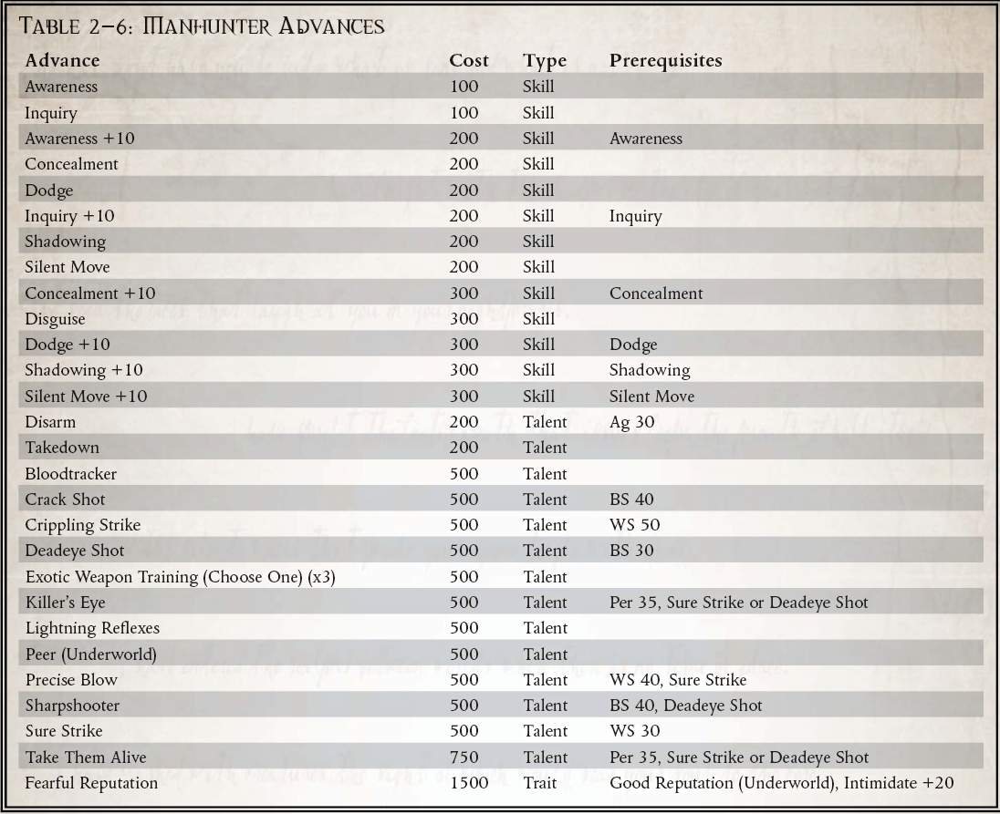
杀手之眼（天赋）
先决条件：感知 35 和必胜一击或死眼射击
探险者只需片刻观察就能发现猎物的弱点。当他进行一次召唤射击攻击并在攻击检定上获得等于或大于目标敏捷加值的成功度数时，他会立即对目标造成除任何正常伤害外的 1d5 暴击伤害结果。在适当的暴击表上滚动，以确定所击中的伤害类型和位置。任何来自天赋或其他来源的暴击伤害修正都照常适用。但是，此技能造成的暴击伤害不会与实际暴击命中叠加。
活捉他们（天赋）
先决条件：感知 35 和必胜一击或死眼射击
探险者非常擅长在不杀死敌人的情况下将敌人置于低位，能够使他的目标丧失行动能力并限制他对他们造成的伤害。当探险者对敌人进行召唤射击时，他可以选择在减少目标的护甲或坚韧加值后造成的伤害减少等于他的感知加值的数量，并为每点伤害造成一个等级的疲劳以这种方式减少。此外，探索者对非致命武器的熟悉意味着敌人无法从盔甲中获得通常的加值来抵抗电击武器的惊人效果，并且会受到 �C10 的惩罚来避免或逃避任何具有诱捕特性的攻击。
可怕的声誉（特质）
Manhunter 推进包含一个在正常情况下实际上无法购买的条目――此推进授予角色恐惧 1 特性，并需要通过此推进计划无法获得的技能和天赋。这完全是故意的。一个人物想要获得如此恐怖的声望，需要他的知名度和威慑力，而这是仅仅靠消耗经验值无法获得的。即便如此，它也不应该轻易获得。
满足这一进步的先决条件应该是通过游戏获得的东西，角色的成就，随着时间的推移而努力。要让你的敌人在你面前逃跑，既需要声望很高，也需要相当程度的个人存在；他们必须毫无疑问地知道，他们所面对的敌人是令人恐惧的……而这样的壮举并非易事。
“你的祈祷毫无意义，你的上帝毫无意义，你的生命毫无意义。你死了。”
- 最后一次已知的通讯传输到我们的祝福救恩，从残骸中的桥梁记录器中恢复。
Koronus Expanse 以其无法无天而闻名。残酷和危险是许多人的生活方式。有些人以除了毁灭之力之外无人能及的血腥暴力程度追踪星辰。这些是掠夺者，只知道猎物和战利品的海盗，被攻击的受害者和被掠夺的货物。他们是一股被比作血腥和死亡风暴的力量，由大型电池和突击艇的致命齐射预示着，其中充满了近乎野兽般的野蛮人，一心要血腥征服。更糟糕的是，这样的行为会吸引变异的渣滓、异形渣滓和其他可怕的居民上船，让他们在战斗中更加可怕。
掠夺者海盗代表了人类可以下降的一些最糟糕的深度。这些人在无法无天的广袤之地度过了太久，不受道德约束或文明行为的束缚。他们经历了太多的战斗，流了太多的血，失去了太多的信仰，看到了太多的战友落入了无情的命运。大多数人已经是小偷或海盗，无论是突然震惊还是随着时间的流逝，他们意识到唯一的生存方法就是变得像周围的空间一样严酷无情。已经没有法律，现在甚至没有犯罪――只有欲望、需要和不被满足时才会流血。他们的袭击凶猛而彻底，幸存者几乎没有，任何可以被掠夺的东西都被剥得光秃秃的。如果幸运的话，任何被活捉的都被卖为奴隶或被压成船员的渣滓，任何未被作为战利品保存的掠夺物品都被交换为补给品或弹药。
没有长远的计划，因为计划是没有意义的。除了简单的伏击或毁灭性袭击之外，没有其他计划。只有动物狡猾，需要满足才能在攻击后发动攻击。当他们沉迷于堕落时，他们会越陷越深，因为在克罗努斯广域中没有底部，他们在行为上与野蛮的野蛮人几乎没有区别。无垠中，光总是昏暗的，很容易陷入真正的黑暗。
成为一名掠夺者就是尽可能地跌倒。这些人很容易成为野蛮的当地人或贫穷的殖民者，除非在他们眼中，出卖他们现在死去的灵魂的眼睛。探险者周围的其他人可能不会注意到从单纯的海盗到掠夺者的转变，只是目睹了战斗中粗心的凶猛行为和其他时候的缺乏礼貌。越来越多的原始欲望成为唯一的关注点，诸如修饰或道德之类的细节只是毫无意义的浪费时间。不管之前有什么犹豫，如果被问到（或者即使没有被问到），他们很容易愿意杀人。这并不意味着他们永远迷失了，但即使是最密集的精神关怀也会花费很多时间，成功的机会很小。然而，如果使用得当，掠夺者在战斗中是一个强大的补充，而掠夺者的船员甚至可以成为最强大的盗贼商人舰队的致命对手。
所需职业：任何人类
替代等级：等级 2 或更高 (7,000 xp)。如果 GM 同意，探险家可以在其起源路径中选择犯罪、黑暗或黑暗航行选项将要求降低到 1 级。在这种情况下，探险者除了从他的起源路径中获得的任何值外，还必须获得额外的 14+1d10 疯狂点，并且必须满足他背景故事中列出的其他要求。
其他要求：探险家必须至少已经参与过另一艘船的捕获和掠夺，冷血地杀死了一个对手，并且至少有 15 点疯狂点。
特性：掠夺者获得 1d10+5 疯狂点并获得天赋敌人（盗贼商人、贵族、帝国海军）。
特殊：虽然似乎不可能在其他探险者中掩饰对掠夺者的改变，但如果需要这样做，则应与 GM 一起努力在不提醒其他船员的情况下进行这一转变。理想情况下，这将是几个会话，直到其他人注意到明显的线索并决定他们对他们的探索者同伴采取什么行动。当然，除非整个船员都离开了掠夺者……
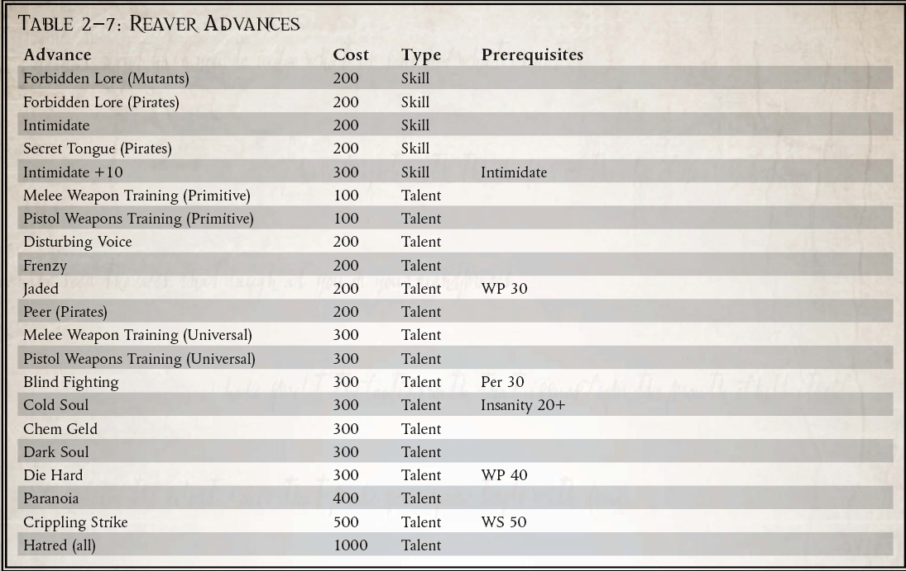
冰冷的灵魂（天赋）
先决条件：失心点（20+ 点）
随着他的人性感逐渐消失，探索者已经与正常的人类情感或感受脱节。 他几乎不受任何人类情感的影响，无法怜悯或同情，也不顾及任何人的诉求。 他是人类，被剥夺了使人类不仅仅是动物的东西，仍然是一个理性的存在，但灵魂已经缩小为光亮的火花。 该天赋在反对任何联谊会或审讯测试时提供 +30 加值，并且由于其令人不安的面容，在他们进行的任何基于联谊会的测试中会遭受 �C20 分。 探索者移除任何当前的精神障碍，并且永远不会在精神创伤表上滚动――这种感觉现在已经超出了他的能力――但在试图移除精神错乱点时必须支付双倍的正常经验值。 如果玩家的精神错乱值低于 10，那么他可以根据 GM 的判断移除该天赋。
“杀了你？考虑到你为我的到来穿得这么好，我为什么要这么做？”
-Pollox de Navarro，武器大师，黑鹰
做海盗在很多方面都很容易。毕竟，这只是拿货不付钱的问题，没有任何官方支持或授权。到目前为止，要在这方面取得成功是一个更加困难的提议，因为它需要仔细的计划、可靠的信息网络、值得信赖的工作人员以及愿意处理赃物的围栏。然而，用 élan 来做这一切，是真正的主人，海盗的海盗――Swashbuckler 的标志。
面对广袤的恐怖和这个职业的危险，表现得如此放纵和华丽也许是一种精心的表演。它也可能是一种温和的精神错乱，旨在让探险者应对第 41 千年的各种噩梦。无论哪种方式，这样的展示都与大多数海盗的卑鄙野蛮一样有效。通常更多取决于目标对象的状态。魅力和风格可能会赢得残酷和粗暴无法赢得的那一天，而流血较少的胜利更加甜蜜。这并不是说 Swashbuckler 不能战斗，因为这个海盗必须在他的智慧天鹅绒下准备好钢铁。声誉就是一切，他必须准备好以行动支持言辞，至少在有证人的情况下。但是，一个浪荡剑客很少会杀人，除非需要驱使，否则除非被激怒，否则他会认为自己的行为与贵族一样文雅。以自信和自信的微笑迎接每一个挑战，以锋利的智慧战胜每一个敌人，以比他所面临的大多数人更大的个人荣誉准则突袭浩瀚的财富，做这一切以及更多的是带来对于 Koronus Expanse，如果不是一种文明感，也许是一种风格感。还有什么比这更光荣的呢？
这样的行为（或者是真实的行为，还是更真实的精神错乱？）并非没有风险。 The Expanse 对傻瓜没有什么耐心，一个 Swashbuckler 确实会出现在许多人眼中。很少有人会欣赏这样一个迷人的流氓，而海盗同胞会很高兴看到这样一个对手被除掉。再多的魅力也无法让一个沉重的喷火者置之不理……不过，Swashbuckler 也会获得附带好处，例如更广泛的联系网络和更可靠的代理人来支持他。许多行星和空间站可能不会正式欢迎他，而是对他的到来和离开视而不见。只有最清教徒的机构才会拒绝他，对许多人来说，他是一个受宠的顾客，他们甚至可能冒着受到地方法官的愤怒的风险。通过不陷入血腥和残暴，它还允许“赎回”并在绝望时期作为持牌私掠者甚至权证工作。
但对于一个 Swashbuckler 来说，这种行为本身就是一种奖励。以这样的准则生活，在其他人看来是不切实际的，面对虚空，双眼泛滥，傲慢的笑容，以及随时准备与任何对手决斗的剑――还有什么比这更美好的生活方式呢？
所需职业：任何。
替代等级：等级 3 或更高 (10,000 xp)
其他要求：必须拥有至少 35 的联谊会。探险家必须已经参与了至少一次对另一艘船的捕获和掠夺，并进行了一项令人难忘的或侠义的行为，证明有损于他的利益（不包括一个战败的敌人） ，在向敌舰开火之前警告敌舰，或者在决斗中轮到对观众发表诙谐的评论而不是战斗）。
特殊：游荡者自动获得天赋敌人（帝国海军）。
 战斗魅力（天赋）
战斗魅力（天赋）
先决条件：剑圣、魅力 (+10)、WS 40
探险者的近战技巧无人能及，但更重要的是，他在战斗中充满自信，自信甚至可以打动他的敌人。 用诙谐的方式快速地站起来，更快地，如果你的刀片没有刺穿他们的肉，那么你带刺的玩笑肯定会刺穿他们的镇静。 该天赋允许探索者在每个战斗回合中以半动作对抗任何近战敌人的挑战（+0）魅力对抗意志力测试。 如果他赢了，他会对他的敌人的武器技能施加 �C10 的惩罚，每成功一个等级就会增加 5。 此处罚适用于一整轮。 多个探索者可以使用此天赋累积效果。 根据 GM 的判断，拥有野兽、恶魔、来自彼岸或机器特质的对手免疫此天赋。
“每一年，我们的大部分产品都流向那些以遥远的泰拉名义统治的人，这个世界对我们所知也可能是一个神话。帝皇是用来欺骗无知和弱智的人的谎言奴役。不再！我们不再在这个虚假帝国的枷锁下挣扎！
――Grygor Tsavo，因叛国罪被处决，791.M41
也许一个人可以犯下的最大罪行，脱离帝国是在行星范围内的罪行，超出了除了 Rogue Traders 和行星总督之外几乎任何人的范围。从帝国手中夺取一个世界是军队和舰队集结的原因，也是宣战的原因。
尽管有这样的后果，但仍有不少行商盗贼声称拥有世界，甚至整个帝国，并假定在没有适当向帝国进贡的情况下统治它们。这种行为的傲慢，相信自己超越了百万世界的帝国，令人震惊，但几乎无法超越一个已经用帝皇的声音说话的人的头脑。
除了贪婪和傲慢之外，人们可能会选择放弃帝国的几个原因。有些人认为自己是在为帝皇效力，而帝国存在危险的缺陷，不再为人类之主的最大利益服务。持有这种信仰的人确实很危险，因为他们的信仰赋予他们承受帝国报复的力量，而他们信仰的激情常常吸引许多幻想破灭的牧师和他们的会众。
那些抛弃帝皇和帝国的人同样危险。虽然他们可能经常缺乏普通民众的支持，但完全谴责皇帝统治的世界往往成为其他类型罪犯的避风港，将海盗和走私者召集到他们身边并成为非法活动的中心。
在任何一种情况下，卡利西安当局都会给那些反抗皇帝统治的人贴上“分裂主义者”的标签，而不是“激进的”、“有远见的”、“意识形态的反叛者”或许多其他适当的头衔。通常，这是因为他们对犯罪的原因不感兴趣，只关心行为本身。
在任何一种情况下，或者出于其他原因，一个分离的世界往往只能在很短的时间内享受其自由，因为帝国对反叛者的报复是迅速而可怕的，成千上万的人成为了榜样，以至于其他人三思而后行是否犯同样的错误。尽管遭受了如此残酷的报复，但有些人总是会努力摆脱帝皇的统治，相信自己已经摆脱了帝皇军团的愤怒。
成为分裂主义者
脱离帝国需要大量资源――事实上，这些资源是统治一个世界的资源――这对任何人来说都不算犯罪，但最有权势的人除外。盗贼商人有办法通过他们的召唤来做到这一点――盗贼商人的职责之一是以帝国的名义征服世界，因此以他们自己的名义占领这些世界是一件简单的事情，而不是他在地球上的那个。帝国边缘以外的世界通常很难让帝国采取行动，但远非不可能。
从帝国手中夺取一个世界是一件困难得多的事情，需要对那个世界拥有足够的权力来取代代表帝皇统治的帝国当局和抵抗帝国报复的力量。无论哪种情况，这都不是一件轻而易举的事情，也不是一件容易的事。
所需职业：任何
替代等级：等级 1 或更高 (5,000 xp)
其他要求：探索者必须带领一个地区、虚空站、星际飞船或世界的人口脱离帝国的统治（如果处于 1 级，这需要 GM 酌情决定是否满足此要求）。
特殊：通过获得这个替代等级，你背叛了整个帝国，并获得了敌人（修女会、修会、阿斯塔特修会、机械修会、行政管理、星语者、教会、帝国卫队、帝国海军和宗教裁判所）天赋.
分离主义者进阶计划包含几个天赋，这些天赋指的是核心规则手册中未列出的群体。这些解释如下：
同行（分离世界）和良好声誉（分离世界）（人才）
这些天赋特别适用于探索者从帝国统治下领导的一个或多个世界；分裂主义领导人经常受到人民的喜爱。
仇恨（帝国组织）（人才）
在这种情况下，帝国组织是以下团体的统称：修女修会、仲裁修会、阿斯塔特修会、机械修会、内政部、星路者、国教、帝国卫队、帝国海军、宗教裁判所和导航员。每次你选择仇恨（帝国组织）推进时，选择上面列出的组织之一――这是你仇恨的组织。
大演说家（才艺）
先决条件：魅力+10，指挥+10，演说大师。探险家的话同样激发了忠诚和异议，可以同时影响数百个人。他的团契测试和基于团契的技能测试影响的目标数量是正常数量的 100 倍。
死亡审判
脱离帝国的人面临的只有死亡，因为他们的审判只能来自皇帝，不能来自其他人。由于罪行的严重性，分离主义者受到了皇帝在其他情况下很少使用的一种武器的注意：刺客公署。
由数个教团或神殿组成，由近乎无与伦比的认可杀手组成，刺客官是帝国拥有的最致命的武器之一，很少使用，并且由泰拉最高领主的命令使用，每个神殿都采用不同的方法带来死亡。在卡利西斯星区的历史上，已知只有七名行商无赖获得了死于神殿刺客之刃的可疑荣誉，除两人外，其他所有人都选择了放弃帝国并建立自己的帝国。另外两个是 Bastalus Irem，他的死是由宗教裁判所颁布的，还有 Ceronna Raom，他在 960.M40 召集了数百名海盗加入他的事业，并带领他们在马尔菲亚分区进行了为期两年的一系列突袭。当然，还有足够多的其他 Rogue Traders 在“神秘情况”下消失，这个总数可能并不完整。
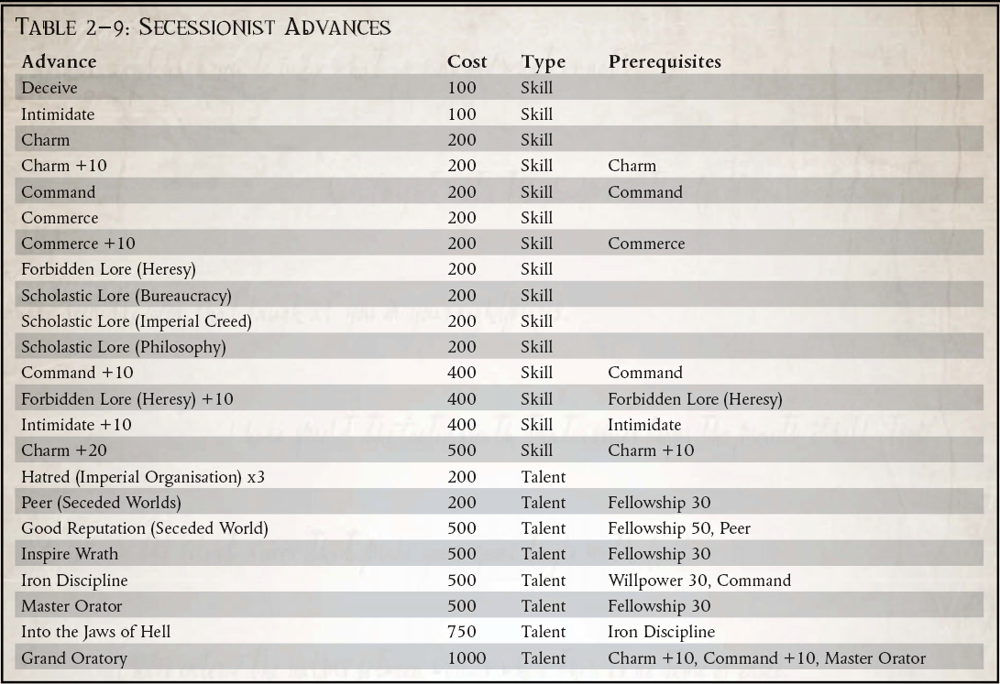
“异端邪说是那些希望让人类永远处于黑暗中的小人发明的词。知识只能通过向 Omnissiah 赋予宇宙的奇迹敞开心扉来获得，他以他的智慧不仅将知识传给了人类，而且传给了银河系中的许多种族。我们必须通过任何必要的方式唤醒我们的思想来了解这一知识，并参与 Omnissiah 的威严。该设备向我揭示了这一点，还有更多。”
――Heretek Magos Decius Abraxas
逻辑学家和其他叛徒长期以来一直困扰着科罗努斯广域，而麦格斯・德西乌斯・阿布拉克萨斯是另一个异端，他曾经旅居于巨渊之外，寻找早已死去的种族的邪恶秘密。虽然一些流浪的科技牧师甚至与异形和他们亵渎神明的技术结盟，但 Abraxas 的科技异端是无止境的。
作为 Paracelcus Thule 的弟子，Abraxas 确信 Omnissiah 最伟大的真相隐藏在花萼广袤之外，声称这些奥秘在某些异形种族的心理技术中是显而易见的，尤其是可怕的 Yu'Vath。阿布拉克萨斯违背机械教的信条，试图通过唤醒沉睡在已死帝国遗迹中的精神潜力来解开宇宙的终极秘密。
一个多世纪以来，阿布拉克萨斯探索了广袤无垠的星球，从异教徒之星到被诅咒的直辖领地，再到不为人知的区域和亚伦深渊，钻研最黑暗的深处，寻找与精神力量产生共鸣的人工制品。 Abraxas 和他的门徒积累了大量的异种技术，进行了一些可以想象到的最令人发指的实验（至少在机械教的眼中），将被禁止的外星人工制品融入他们自己的身体，并将他们神圣增强术的机器精神与这些世俗的异种设备。尽管没有任何可证实的目击证人证词证实，但谣言比比皆是，说阿布拉克萨斯和他的追随者能够通过他们思想的休眠区域引导这些人工制品的精神能量，并表现出类似于帝国最强大的灵能者的能力。
尽管阿布拉克萨斯本人在将近七十年前消失在赫卡顿裂隙中，但他的几个学生仍在追随他们主人的脚步在广袤无垠的地方游荡。在低声传闻和古老星图的指引下，这些奇特的探索者寻找与亚空间有关的异形文物。从 Egarian Dominion 死去的迷宫城市到被遗忘的 Eldar 和 Yu'Vath 的前哨，再到 Stryxis 的商队船只，这些追随者继续 Abraxas 的工作，总是在寻找可能解开他们相信的秘密的难以捉摸和致命的机器Omnissiah 已经为那些愿意索取它们的人藏起来了。
Abraxas 的学生极为罕见。很少有火星专家会求助于异形的技术巫术，因为他们相信这可能会使他们更接近 Omnissiah 的思想，而大多数这样做的人只是被他们更热心的同胞杀死。然而，有些人仍然在科伦斯广域游荡，偶尔与外行分享他们的秘密，特别是如果他们可能获得某种形式的通灵异种技术。
为了深入探究 Omnissiah 埋藏在外星技术中的奥秘，阿布拉克萨斯的追随者需要稀有的异形人工制品来融入他们的仿生身体。这些物品是他们明显的通灵能力的关键，但拥有它们可能会引起宗教裁判所和机器教派更正统专家的不必要注意。
Omnissiah 可能将他的秘密植入外星设备中的想法对于那些在车床世界中拥有可怕的龙王斗篷的人来说是最糟糕的异端邪说。这些强大的人不容小觑，他们从车床的圆形监狱中的邪恶目光甚至刺穿了科罗努斯广域的笼罩范围。尽管如此，即使是他们的影响力也不是万无一失的，一些阿布拉克西斯的追随者继续在科罗努斯广域内活动，拼命地寻找他们认为可以揭示 Omnissiah 最大秘密的东西，而不顾成本或危险。
所需职业：探险家
替代等级：3 或更高 (10,000 xp)
要求：意志力 35，禁忌传说（机械神教）+10 技能，禁忌传说（Archeotech）+10 技能。
其他要求：探索者可能不具备不可触碰的特质，并且必须在选择此替代职业等级之前发现至少一件导致他对此类设备产生病态迷恋的精神活跃的人工制品。
特殊：探索者在获得此替代职业等级时会获得敌人（机械修会）和竞争对手（机械修会）天赋。
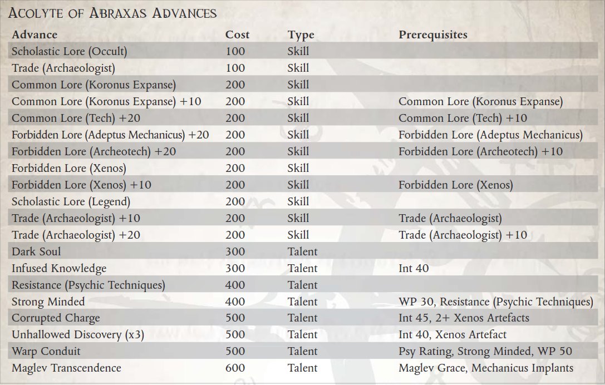
力量（武器质量）
原力武器的独特之处在于它们只有在真正的灵能者使用时才能正常工作，他们的精神能量将这些看似普通的武器变成了可怕的力量装置。它们可以采用几乎任何普通手持武器的形式，例如剑、斧头、戟或锤子，并且在非灵能者的手中它们会起到这样的作用。但是，当一个灵能者通过它们引导他的力量时，这种武器可以将他的力量倍增到超人的水平。
原力武器在被灵能者使用时有特殊规则，否则被视为标准原始武器的最佳工艺单声道变体。在灵能者手中，武器会造成额外伤害并获得等于灵能者心理等级的额外穿透力（因此心理等级 3 将获得 +3 伤害和 +3 穿透力），并且伤害类型变为能量。此外，每当灵能者用原力武器伤害对手时，他可以以自由动作进行集中力量测试（对抗意志力）。对于他赢得对抗意志力测试的每个等级，原力武器的持有者会造成额外的 1d10 能量伤害，忽略护甲或坚韧加值。力场武器不能被具有能量场品质的武器摧毁。
导航员使用原力武器不会获得任何奖励，因为他们没有心理等级。
腐败的指控（人才）
先决条件：智力 45，2+ 集成通灵异形神器
一些阿布拉克萨斯的追随者花费了大量时间来掌握通过他们未经批准的收购来引导他们内部能量的艺术，并发现它可能会产生意想不到的――而且是致命的――结果。
来自该角色的 Luminen Shock 和 Luminen Blast 天赋的伤害获得原力品质。但是，如果角色未能通过集中力量测试来激活原力品质，那么他将遭受 1d5 点能量伤害，而不会因护甲或坚韧加值而减少。
不神圣的发现（人才）
先决条件：智力 40，集成通灵异形神器
通过奥术过程将带有灵能的异形神器整合到他的仿生形式中，阿布拉克萨斯的侍僧可以通过他的思想引导神器的力量，凭借他们被污染的遗物执行与真正的灵能者一样的壮举。探险者可以使用的心灵技术取决于文物的来源和性质；玩家和 GM 应该一起从本卷、ROGUE TRADER 核心规则手册或其他包含相关权力的 ROGUE TRADER 补充材料（如深渊边缘）中选择合适的权力。
角色获得心理等级 1（如果他已经有心理等级，则他的心理等级增加 1），并使用 ROGUE TRADER 核心规则手册第 157 页表 6-1：心理力量的叛徒灵能者和巫师部分。当探险家获得此天赋时，他会立即学习一种心灵技术（如上所述）。探索者最终可能会将多达三个这样的人工制品合并到他的身体中，每个都可以访问由玩家和 GM 确定的特定技术。如果人工制品被移除，探险者将失去精神力量，直到人工制品被归还给他（前提是他幸免于将其从他的网络斗篷中撕下）。然而，每次他获得或更换一件神器，以及每次他在表 6-3：亚空间的危险（参见 Rogue Trader 核心规则手册第 161 页）上滚动时，他都会获得 1d5 腐蚀点并遭受 1d5 不减少的能量伤害除了任何其他结果之外，还可以通过护甲或坚韧加成，因为奇怪的设备对他增强的思想和身体的控制越来越大。
“没有人可以永远奔跑。”
――来自圣艾利斯的恩赐
成为帝国范围内的灵能者意味着背负着一种可怕的、不可预测的力量，并因为拥有它而受到迫害。即使是那些在残酷的制裁过程中幸存下来并被认为对帝国足够有用并在其中服务的灵能者也是永远的局外人，他们从未完全被那些依靠他们进行远距离交流、穿梭星辰并保持帝国崩溃的人完全信任基础设施又向前推进了一天。
灵能者的故事比比皆是，他们试图逃避自己的命运，躲在帝国黑暗角落的黑船。这些故事利用了一种原始恐惧，即无论一个人在社会上有多大的影响力、联系或虔诚，他总能发现自己身上的女巫印记。一个特别普遍的传说描述了一位行星总督的女儿，她的心灵潜能觉醒较晚，在被发现之前被父亲庞大但日益减少的资源和联系隐藏了一段时间。然而，在许多人所说的皇帝永恒恩典的标志中，她没有被选为牺牲品，在她的制裁中幸存下来，并最终在被逼入禁卫军服役时获得了赎罪和偿还对皇帝的债务的机会。大多数情况下，这个故事被讲述为一个道德故事，讲述了皇帝的仁慈是无限的，一个人无法在他的宏伟计划中为自己的角色而战。然而，很少有关于未经批准的灵能者的真实故事以愉快的方式结束这一切――更常见的是，最后一幕涉及到后巷里的一把爆矢手枪、一群信徒和柴堆上的尖叫死亡，或者是地狱般怪物的爪子和牙齿.
然而，在 Koronus Expanse 无法无天的边境上，未经批准的灵能者可以生存，甚至可以在可怕的黑船控制之外茁壮成长。在这片广阔的未定空间中，未经批准的灵能者可以选择自己的道路――但在帝皇的指路明灯之外，这些阴暗的堤道大多会导致迅速死亡，或者导致可怕到无法思考的命运。
未经批准的灵能者的力量比经批准的灵能者变化更大。有些人发展出的能力与受认可的灵能者的力量惊人地相似，可以预测未来，用他们的思想移动物体，或者让冰霜和火焰的力量听从他们的召唤。其他人则走在陌生的道路上，挥舞着在科罗努斯广域的阴影领域学到的奇异、混乱或完全陌生的能力。一些人效忠于帝皇，尽管躲避他更热心的仆人，另一些人则献身于毁灭之力，还有更多人放弃了这种效忠，只相信自己的力量。未经批准的灵能者是一个与 Koronus Expanse 的世界一样多样化的群体，并且只有一个共同点留在那里：他们希望避开帝国的恶意凝视，从而继续生活而不受它对所有被亚空间接触的人施加的束缚。
当然，任何忠诚的帝国公民，即使是在科罗努斯广域这样的地区定居的人，都知道憎恶女巫。即使是没有被帝国的黑船访问过的世界也必须保持对未经批准的灵能者的控制，以免他们对一个人表现出仁慈而危及整个星球。不遵循帝国信条的人类世界好不了多少，那些不残酷剥削或压制灵能者的世界通常由不喜欢竞争的亚空间接触者统治。为了避免无休止的迫害，科罗努斯广域的许多未经批准的灵能者避免定居在一个地方，在群星中寻找他们的命运。绝大多数人在觉醒后的短时间内被自己不受约束的力量所消耗，但那些能够隐藏（并幸存）他们独特才能的少数人经常发现自己在航行于科罗努斯广域的流氓商人的船上具有相当大的影响力.毕竟，有哪位船长不想要一个能在敌人开火前躲避的虚空大师，或者一个预知未来投资永远不会犯错的总管呢？
觉醒的灵能者不会选择他们的道路，但他们仍然必须走这条路，在帝国对未经批准的灵能者的严酷正义与亚空间对他们灵魂的可怕渴望之间踏入阴暗的领域。他们必须知道他们无法永远在这两种命运之间取得平衡。无论他们变得多么强大，恐惧是他们永远的伙伴，偏执狂是他们抵御黑暗的唯一盾牌。滑倒会被发现――或者更糟、更糟。
所需职业：任何人类，除了 Astropath Transcendent 或 Navigator。
替代等级：等级 3 或更高 (10,000 xp) 要求：WP 35
其他要求：具有不可触碰特质的探索者可能永远不会选择此替代职业等级。
特殊：选择此替代职业等级后，亚空间的力量显现出来，探险者将获得 1d5 点精神错乱和腐蚀点。探险者获得心灵觉醒，敌人（教会）和竞争对手（宗教裁判所）人才。
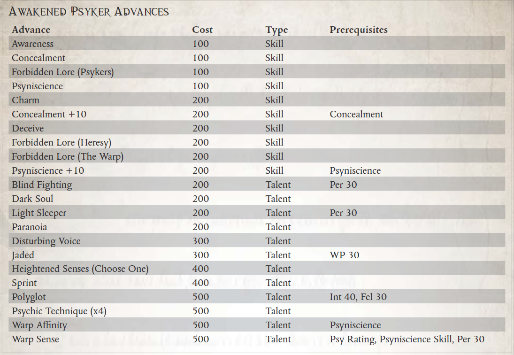
心灵觉醒（天赋）
先决条件：WP 35
这个角色要么是一个未经批准的小灵能者，对周围的人隐藏他的能力，要么是一个完全不知道自己身份的新生灵能者。在任何一种情况下，具有这种天赋的探险家都体验到了一种可怕的新的心灵力量，他必须正视自己的处境，否则就会死去。
角色获得 Psy Rating 1，并使用 ROGUE TRADER 核心规则手册第 157 页表 6-1：Psychic Strength 中的 Renegade Psykers and Sorcerers 部分。如果角色已经拥有心理等级，由于他的起源路径或任何其他原因，他会将他的心理等级提高 1。
当探险者获得该天赋时，他还选择了一个他可以从中学习技术的心灵学科（或其他心灵技术组合，例如第 100 页的叛徒心灵技术），并立即学习一个价值为 200 的心灵技术来自该学科的 xp 或更少（他满足先决条件）。如果有的话，他不会获得那门功法的基本功法。
正常情况下，新领悟的灵能者只能从本书中的叛徒灵能术、星语者灵能学科，以及其他星语者可从《ROGUE TRADER核心规则书》、《INTO THE STORM》等书籍中选择。一旦他选择了一个学科，他只能从该学科购买技术。如果他因为某种原因已经选择了一个精神系，他可以切换到一个新的系，并保留他从旧系中学到的任何技术，但在转换后不能购买任何新的技术。
“是的，这个装置发出邪恶的光芒，是明显的异形构造，是由一个疯狂的星语者在Unbeholden Reaches一个没有名字的世界上发现的，但我相信它是绝对安全的。它显然是某种容器，所以它一定是安全的。我认为它的创造者可能将它用作饮水杯。触摸它？啊，好吧，我不会……”
――Footfall 的 Paul Morgenus，Bonetrader
Koronus Expanse 散落着早已被遗忘的外星种族的骸骨。对于大多数盗贼商人来说，这些废墟充其量只是一种好奇，而在最坏的情况下，帝皇的光芒从科罗诺斯通道溢出并进入广域之前，这些遗迹是一个阴暗的时期。大多数冷交易者以整理被遗忘物种的残骸为生，并将他们发现的小玩意转给卡利西星区无聊的贵族，以换取巨额金钱。当然，有时冷交易者打捞的外星设备和人工制品具有比人们想象的更大的目的和力量，因此会对他们的购买者产生无法预料的后果。可怕的 Halo Artefacts 就是这样被诅咒的物品，而 Koronus Expanse 中许多失落的种族在最无害的包裹中留下了同样邪恶的机器。虽然某些贵族会为任何外星人制造的物品付出高昂的代价，但在帝国内部，有些人甚至说在更远的地方，他们不希望看到这些文物中最危险的一件进入卡利西斯星区。
几十年前，无赖商人 Aaroj Beleroph 代表他的王朝来到科罗努斯广域，并在 Footfall 建立了一个小型贸易办事处。正式地，这个办公室的目的是交易某些原产于科罗努斯广域的生物材料，它确实购买了大量的墓地花、Kerraxin 和 Viperleaf。然而，这个奇怪的无名王朝的某些代表被 Footfall 的冷商知道，他们的商品要求真正高昂的价格――但仅限于某些商品，即那些具有心理共鸣的商品。这样的事情已经非常罕见了，但是对一些外星人工制品的这一特殊特性的新兴趣促使许多人探索如何使用灵能者来寻找这样的设备。针对这些谣言，其他几个 Rogue Trader 王朝也出于类似目的在 Footfall 设立了看似无害的贸易办事处。关于贝勒罗夫王朝寻找心理共鸣装置的原因的传言不绝于耳；有人说他们是与卡拉德瓦尔结盟的混沌崇拜者，而另一些人则声称该组织与 Navis Nobilite、宗教裁判所有联系，或者真正代表了一个名为“Ba'luithe”的神秘外星人。虽然没有人确定新来的贝勒罗夫王朝真正想要这些灵能说服的神器，但其他流氓交易王朝的代表几乎不会因此而在竞争中获得优势。结果，Footfall 以及整个 Koronus Expanse 的灵能协调异形遗物的价格急剧上涨，并且冷商人口中的一群专家已经开始满足对这些人工制品的新需求。
这些被诅咒的设备是所谓的 Bonetraders、商人和盗墓者的主要利益，他们专门从事粗心或恶意前兆留下的具有心理共鸣的物体的交易。对于 Bonetraders，psykers 是业务不可或缺的一部分。只有灵能者才能将有价值的埋藏文物与散布在科罗努斯广域的死亡帝国的碎屑分开。然而，正如任何成功的交易者都知道的那样，信任是一种奢侈品，而且在与那些被亚空间接触的人打交道时尤其昂贵。 Bonetrader 可能需要一个灵能者――或者实际上，许多灵能者――来开展他的业务，但他还必须知道如何处理任何给定的灵能者如果他不小心就可能给他带来的麻烦。除了 Koronus Expanse 的常见危险之外，任何依赖于将灵能者带入潜在危险境地的人都必须准备好清理随之而来的混乱局面。
Bonetraders，无论是通过研究还是痛苦的经验，都将自己掌握在对灵能者“天赋”的了解中，以便更好地利用他们的才能来获利。当仅仅遇到野蛮的拉克戈尔或可怕的不朽的尤瓦斯守护者并不是行星冒险进入坟墓世界的最大风险时，了解你面临的危险是值得的――以及针对你自己的一些对策不可预知的下属近在咫尺。如果 Bonetrader 不只是为了生存，而是为了获利，他必须仔细权衡任何未来的冒险可能会让他付出的王位和鲜血。
所需职业：除 Astropath Transcendent、Navigator 或 Ork Weirdboy 之外的任何职业
替代等级：等级 3 或更高 (10,000 xp)
要求：智力 35，WP 35
其他要求：探索者可能不具备灵能等级或不可触碰的特质，并且在获得此替代职业等级之前，必须至少完成一次灵能活动物品的销售或以其他方式参与包括灵能者在内的商业交易。
好处：探索者获得女巫天赋的利润。

女巫的利润（天赋）
要求：智力 35
探险者擅长与灵能者打交道，无论是在战场上还是作为商业伙伴。
每当探索者完成直接涉及来自船员之外的一个或一组灵能者的奋进时，将利润因子组额外增加 1 点。
思维迷宫（天赋）
要求：WP 40，智力 40
探险者已经将他的智力训练成一个钢铁陷阱，它会在精神存在的最轻微挑衅下迅速关闭。 试图超越他思想界限的灵能者经常发现自己面临着令人困惑的图像和狡猾的心理诡计，使他们筋疲力尽和迷失方向。
探索者可以将他的智力加值加到他必须进行的任何对抗意志力测试中，因为另一个生物的精神力量。 如果他赢得了这次对抗测试，试图篡改他的思想的灵能者会获得一级疲劳。
“有些人天生就是领导者，能够使他人屈服于自己的意志，或者带领他们取得超人的技能和耐力的非凡壮举；对别人来说，总是有仆人的。”
――归因于塞巴斯蒂安・温特斯卡尔
在人类广阔疆域的前沿，生命是廉价的，但劳动力却是溢价的。如果没有广阔的蜂巢世界来提供源源不断的人力资源，那么毫无疑问的仆从劳动在科罗努斯广域内比在帝国本身更有价值。机仆在科罗努斯广域很常见，从简单的无人机在 Rogue Traders 的船只上移动，到搬运货物的劳工单位，再到战斗机仆除了基本的智力之外无法思考或做出反应，这使得它们对探险者的使用有些有限边境。
一些聪明的――有些人会说是愚蠢的――已经找到了绕过这些限制的方法，那些负担得起并且是邪恶的斯特里克西斯的人。这些奇特的人利用他们自己的品种，他们在大桶中种植并交易出价最高的人。除了他们的肉体之外，斯特里西斯人还创造了（或者更可能是拾荒或偷来的）一种用思想控制仆从的方法。只需付出一定的代价，探索者就可以在他的小脑底部植入一个名为“Colchite”的心理大脑激励装置，该装置提供了与经过特殊修改以包含相同异形装置的仆从的简单思维的链接。通过直接控制机仆的行动，几乎任何有足够头脑的人都可以将这些原本简单笨拙的无人机变成自己的虚拟延伸。
尽管许多战士会嘲笑躲在仆人身后并让肉体机器人为他们战斗的想法，但在浩瀚宇宙中还有其他人对这个想法有很大的好处。只要冷交易继续下去，Stryxis 技术就会有现成的市场。
尽管帝国法令禁止使用异种技术，但广域中有许多人很容易绕过这些法律，甚至公开炫耀它们。尽管与 Stryxis 打交道是一种棘手且经常令人沮丧的经历，但他们是这种奇异技术的唯一提供者。确切地说，Stryxis 商家对这项技术的付款要求各不相同，但在 Stryxis 的典型情况下，它永远不会像简单的 Thrones 支付那样简单。
虽然 Stryxis 可以提供必要的植入物，也可以提供现成的仆从和大桶兽（当然要额外付费），但它们实际上无法将心理激励器植入角色中。这需要具有高级医学知识的整形外科医生或其他个人。通常，植入物唯一可见的外部迹象是颅底的小疤痕。
所需职业：任何
替代等级：3 或更高 (10,000 xp)
要求：智力 35，WP 30
其他要求：探索者可能没有不可触碰的特质。探索者必须直接从 Stryxis 贸易商或其他适当的市场（它们被认为非常稀有）获得一个“Colchite”植入物，再加上他希望装备的每个仆从一个，然后进行手术以将设备放置到位。他还必须拥有至少一个可以以这种方式结合的仆从（参见 ROGUE TRADER 核心规则手册第 374-375 页了解各种仆从配置文件或本卷第 108 页了解通灵魔宠的规则，这也可用于生成类似仆从的生物）。
好处：探索者获得策划者特质。
特殊：Stryxis使用的奇怪异种技术具有特殊的残留效果。在极少数情况下，装备了这种技术的机仆在暴露到埃尔达面前时会失控。任何拥有这种植入物的仆从都会获得收益仇恨（灵族）天赋。
 主脑（特质）
主脑（特质）
先决条件：智力 30，WP 30，植入的 Colchite 装置
在他的小脑底部植入了 Stryxis 精神激励器，这个角色可以控制特定的仆从，就好像它们是他自己身体的延伸一样。当主动控制时，机仆使用探索者的 WS 和 BS，并且可以执行可能超出其正常心理能力的更复杂的动作（例如，战斗机仆可以打开一扇门，或者无人机可以捡起一个精致的物体而不破坏它，例如）。
探索者每次获得该天赋时可以控制一名仆从，但仅限于每 10 点智力特性（向上取整）控制一名仆从，最多可控制 5 名仆从。例如，一个智力为 36 的角色一次只能控制 3 个仆从，即使他第四次获得该天赋。
控制范围扩大了 20m x 角色的意志力加成（因此 WP 23 的角色可以控制他的仆从最远 40m）；如果仆从超出最大控制范围或精神链接被破坏（例如由于不可触碰的存在），仆从将恢复其正常程序。只有安装了与角色协调的科尔奇特植入物的仆从才能被控制。
在主动控制一个或多个仆从时，角色必须全神贯注，并且每个回合只能进行半动作。如果角色停止集中注意力或注意力被打断，仆从们只会恢复他们的正常生活，并按照给他们的最后指示
“如果皇帝认为这些生物有必要，我将信守他的话语，用我的刀和我的生命保护它们。但如果他们从他的光芒中坠落，他们比任何混沌渣滓更害怕我。”
- Koric Lex，第四密码守夜的创始人
它始于一位传教士：Koric Lex，他是神皇的终生奉献者，也是他的敌人在科罗努斯广域的祸害。然而，在与人类的敌人进行了一生的战斗之后，尤其是与试图逃往广域的未经批准的灵能者战斗之后，Lex 发现他的信念动摇了。他放下一开始想要用剑为异端赎罪的冲动，转而前往卡利西斯区。据说他是在蜂巢世界闪烁体上找到答案的。传说 Lex 与来自世界溃烂的地下巢穴的天才灵能者陷入了致命的战斗，并且发现自己的信仰再次缺失。
他被灵能者的力量蒙蔽了双眼，跌跌撞撞地穿过恶臭的街道，倒在了一个破碎的基座上。当他醒来时，他发现自己抬头看着被遗忘的小圣人――努梅里四世的神殿――看到祭坛上摇摇欲坠的雕像重新点燃了他的信仰之火。他摆脱了灵能者的诅咒，追踪了他的猎物，然后派异教徒去见帝皇――或者去见他死后等待他的任何命运。然后，Lex 建立了第四密码守夜人，并下令专门监视帝国边缘的灵能者，并确保那些偏离帝皇之光的人以某种方式回到他的怀抱。
Lex 早已死去，但他的遗产永存。守夜人的每个成员都被称为捍卫者――第四密码守夜人中唯一可供任何人使用的军衔。出于一个简单的原因，组织内部没有进步；这些坚忍的人有一个共同的信念，即灵能巫术的必要邪恶使帝国能够运作并保护自己，并且他们的任务是看管这些被诅咒的人，既是牧羊人又是刽子手。 Vigil 的成员寻求简单的生活，正如他们的创始人 Lex 和启发他的圣人所做的那样，有些人甚至放弃自己的名字以换取名称或代号。
对于盗贼商人来说，第四密码的捍卫者是他们船员中的重要成员，在他们围绕科罗努斯广域的漫长航行中，他们始终处于天赋、个性和风险不断变化的泥潭中。造成这种情况的原因有两个――首先，当船员的士气在巨大压力期间受到质疑时，能够在祈祷和战斗中领导他人的个人是无价的。其次，他们是训练有素的反灵能者武器，面对敌人和战友时，他们会毫不畏惧或自责。
这是第四密码捍卫者冷酷、安静的一面。虽然有些人认为他们是那些拥有通灵天赋的人的守护者，但他们也是非常忠诚的杀手，如果有一天他们的监护人不再稳定并因此对其他人构成威胁。这些战士比其他战士更容易在战斗中派遣灵能者，并且是强大的敌人，一旦出现腐败或精神不稳定的迹象，他们就会毫不犹豫或仁慈地攻击。
守夜人部分由前士兵和雇佣兵组成，部分由信仰战士组成，但所有人都因对事业的奉献而团结在一起。很少有人会偏离圣努梅里四世的教义，他在早已被遗忘的过去，在卡利西斯星区的众多世界中传授了他的救赎哲学。第四密码守夜会的成员会得到一本圣徒的著作，内容是在完成训练后将女巫和叛教者送回帝皇的怀抱的正确方法，并且大多数人都会保留这本神圣的书――部分祈祷书和使用种类繁多的武器和其他常用工具“赎回异教徒”的部分说明手册 - 始终放在他们的身上。
所需职业：传教士或大武装分子
替代等级：2 或更高 (7,000 xp)
要求：意志力30。
其他要求：探索者必须花必要的时间开始学习第四密码守夜人的方式，并与该命令的另一名成员一起学习以了解其方式。
好处：探索者获得坚定的救赎天赋。
坚定的救赎（特质）
要求：WP 30
探险者对帝皇的信任让他坚信女巫永远不会逃脱审判或救赎，即使面对压倒性的困难。
当探索者花费一个命运点来重投武器技能、弹道技能或对抗意志力测试来对抗灵能者时，他会在以下结果上加上等于他的意志力加值乘以 5（最多 +30）的加值。重卷。
永恒的警觉（特质）
要求：每 35 岁，偏执狂
探索者深知他的守夜永无止境，随时准备打击那些偏离帝皇之光的人。
每场比赛一次，具有此天赋的探险家可以指定视线内的另一个单一角色作为他的守夜目标。他一次可能只有一个这样的角色以这种方式为目标。
每次遭遇一次，他可以对他的守夜目标进行一个标准攻击动作作为一个反应。他在这次攻击中获得了一次完整动作瞄准动作造成的增益。（参见 ROGUE TRADER 核心规则手册的第 238 页）。
“我们的道路是通往人类未来的道路。我们是它的命运，你太盲目了，看不到它，你的灵魂被教条压得无法睁开真理之眼。只有我们有能力带领我们的种族走向光明！”
---提丰家族的奥尔斯的最后遗言，由审判官舒尔德在 Scintilla 上执行
血统和血统可以追溯到人类历史的阴暗深处，Navis Nobilite 的世袭家族对他们在帝国中的重要地位感到非常自豪。他们通过第三只眼独特地与亚空间联系在一起，这赋予了他们一种人类赖以在广阔黑暗中的光点之间旅行的力量。没有航海者，帝国将永远无法运作。大多数导航员都为自己的天赋感到非常自豪，但尽管许多导航员仍然重视自己的重要性，但有些导航员却对自己在银河系中的位置失去了看法。
Elutrian Confederacy 无疑属于后者。与卡利西斯星区和科罗诺斯广域内的某些航海家有关的命令，这个险恶的组织得名于高哥特语，意思是洗去杂质。尽管各个成员的狂热程度各不相同，但所有人都被这样的想法所吸引，即导航员不仅代表了帝国的重要组成部分，而且实际上是帝皇有意选择的向导，旨在将愚昧的人类群众引向完美。联盟成员撰写了无数的小册子，辩论此事的具体细节，所有这些小册子都被宗教裁判所的奥尔多斯禁止，并被纳维斯-诺比尔特的帕特诺瓦谴责。这种信念也使联盟与 "破晓探索者 "发生了直接冲突。"破晓探索者 "是一个异端组织，围绕着迷幻者以及最终的混沌是人类的命运这一观点而成立，几个世纪前就在斯金蒂拉的贵族中流行起来。由于他们激烈冲突的目标，以及冲突中心的各种咄咄逼人的个性，每个团体都迅速将消灭对方作为优先事项，于是一场由暗杀、尖顶袭击和闪电袭击组成的无声战争开始了。这场冲突在Calixis l区的蜂巢世界之间留下了血腥的阴谋之网，埃卢特里亚联盟和破晓追寻者的方法都变得危险而极端，因为意识形态成了证明私人复仇战争的幌子。
导航员们永远都知道它给每一个人的灵魂带来的危险。因此，那些涌动着经脉之力，甚至作为经脉之力的活通道的普赛克人，在他们的视线中就像熊熊燃烧的火焰一样突出。虽然绝大多数导航员对迷幻者没有特别的兴趣，只是在他们使用自己的力量时给他们一点额外的照顾，但埃鲁特里亚联盟认为迷幻者是对他们为人类寻求的未来的威胁，他们与 "破晓 "的探索者之间几代人的血腥冲突加剧了他们的怨恨。
他们中最忠诚的成员甚至将帝国认可的灵能者视为等待发生的灾难，这些傻瓜会试图掌握 Empyrean 不可言喻的精神错乱，并冒险诅咒自己，更重要的是，诅咒周围的其他人。在此期间，伊卢特联盟的航海者开发了对抗灵能者的技术。
黎明探索者最终被 Ordo Calixis 从 Scintilla 清除，但到那时，Elutrian 同盟对灵能者的不信任已经得到了很好的巩固，因为它的许多最优秀的后裔在与受混沌影响的邪教。然而，尽管他们的敌人被宗教裁判所的特工歼灭，但提丰家族的垮台对伊卢特联盟造成了重大打击。提丰家族被帕特诺瓦宣布为叛徒，伊卢特联盟被镇压，但两个团体的成员都坚持卡利西斯星区的阴暗角落，或者将他们的活动转移到科罗诺斯广域，以避免受到卡利西斯审判庭的迫害――以及其他导航员。
加入艾鲁特联盟的唯一要求是导航基因，但导航者需要有一定的思维定势才能真正选择这条禁忌和阴暗的道路。 Elutrian Confederacy 的个别成员可能或多或少地对灵能者感到反感，这取决于他们参与该组织的具体情况以及他们对导航者代表人类真正命运的信念的强度，但所有人都被教导不信任女巫，即使是那些受到皇帝的批准，有些人试图消除这种“不受控制的威胁”。
所需职业：导航员
替代等级：1 或更高 (5,000 xp)
要求：无
其他要求：探索者必须与埃卢特联盟的成员有过接触，并在获得此替代职业等级之前接受了该命令的教义。
好处：探索者获得无界亚空间作为一种新的导航能力（他可以像任何其他导航能力一样改进它）。
特殊：探索者获得了竞争对手（Astropaths）和敌人（宗教裁判所）天赋。
WARP UNBound（导航电源）
通过直接凝视灵能者的思想，导航者能够刺穿灵能者和亚空间之间的屏障，打开通往九尊的大门，释放出一场风暴，一场混乱，从内部摧毁他的受害者。
新手：导航者在视线范围内选择一个灵能者或恶魔，距离等于他的感知奖励的 3 倍。然后他对目标进行对抗意志力测试。如果他成功了，目标会受到 1d10 点能量伤害，无视护甲和韧性加值。目标在下一轮结束前不得使用束缚级别的心灵技术，再加上导航员赢得对抗测试的每度一轮。单个敌人一次只能遭受一次该异能实例的负面影响。如果导航员拥有包含目标的仇恨天赋，他的对抗意志力测试将获得 +10 加值。
行家：与新手一样，但灵能者在受此异能影响期间也不能在不受束缚的水平上使用心灵技巧。如果导航员拥有包含其目标的仇恨天赋，他的对抗意志力测试将获得额外的 +10 加值（总计 +20）。
大师：按照行家的说法，但这种能力也会影响目标周围数米内的所有其他灵能者和恶魔，相当于导航员的感知奖励。如果导航员拥有包含其目标的仇恨天赋，则将目标因该异能而受到的伤害提高等于导航员的感知加值的数量。
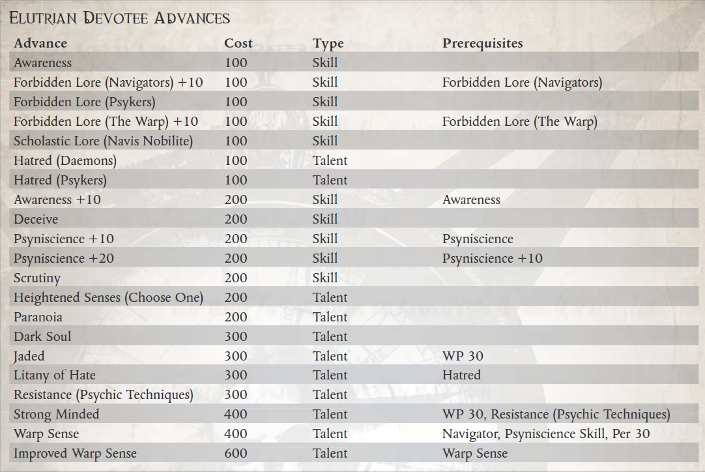
“是的，帝皇保护着……在大口之外，他保护着那些最能保护自己的人。”
――流氓商人戈德里克・乔尔
在险恶的科罗努斯广域，很少有商品比优秀的导航员或星语者更有价值，在边境穿梭的流氓商人不遗余力地保护他们的安全并不少见。 虽然有些人求助于红色学院的导师来提供盲目忠诚的保镖，甚至雇佣 Krooot 雇佣兵来保护他们最宝贵的生命资产，但其他人则倾向于一种更微妙、更确定的方法。 对于那些愿意付出代价的人，Psylakis 兄弟会提供了一个独特的解决方案。
不知道兄弟会第一次出现在Footfall中的确切时间或他们从何而来，但至少两个世纪以来，这个特殊的组织一直在帝皇雕像的阴影下悄悄地开展业务。一些人认为这是一个奉行帝国信条的非正统分支的教派，而另一些人则认为是一个异端邪教，甚至是与毁灭力量结盟的灵能者集团，兄弟会已经
通过提供一种方法来确保他们的导航员和星语者 - 守卫者的安全，对于某些在广域内穿梭的流氓商人来说变得非常宝贵。
兄弟会如何训练守望者的确切方式是鲜为人知的秘密，神秘的仪式通过心灵感应将他们与他们必须守卫的人联系起来。守卫和他们负责保护的人都受到神圣誓言的约束――无论是在圣物上宣誓还是更险恶的东西――不透露 Psylakis 仪式的细节，并且大多数人回避讨论他们之间共享的精神联系。一个莫名其妙但持续不断的谣言在他们身后流传：据说所有 Psylakis 守卫都食用了生长在广域某些世界上的稀有但基本上不起眼的毒蛇叶，他们的许多指控都涉及使用这种药草，咀嚼或放入 lho 棒，以及。这是否是他们的仪式启动的一部分，一种社会惯例，或者仅仅是他们队伍中养成的一种奇怪的习惯，只有守望者才能说。
无论采用何种方法，结果无疑是有效的，并且守望者因其忠诚、顽强的责任感和惊人的保护他们的指控的能力而在整个广域网中备受推崇。声称没有人在 Psylakis Warder 的保护下遭受过非自然死亡的说法无疑是夸大其词，但毫无疑问，兄弟会提供了一些金钱可以买到的最好的安全保障。对于许多 Rogue Traders，更不用说他们的 Astropaths 和 Navigators，这样的投资值得每一个 Throne Gelt。
虽然对潜在守卫的培训和训练是漫长而艰巨的，而且对成功候选人的要求会持续一生，但兄弟会并不缺乏志愿者。成为一名守望者被许多 Footfall 的受压迫者视为通往更美好生活的必经之路。对于其他人来说，这是对他们的技能和决心的考验，是证明他们值得加入少数被选中的人的机会，以保护广域中一些最重要的人。
Psylakis 兄弟会的候选人必须符合某些身体和心理标准，并在兄弟会的大院内接受强化训练和指导。许多人在外人看来完全武断的理由被认为是不够的，这些战士中的大多数继续加入广域网的其他雇佣兵公司或在 Rogue Trader 船上担任安全部队。
那些不洗掉的人可能会继续训练数月甚至数年，磨练他们的技能和感官，直到他们被认为准备好。一旦候选人最终完成培训，潜在的守望者就会被匹配到一项指控，并且两人都经历了秘密仪式，将他们的心灵与死亡联系起来――有些人甚至声称，甚至更远。
所需职业：除导航员、Astropath 或 Ork 之外的任何职业
替代等级：等级 4 或更高 (13,000 xp)
要求：Ag 40，每 35
其他要求：探索者可能没有心理评级或不可触碰的特质。探险者必须接受过 Psylakis 兄弟会的训练，并且必须经历过他们的秘密仪式，这些仪式在守望者和他的冲锋之间建立了精神联系。
好处：探索者获得心灵联结特性。

心灵相通（特质）
先决条件：Ag 40，每 35
当一名守卫和他的负责人经历 Psylakis 仪式时，每个人的思想都会永远与另一个人的思想联系在一起。虽然不是直接的心灵感应链接，允许复杂的口头交流，但守望者和他的负责人不断地意识到对方的存在，以及对方感受到的任何强烈情绪。如果他们在彼此之间的 1 公里 x 看守者的感知奖励之内，守望者就会准确地知道他所照顾的灵能者的位置，并且他可以感知他的冲锋的存在以及最远 1,000 公里以外的一般相对位置。此外，当对受保护的灵能者使用通灵术时，将守护者的意志力加值和感知加值的总和加到灵能者的对抗测试的结果中；守卫也可以将受保护灵能者的意志力和感知奖励的总和加到对抗测试中，以抵抗针对他的心灵攻击。如果守卫和他的冲锋之间的心灵感应连接意外中断（例如死亡或贱民的存在），两者都必须通过挑战（+0）意志力测试或立即遭受 1d5 疲劳。如果其中一人死亡，幸存者会因反冲而遭受 1d10 点精神错乱；如果一个人死于暴力，幸存者将遭受 2d10 点精神错乱值
“我看到了很多东西，大人。 我看到你最近吃过 Krootox，你保镖的等离子手枪中的电荷已经耗尽了一半，我看到我们即将有同伴……有一个人蹲在我们上方大约十米处，相信自己藏在身后 全息屏幕。”
――默默无闻的守望者西弗勒斯
黄昏目击者，有时也被称为默默无闻的观察者，是卡利西斯星区和科罗努斯广域内的一群星语者，他们目前的名声和恶名在很大程度上归功于他们与哈洛克流氓商人王朝的黑暗遗产的联系。几个世纪以来，哈洛克家族一直困扰着卡利西斯星区，这个堕落家族的许多作品和盟友都被玷污了黑暗的名声。为哈洛克斯服务的星语者也不例外，这是一个特别有宗族和超然的群体，珍视许多复杂的传统。
黄昏见证人将这些传统从他们保存了几个世纪的零散记录集合中提取出来，并装订成一本名为盲人颂歌的大部头。根据这本书，黄昏见证人是由一位名叫奥尔丁・克莱因的强大星语者创立的，为伟大的所罗门・哈洛克服务。克莱恩神秘的朝圣黄昏的黄昏世界，得到了幻象。虽然他不愿说出他所看到的，但他很快就开始在他周围聚集其他星语者，并在这次悲惨的经历之后教他们自己的方式。黄昏目击者在卡利西斯区受到了一定程度的宗教审查，其中一些异端审判庭中的一些人声称他们是一个异端邪教，而另一些人则不太相信。臭名昭著的激进分子赫特什・凯恩（Hettesh Kane）在 793.M41 中发表了一项关于他们秩序的研究，描述了他的理论，即他们是所罗门・哈洛克（Solomon Haarlock）试图通过时间和空间发送星体心灵感应信息来联系过去或未来的实验。这一理论遭到了审判官 Vownus Kade 的激烈争论，他的详细反诉（在 Tricorn Palace 的 ((Redacted]] 层级数据堆栈 ((Redacted]]) 中存档）解释说，黄昏目击者实际上是在学习方法发送――并以某种方式接收――来自死者的信息。
争议导致首席星语者肖在 799.M41 决定正式谴责黄昏见证者，使他们在更大的卡利西斯星区帝国结构中非常不受欢迎。从那以后，骑士团的许多成员慢慢地进入了克罗努斯广域，经常获得流氓商人的赞助以寻求优势。有传言说，狂暴的商人 Aoife Armengarde 已经批准了他们的一些命令，据说她已经将其中一些人带到了遥远的萨尔戈斯区。
在外观上，黄昏证人与任何其他星语者几乎没有什么不同――有一个明显的例外。默默无闻的守望者用与他们的肉体基因结合的华丽金属板来隐藏他们空洞的眼窝（有时甚至是他们的整个脸）。这些盘子上通常刻有天鹰座和他们所服务的 Rogue Trader（或其他赞助人，包括，有人说，某些审判官）的徽章。
然而，尽管外观不起眼，黄昏见证人经常脱颖而出，即使在其他星语者中也是如此。仅仅在黄昏见证人面前可能会让那些了解他们被遗弃身份的后果的人感到不安。仅出于这个原因，一些盗贼商人将他们添加到他们的随行人员中，作为他们有能力在帝国边界之外炫耀自己的权威的一个例子，而另一些人则小心翼翼地避开这些命运多舛的人。
除了该组织的神秘起源之外，黄昏见证人和任何其他星语者之间的区别在于训练、能力和专注力。即，将一个人的精神能力集中在看不见的地方。作为这个受迫害组织的一部分，默默无闻的观察者在一些地方面临着一系列危险的谣言、假设和公然的敌意，即使是像科罗努斯广域这样狂野和混乱的地方。
幸运的是，黄昏见证人的超凡能力非常强大，他很可能会发现自己从 Kasballica 等组织一直到 Aspyce Chorda 等享有盛誉的 Rogue Traders 都有很高的需求。至少，黄昏的见证是一种新奇事物，几乎在所有关于 Footfall 的公司中都会引起各种讨论和猜测。
自然，黄昏见证人的教养和冷漠的本性很可能使他们对他人产生怀疑并缓慢信任。黄昏的目击者很少分享他们内心深处的疑虑、想法或感受，除非与他们真正感受到强烈联系的人。在他的一生中别无选择，默默无闻的守望者倾向于陶醉于与流氓商人的联系并超越帝国统治。它提供了一种他们很少放纵的自由感。
所需职业：超越星语者
替代等级：1 或更高 (5,000 xp)
要求：智力40
其他要求：探索者必须与黄昏见证者有过往来，并在选择此替代职业等级之前接受过他们的教团培训。
特殊：探索者获得盲斗、黑暗灵魂、对手（星语者）、对手（审判）和敌人（星语者）天赋。
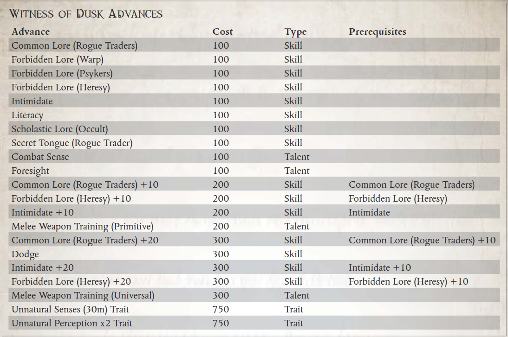
“哦，别介意杀戮之喉，只要你不看他，他就完全无害――哦，天哪，我们又来了……”
――传教士 Speraza，在宣布 Astron VII 的改造“充分完成”之前不久
Koronus Expanse 是各种奇怪而致命的生物的家园，从 Burnscou 的致命野兽到 Klaen's Gate 的奇怪而空灵的生物。考虑到善于操纵环境的智能物种的倾向，出于某种原因，不可避免地有人试图驯化这些生物中的许多。虽然想成为驯兽师的人并不总是成功（仅在伯恩斯库尔就以这种方式死去的人数几乎令人难以置信），但可以训练一些动物来执行某些任务。其中最简单的包括充当守卫生物，有些物种甚至可以学习奇异的任务，例如种植监听设备或偷窃特定物品。传教士独自在广域旅行，但几乎所有的传教士都带着武器旅行，有些人选择用可以保护他们的守望生物武装自己，警告他们危险，或者按照帝皇的意愿协助他们完成任务。在帝国边界之外的荒野中，一个忠诚的、毫无疑问的盟友常常意味着生与死之间的差异，这令人毛骨悚然。鉴于他们偏爱成为色彩缤纷的角色 Rogue Traders，他们也经常发现异国情调的野兽陪伴他们，利用这些奇怪的生物来打动（或恐吓）贸易联系人、经济竞争对手以及他们碰巧与之互动的任何其他人。
为了训练一个生物，兽王需要找到一个既能接受训练，又能训练自己的生物。有很多方法可以让一个人走上兽王的道路，其中一些比其他的更自然。卡利西斯贵族的大家族的惯例是让动物和野生动物作为同伴，而那些与贵族共度时光的人往往是他们传统和文化的模仿者。还有一些人有驯服和控制生物的实际经验，例如在他们的家乡进行狩猎。有些人甚至可能从过去与邪恶而声名狼藉的野兽屋的交易中获得了他们的技能，这个阴暗的犯罪组织满足了卡利西斯区对凶猛的斗斗生物永无止境的胃口
无论他们接受何种不同的角色训练，许多兽王都有几个共同特征――耐心地教导他们的生物如何响应他们的命令并执行他们指定的任务，以及希望看到这些生物以某种方式发展。当然，兽王可能会选择通过养育或暴力来实现这一点，并且可能会这样做，以期创造一种尖牙恐怖，将他的敌人撕成碎片，就像看到一个年轻的生物成长和发育一样。虽然大多数兽王对他们的野兽有某种形式的爱或至少是尊重，但情况并非总是如此。许多是关于从字面上咬掉喂食它们的手的生物的故事（通常紧随其后的是身体的其余部分）。
就连广袤无垠的一些外星生物也已在一定程度上被驯服。在 Footfall 和 Port Wander 中，人们会定期听到关于 Rogue Traders 恐吓商业伙伴与驯服的有爪巨兽或 Astropaths 交易的故事，他们使用一小群看起来无害的翼松鼠作为间谍。当然，许多这些故事充其量只是幻想。兽王有时会对自己的能力过于自信，而这种狂妄自大的结果往往是惊人的（如果不是立即致命的话）。与致命的野兽打交道时，鲁莽和虚张声势可能是致命的缺陷。此外，有些生物是完全不可能训练的，无论是由于根深蒂固的性情还是险恶的兽性智慧。
外星兽王有时会进入盗贼商人的随从。兽人经常以繁殖最大、最卑鄙的史古格而自豪，而克鲁特可能会利用克鲁特猎犬来协助狩猎。一名黑暗灵族登上 Rogue Trader 的船只，可能会在 Commorragh 的角斗场中饲养一只或多只奇怪的、卑鄙的战斗野兽
兽王不仅是那些偏爱外来宠物的人，而且是那些在训练和指挥各种生物方面拥有真正天赋的人。一些兽王对他们的冲锋产生了真正的尊重，而另一些则仅仅通过恐惧来统治他们野兽般的下属。作为回报，受过训练的野兽可以提供任何东西，从锋利的下巴到灵活的手指来保持感官
所需职业：任何探险家
替代等级：3 或更高 (10,000 xp)
要求：敏捷35，智力35
其他要求：这位探险家必须在过去驯服过野生动物（在此过程中没有受到致命伤害）。

在哪里可以找到生物
ROGUE TRADER 核心规则手册包含 Grapplehawk，一种增强的控制论鸟类（参见 ROGUE TRADER 核心规则手册的第 375 页）。如果游戏大师希望使用其他补充品，KORONUS BESTIARY 包含大量来自广域的致命生物，其中许多适合有进取心的兽王。当然，游戏大师总是对什么拥有最终决定权――而且极其狡猾和任性的生物，如不灭的 Vaporius、Medusae 和基因窃取者根本无法控制（并且几乎肯定会立即杀死任何愚蠢到尝试的人）！玩家应该与游戏大师一起寻找合适的生物。
新天赋：野兽小兵
先决条件：争吵
这位探险家获得了一个野兽仆从，形式为一些与他的意志相结合的网络生物或他用争吵技能驯服的野兽。该生物遵循他的基本命令，并在战斗中的每个回合后立即进行回合。
如果他不知何故失去了这个生物，由于它的过早死亡或另一个不幸的分离，他可以在花费适当的时间安排替换它（或哀悼它的丢失）后，由游戏管理员自行决定获得一个新的。
新天赋：协同打击
先决条件：争吵+10，野兽仆从
探险者和他的野蛮冲锋致命地一致行动，努力为对方提供在战斗中利用的机会和机会。无论是成群结队地猎杀他们的猎物，还是为彼此创造空缺，两人都可以将他们的攻击与训练有素的杀伤力同步。
作为一个反应，在远程或近战攻击命中后，这个探险者可以进行一次挑战 (+0) 角力测试。如果他成功了，他获得的一个拥有野兽随从天赋的生物在下一个针对该目标的攻击行动中获得 +20 加值，直到其下一回合结束。
“在猎杀女巫时，信仰是你武器库中最强大的武器。不过，火焰喷射器也有帮助。”
-Araska Soli，赏金猎人
哪里有人类，哪里就有灵能者。无论是在 Scintilla 上的 Hive Sibellus 中心还是在 Lucin's Breath 的冰冷死水中搜索，这都是正确的。人类帝国在控制灵能者方面付出了极大的努力，黑船舰队不断地在银河系中穿梭，吞噬了无数来自人类世界的灵能者。然而，在帝国控制不严的地方，黑暗力量的涉猎者和流氓灵能者迅速出现。有时他们会提供他们的才能以换取金钱回报，而在其他地方，他们会利用他们来统治当地人口。有些人甚至去追求危险的亚空间实体，这些实体不仅对人类的生命构成可怕的威胁，而且对他不朽的灵魂构成了可怕的威胁。
在这些遥远的地方，诸如 Koronus Expanse、Adeptus Astra Telepathica 的黑船之类的地方很少会使任何世界的天空变暗。因此，由每个单独的世界、前哨站和船员来管理灵能者带来的风险。不这样做会迅速引发灾难。未经批准的灵能者可以随时撕开现实本身，将附近的所有人拖入地狱般的亚空间，或者释放出超出理智允许范围的其他恐怖。考虑到这些风险，许多船长、殖民监督者和其他有知识和手段的人安排他们的领地由受过寻找灵能者训练的个人搜索――无论这些女巫的寻找者是否合法地学会了他们的手艺。简而言之，猎巫者是任何具有寻找灵能者的技能和倾向的人，并涵盖那些猎杀如此危险的采石场的人，无论他们的个人动机或愿望是什么。
尽管许多即兴的猎巫以熊熊燃烧的火堆和无数黑色的尸体告终，但有些人在压制灵能者时更喜欢采取更微妙的方法。因此，一些在科罗努斯广域发现女巫的专家以他们操作的微妙而闻名，甚至以能够活捉大部分猎物而闻名。其中一些女巫发现者将他们捕获的灵能者放置在静止棺材中并运送它们进行处理。其他人则将他们的目标囚禁在受保护的房间内，一直为这些可恶的异教徒的灵魂祈祷。而且，当然，许多巫师发现者从他们收集的灵能者身上获利，将它们卖给有兴趣的买家，这些买家野心勃勃或愚蠢到渴望获得未经批准的灵能者的能力。由于没有针对此类人员的标准，因此每个人都以不同的方式运作。不同的巫师发现者以不同的方式集中他们的才能；有些人只关注金钱收益或个人进步，而另一些人则出于对个人、组织或理想的忠诚而采取行动。一些 Witch Finders 是由有权势的人赞助的，例如出现在 Expanse 中的一名流氓商人。其他团体，例如宗教崇拜、犯罪团伙，甚至贵族家族有时也会寻求猎巫者的服务，但取决于个人猎巫者的动机，这种进步可能不会受到欢迎。那些出于虔诚和责任感而服务的人通常不太愿意将被俘的灵能者交给阴暗的贵族，而那些将这项任务仅仅视为利润来源的人则不太可能应身无分文的邪教的要求而服务，不管怎样他们的工作所获得的精神回报可能是多么巨大。
传教士偶尔会雇用属于这一广泛类别的人员，尤其是在抵达怀疑有异常灵能者人口的世界时。一些对这些事情特别敏锐的传教士甚至可以说自己是巫师发现者，尽管他们使用这些技能来推动将世界转变为帝国信条的事业。
巫师寻找者与灵能者战斗的经验（无论是来自专注的训练还是仅仅来自对抗灵能敌人的生存）使得这些人在科罗努斯广域特别有价值，那里除了流氓人类灵能者之外还有灵能威胁。从 Eldar Farseers 到不可预测的 Ork Weirdboyz，通灵异形可能非常危险。即使他们并不过分担心自己船上人口中的灵能者，一些盗贼商人也会雇佣可能被视为女巫发现者的人，作为应对此类特殊威胁的应急措施。
对抗亚空间生物的邪恶存在并抵抗灵能者的腐蚀影响，需要强大的精神毅力储备。这不是一条人人都适合的道路，因为它需要自律和钢铁般的意志以及高强度的训练，以磨练使战士能够同时兼顾身心的技能。 Witch Finder 的生活并不轻松，尽管回报可能很大――取决于 Witch Finder 的个人动机。对一些人来说，这项工作本身可能是神圣的，可以帮助他们在来世登上圣座，而对另一些人来说，这可能是保护他们认为重要的群体或理想的一种手段。对于一些特别厌倦的人来说，这条险恶的道路可能只不过是一种残酷的生计。
所需职业：任何非 Psyker 探险家
替代等级：3 或更高 (10,000 xp)
要求：感知 40
其他要求：此Explorer 必须使用非致命方法非致命方法至少击败一名敌对灵能者或一名敌对灵能使用者。

新天赋：思维导图
先决条件：精神科学
探险者已经磨练了他对女巫邪恶痕迹的思考，并拥有一种超自然的能力来探测灵能者和亚空间实体的影响。
这个探索者可以花费一个命运点来自动通过心理科学测试，其成功度数等于他的感知奖励。
“烈士的鲜血是帝国的种子，如果我们不能收获他们付出生命和流血播种的利润，那无异于背叛。”
――拉斯隆・怀特耶，虔诚的总管
帝国是精神奉献的堡垒，具有多种形式，经常相互融合、转移或宣战。尽管所有合法的信仰（在国教眼中）至少与皇帝的神性有共同之处，但它们在许多方面存在分歧。假期、禁食、公认的圣徒和其他神圣人物，甚至诸如服装面料的合适种类等问题都可能是来自两个不同世界的个人之间激烈争论的问题。
值得庆幸的是，在更大的帝国信条中还有许多其他共同的教义，大多数信徒可以广泛同意。同意某些人物具有精神意义（塞巴斯蒂安・托尔和原体），清除那些被认为是异端（火）的人的首选方法和对圣物的崇拜都是普遍接受的做法。特别是，当涉及到文物时，可能会出现一系列全新的问题，因为经常引入真实性、相关性和重要性的问题。很少有学者会怀疑伟大的圣吉列斯金色头发的神圣性，但又有多少学者会接受 Quivvar Nog 的断脚呢？通常围绕这些问题的辩论可能需要数年，有时甚至是数百年才能解决。
在 Koronus Expanse 中，通常由 Reliquarists 来确定由 Rogue Traders、商人和其他不那么有品味的人在这些狂野星辰之间行走时发现的无数文物的合法性。这些顽强的冒险家和学者经常被发现钻研古代书籍，以发现圣人丢失的颚骨的位置，或者与外星神庙的中心作战，以找回数千年前的帝国十字军东征的象征。
盗贼商人的许多同事，甚至一些盗贼商人自己，都获得了使他们在职业生涯中成为圣物收藏者的知识，因为他们相对更频繁地接触到奇怪的、未识别的技术和人工制品。
对于圣物收藏家来说，抓住机会处理和保存一段神圣的帝国历史通常是足够的回报，但获得这种专业知识的背后可能还有其他动机。有些人可能秘密地属于诸如古尔迪亚人之类的邪教，他们希望将这些圣物保存在他们的秘密金库中，而另一些人可能只是与黑社会市场结盟的博学罪犯。许多卡利西斯贵族无疑通过将他碰巧“恢复”的遗物赠送给他们，得到了国教的认可。当然，这些物品也经常被私人收藏，远离当局的窥探。其他圣物收藏家对传教士 Jollus Marquette 的生活特别感兴趣，他在漫长而富有成效的一生中发现了无数具有难以置信价值的遗物。非官方和秘密的命令，如被背叛的教会和十二刀仍然继续马凯特秘密搜索科格纳修斯墓，他们在各个层面都参与了阴谋，因为他们悄悄地寻找这个被认为是失落的技术和帝国神圣遗物的聚宝盆信条
如果想要成功，圣物收藏家不能仅仅依靠他们对传说、传说和礼仪的了解，因为他们还必须能够评估与他们打交道的人的意图，并经常从不稳定的困境中解脱出来。
盗贼商人随从的安全通常是圣物收藏家的理想位置，因为它可以提供一定程度的保护，同时也有利于盗贼商人，尤其是那些更虔诚的人。外星世界的战利品在本质上并不总是外星人，它一定会温暖星际传教士的心，有一天，如果他们的下一次安置是他们的最后一次安置，他们缩小的头可能会被取回并受到适当的尊敬。
Reliquarist 的生活是一种（有时是过时的）虔诚与冒险的混合，因为找回被认为已丢失或被帝国敌人持有的遗物的任务可能充满精神和物质上的危险。它通常需要数小时的勤奋学习，尽管这些时期通常会被突如其来的活动打断，此时所有的赢或输都不是通过对圣徒传记的深入了解，而是通过冷静的智慧和知道什么时候出现麻烦的能力开始。一个圣物收藏家的生活可能不一定是名声和荣耀，但它最终可以以自己的方式得到满足，无论奖励来自黑社会账本还是来自 Adeptus Ministorum 官员的祝福。
所需职业：盗贼商人、探险家、传教士、总管或虚空大师
替代等级：1 或更高 (5,000 xp)
要求：智力40
其他要求：这位探险家必须至少发现了一件遗失的遗物，研究了它的起源，并确定了它在《帝国信条》的传说中的地位。

新天赋：敏锐的眼光
先决条件：智力 40，评估 +10
Explorer 具有无与伦比的能力，可以从其成型中的每一行或框架中的凹痕中读取项目的历史。如果关于给定的对象或人工制品有什么值得了解的，这个 Explorer 可以找到它。
这个探险家可以花费一个命运点来自动通过任何评估测试，其成功度数等于他的智力奖励。每当他以这种方式花费一个命运点时，他也可以通过自己的相关知识，隐藏在物品本身的线索或迹象，或者游戏大师的判断力的其他来源，获得对物品历史的某种形式的洞察力。
“她不会放弃，在金王座前，我们也不会！”
――赛斯神父，赛斯的领袖，第 17 次神圣光辉代表团前往 Vaporius 的领袖
Koronus Expanse 是一个无情和严酷的地方，苦难和不公正盛行。殖民者通常认为灾难会发生，而很少考虑受影响的人。饥荒、瘟疫、亚空间风暴和游荡的海盗团伙都可能毫无预兆地袭击，其中任何一种都可能对社区造成毁灭性打击。值得庆幸的是，有一些勇敢的团体会利用他们的专业知识和有限的资源提供帮助。
Aleynikov 的追随者就是这样一支组织松散的巡回传教士团体，他们继续传播着名传教士 Nadine Aleynikov 的信息。虽然她走了，但她简单的信念和成功的影响了她接触的这么多人，使她成为了许多人的英雄。尽管该地区腐败的贵族尽了最大的努力，但她成功地振兴了马尔莫尔系统的信仰，使她在该地区的宗教史上获得了永久的地位。她为消灭最终夺去她生命的瘟疫而进行的最后审判的故事对许多帝国信条的信徒具有相当大的象征意义。在浩瀚无垠、卡利西斯星区甚至更远的地方，她的名字是面对无懈可击的困难时信念和毅力的代名词。尽管不虔诚的人可能会质疑她的性格判断力和看似古怪的方法，但对于许多人来说，她仍然是希望和灵感的闪亮灯塔。
追随者的起源尚不清楚，通常情况下，归因于几个原因；空间站的幸存者，据说是他们的守护神的坟墓，她的灵感追随者，或者甚至是阿列尼科夫在她过早死亡的情况下秘密组织了追随者（根据她的历史准备记录，这似乎不太可能） .无论他们的起源如何，阿列尼科夫的信徒现在都是克罗诺斯传教圈的一个被接受的部分，即使他们没有被官方的部长令完全接受。有人说，他们获得认可只是时间问题，而另一些人则想知道，国教高层是否甚至听说过从这样一个非正统人物身上汲取灵感的边缘教派。
在他们的方法论中，追随者试图效仿阿列尼科夫的方法和动机。拥有足够的知识以自给自足是至关重要的；因此，这些人经常寻求提高他们的田野和医学知识，通过研究知识库和遥远的世界等来磨练他们的技能。追随者的目标是使自己对他们的潜在皈依者尽可能有用，因此他们通常拥有广泛的技能基础，这可能与科罗努斯广域的许多人类文化有关。
他们还不断地寻找致命的疾病进行分类，时刻注意阿列尼科夫本人的命运。无论瘟疫和其他此类灾难发生在哪里，信徒都会聚集在一起帮助受灾者。许多人保存了他们遇到的新疾病的大量目录，并在他们遇到的罕见场合与他们的同伴分享。不幸的是，由于追随者采用了半随机的旅行性质，这些会议可能很少而且相隔甚远。关于如何对抗瘟疫的重要信息可能不会报告给最需要它的人，因为个人成员的道路从未碰巧交叉。这样的问题被认为是对皇帝的考验，应该像纳丁接受她的艰辛一样由衷地接受。
追随者的另一个共同特征是对盗贼商人的健康怀疑，即使有时不是完全不信任。虽然它们通常是整个浩瀚宇宙中最有可能的交通工具，但阿伽门农昆图斯的命运很少远离追随者在寻求交通工具时的想法。有些人积极地试图颠覆 Rogue Traders，将他们的整个品种视为对人类的诅咒。就像 Aleynikov 所做的那样，他们让船员们支持他们的事业，但并不总是带着如此纯粹的意图。毕竟，剥夺一个盗贼商人的足够船员严重损害了他的船的效率。
虽然在许多情况下缺乏方向可能是一个障碍，但对于阿列尼科夫的追随者来说，这实际上是一个福音。他们的生活有意义，不受特定规则和规定的限制，灵感来自 Nadine Aleynikov 一生中的功绩故事。一些追随者可能会更专注于一个研究或服务领域而不是另一个领域，因为他们的情况决定了，但他们都有传播帝国信仰的决心。
所需职业：任何人类探险家
替代等级：1 或更高 (5,000 xp)
要求：友谊35，意志力35
其他要求：这位探险家必须花时间研究 Nadine Aleynikov 的教义，并为科罗努斯广域的受难者服务。

新天赋：信心疗愈
先决条件：Medicae，纯信仰
这位探险家的神圣热情激发了他所有盟友的信心和信任。即使在最艰难的时期，他也像帝皇之光的灯塔一样屹立不倒。
每当这位探险家成功地移除一名拥有医疗技能的盟友的伤害时，该盟友在遭遇战结束前进行的下一次测试中，以这种方式移除的每一点伤害都会获得 +5 加值（最多 +30）。
“战争本身就是一种崇拜。就像火可以净化铁一样，战斗可以净化灵魂。”
――圣洁者基尔 血泪之纯净
在传教士吉纳维芙・阿尔梅斯在被称为“祸星”的恶魔世界的战斗中阵亡前不久，她在严酷的洛雷塔星球上进行了一次精神撤退。在旅途中，她遇到了当地人，他们遵循自己的帝国信条。阿尔梅斯在她离开之前点燃了这种信仰的火焰，将她虔诚的形象烙印在洛雷坦人的记忆中。
在她被她的最终敌人恶魔加什格拉兹克杀死后，阿尔梅斯的追随者从祸星号上撤退，并乘坐一艘受损的船只一瘸一拐地回到洛雷塔。尽管传教士的尸体在恶魔世界中消失了，但她的追随者设法获得了她用来杀死最后一个对手的武器，以及她曾经拥有的一些其他文物。她最虔诚的门徒选择留在洛雷塔。在那里，通过虔诚的表现，他们赢得了当地人的帮助，建造了一座献给堕落传教士的堡垒寺庙。
Genevieve Almace 最初的追随者大多早已死去，但在她去世后的几个世纪里，这座神圣的堡垒已成为洛雷坦人的主要圣地。这个世界的氏族定期朝圣，以崇拜堕落的传教士，而她的战团成员的后代仍然居住在寺庙中，保护着里面的遗物免受外人侵害。这个被称为血泪的非官方组织通过完善武术致力于虔诚，其成员狂热而无情。
血泪宗之中。一组特别值得注意。虽然大多数保护神殿的武士修道者都花时间在不断地向皇帝祈祷战争和为神殿的遗物守夜，但所谓的红色奉献者的任务是穿越洛雷塔地表和更远的地方。他们的任务是在人群中寻找变种人、异教徒和女巫，向他们证明他们不可动摇的虔诚和不屈不挠的实力。这些致命的勇士中的一些人甚至将他们孤独的十字军带到了洛雷塔的边界之外，前往遥远的世界追随他们如此崇敬的传教士的脚步。
红色奉献者将战斗视为信仰的表达，并将冲突视为磨砺人类成为帝皇有价值的工具的磨刀石。鉴于这种哲学，红色奉献者经常将自己一头扎进他们遇到的冲突中，确信他们施加的暴力是其自身的正当理由，并且皇帝会引导他们选择正确的一方。当然，许多邪教个体成员的做法更为务实，因为每个人都有独特的动机走上虔诚的战斗之路。
在战场上，红色奉献者通常以身作则，颂扬他们的追随者或盟友，像他们一样打击人类可恨的敌人：没有恐惧、怀疑或犹豫。在不太暴力的情况下，红色奉献者建议在大多数事情上做好准备、培训和纪律。特别虔诚的盗贼商人偶尔会与一名或多名流浪的战争牧师结伴，尽管这样做会带来风险。该教团绝不会得到 Adeptus Ministorum 的批准，虽然其成员的行为并不被视为异端，但他们的存在有时会冒着模糊帝国信条真正代表与俗人之间界限的风险。在 Koronus Expanse，这样的冲突很少见――但它们也可能非常暴力，这取决于碰巧涉及的个人。
大多数红色奉献者是洛雷塔的当地人，他们在那里的神殿堡垒中过着残酷的虔诚生活。然而，一些外星人在访问了洛雷塔并与占据它的战士苦修者一起训练后，已经接受了红色奉献者的誓言。这些外来者必须首先向组成血泪的狂热分子证明自己，在与教派冠军的决斗中获胜，以证明他们的奉献精神和价值。
所需职业：除探索者、天文学家和导航者外的任何人类探险家
替代等级：1 或更高 (5,000 xp)
要求：武器技能35，友谊35
其他要求：这位探险家必须有机会在洛雷塔（或他们的一名流浪助手，红色奉献者）上与血泪一起训练。
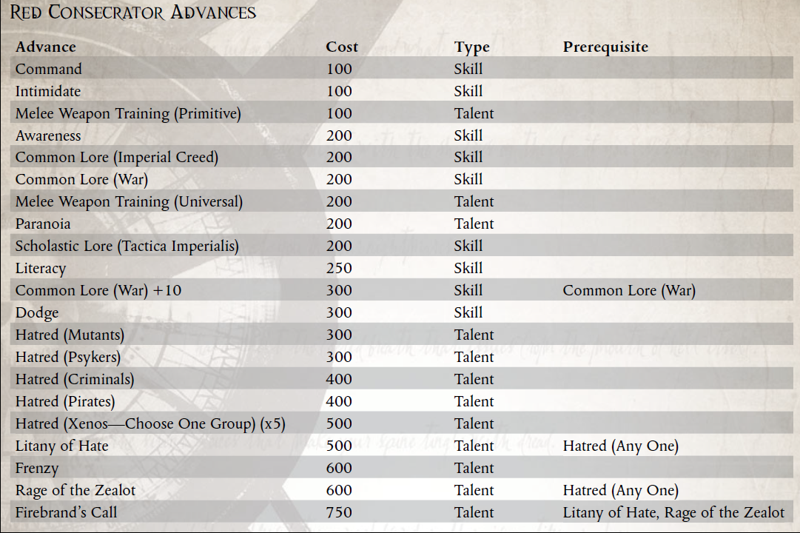
新天赋：狂热者之怒
先决条件：仇恨（任意一项）
这位探险家是一位拥有无限战斗狂怒的战士，他以毫不掩饰、发自内心的热情杀死了他憎恨的敌人。
当以近战攻击对包含在他的仇恨天赋中的一个天赋组中的敌人造成伤害时，这个探索者会在 9 或 10 的结果中引发正义之怒。
新天赋：火品牌的召唤
先决条件：仇恨连篇，狂热者之怒
在战斗中，这位探险家是帝皇愤怒的熊熊烈火，他在痛击人类的敌人的同时大喊可怕的憎恶之言，以激励他的盟友采取越来越大的暴力行动。
每当这位探险家对敌人施加正义之怒时，他可以花费一个命运点并进行一次挑战 (+0) 联谊测试。如果他成功，30 米内的盟友在攻击该敌人时会受到等于他的友谊奖励的额外伤害，直到探索者的下一回合开始。
“肉体的劳作和精神的劳作，只因透视的错觉而分不开。”
――第四节，第七章，尼科梅德斯・基夫的教诲
Nicomedes Keefe 对在 Foulstone 建立与世隔绝的社会至关重要，该社会后来以他的名字命名为“锤子勋章”。尽管他最初担心这些奉献者以及他们对 Koronus Expanse 的孤立信仰，但他多次重访这个世界，多年来居住在那里的隐士给了他相当大的支持。基夫在他们共同的 Lux Salvationis 航行中向苦行者展示的农业方法允许其居民生产略高于维持生计的水平，他们不请自来地给他施舍以支持他在其他世界的努力。一些隐士甚至与基夫一起执行他的任务，从这些旅程中带回新兵作为苦行者。
Foulstone 的隐士们以他们的热情好客而自豪，他们认为这是 Nicomedes Keefe 本人通过他的行为所宣扬的美德之一。这些苦行者大多满足于生活
虔诚的劳动者，在他们的星球上生死存亡，偶尔会为访问他们避难所的旅行者提供帮助，从流氓商人到传教士再到朝圣者。通过在科罗努斯广域这个无情的领域为旅行者提供这个避难所，锤子骑士团相信他们可以回报基夫很久以前提供的帮助，使帝国能够进军以转变新的世界并获得新的资源。
然而，这个松散团体的一些成员认为，他们必须做更多的事情，离开 Foulstone 世界，追随教团崇敬的传教士的脚步。这些人通常不是传教士，也不是任何形式的教会权威，因此，他们并没有改变新的世界，而是专注于利用尼科梅德斯・基夫向他们的祖先传授的知识，即新帝国殖民地在广域网的重要性。这些“锤子勋章”的流动成员通过基夫曾经挥舞并留在 Foulstone 上的动力锤子的符号来识别自己。他们相信应用知识是忠实崇拜的关键，他们冒险到遥远的地方用他们的智慧帮助人类帝国的扩张。考虑到他们的流动生活方式和科罗努斯广域的严酷生活现实，这个群体的长期生存者往往是坚强和足智多谋的。许多人还拥有一定程度的武力，因为浩瀚的野蛮需要这种技能。
随着许多盗贼商人活跃在这个地区，有无数的小定居点居住着伟大的贸易王朝的仆人。这些殖民地中的大多数都是有目的的，旨在开发特定资源或实现房屋总体目标中的某些其他特定角色。锤子骑士团的新成员寻找这样的殖民地，他们热切地相信，通过将基夫传授给他们的骑士团的秘密，他们可以帮助他们在帝国的新前哨中蓬勃发展。帝国如此。因此，这个教团的成员经常将大量信息作为他们虔诚实践的一部分来记忆，以惊人的速度消耗大量的世俗知识。铁锤教团最狂热的成员认为，所有知识――无论多么专业或看似微不足道――本质上都是神圣的，值得他们花时间。这些强迫性的研究人员毕生致力于将所有这些铭刻在他们的脑海中，以无情的痴迷揭示无数事实。其他人在他们的选择上更为务实，他们认为尼科梅德斯・基夫只专注于有用的知识，并称他与贵族出身的明确分裂是对某些学习的拒绝。与大多数哲学分歧的情况一样，锤子骑士团的大多数成员都处于中间位置，但教义分歧仍然沾染了极端分子之间暴力冲突的鲜血。
铁锤教团的成员有着令人难以置信的特殊动机，从真正的好奇心到虔诚的狂热，但他们都认为可以通过应用知识来解决他们面临的问题，因此挖掘丢失的信息以促进帝国的利益是他们一生所能从事的最神圣的追求。锤子骑士团的成员对盗贼商人来说非常有用，提供了关于哲学和实践主题的广泛信息。当然，当这些知识经过智慧的磨练，从个人经验或他人的榜样中获得时，它是最有价值的。
加入锤子骑士团需要多年研究 Nicomedes Keefe 撰写的各种文章，涉及从哲学到农业的各个主题。通常，新人的学习由教团的固定成员监督。尽管大多数成员都在 Foulstone 世界上进行研究，在隐居处以苦行者的身份生活时记住大量信息，但有时，锤子勋章的流动成员会在路上接受学徒。
所需职业：任何人类探险家
替代等级：1 或更高 (5,000 xp)
要求：智力35，韧性35
其他要求：这位探险家必须曾师从一名或多名 Foulstone 的苦行僧，并至少前往该世界的锤神殿朝圣一次。

令人信服的言辞
先决条件：普通知识（任意一项）、学术知识（任意一项）、贸易（任意一项）、全面召回
这位探险家的演说经过精心设计，通过精心计算的情感和理性诉求帮助他将盟友转向他的事业。
该角色可以使用他的智力特性代替他的友谊特性来进行魅力、指挥、喋喋不休、表演者（讲故事的人）测试。